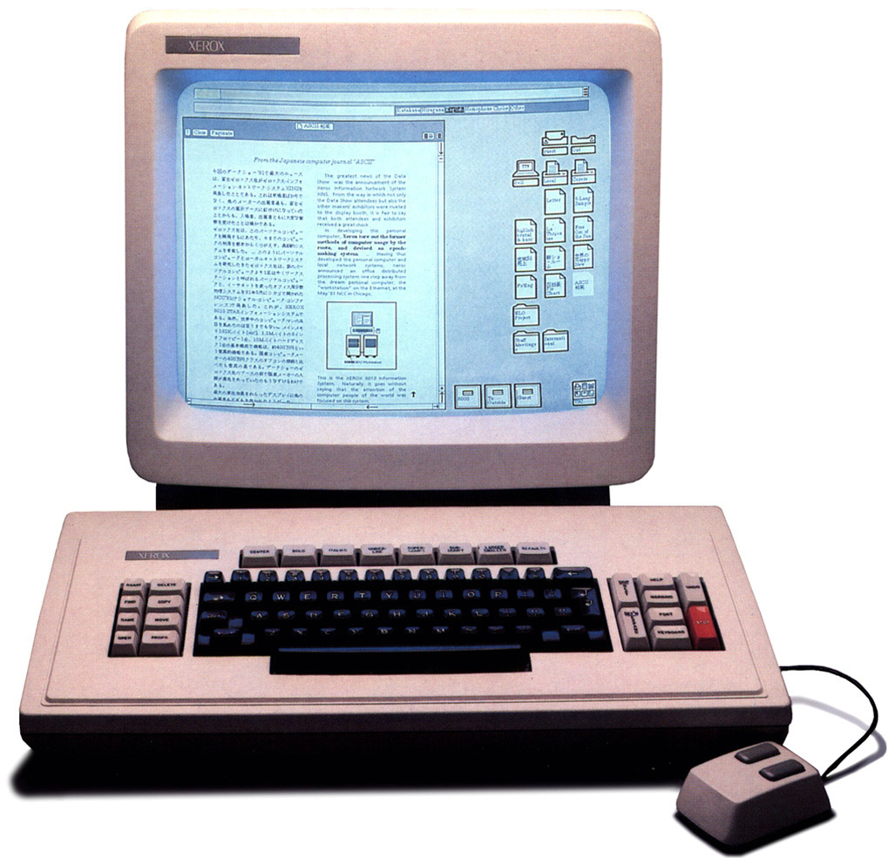
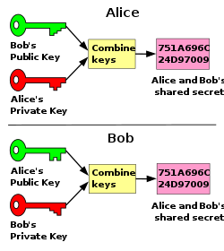
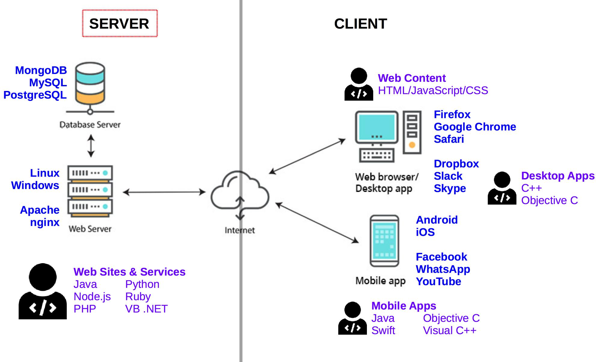
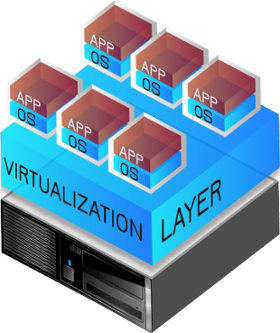
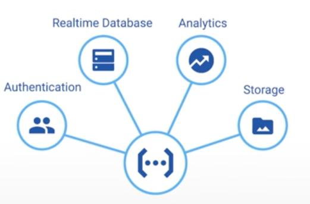
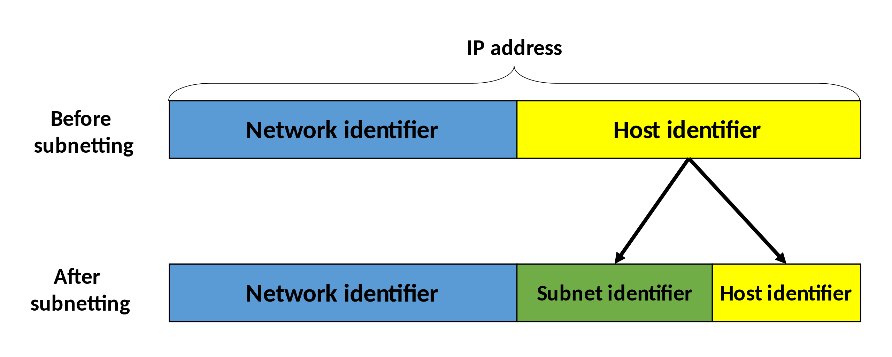
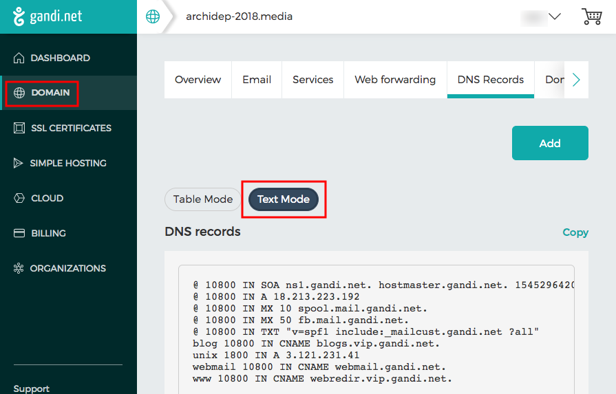
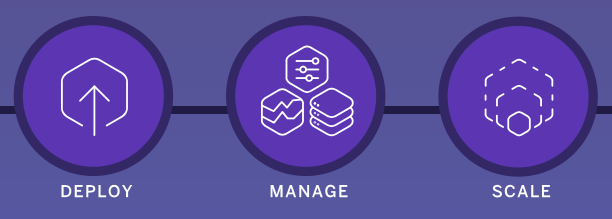
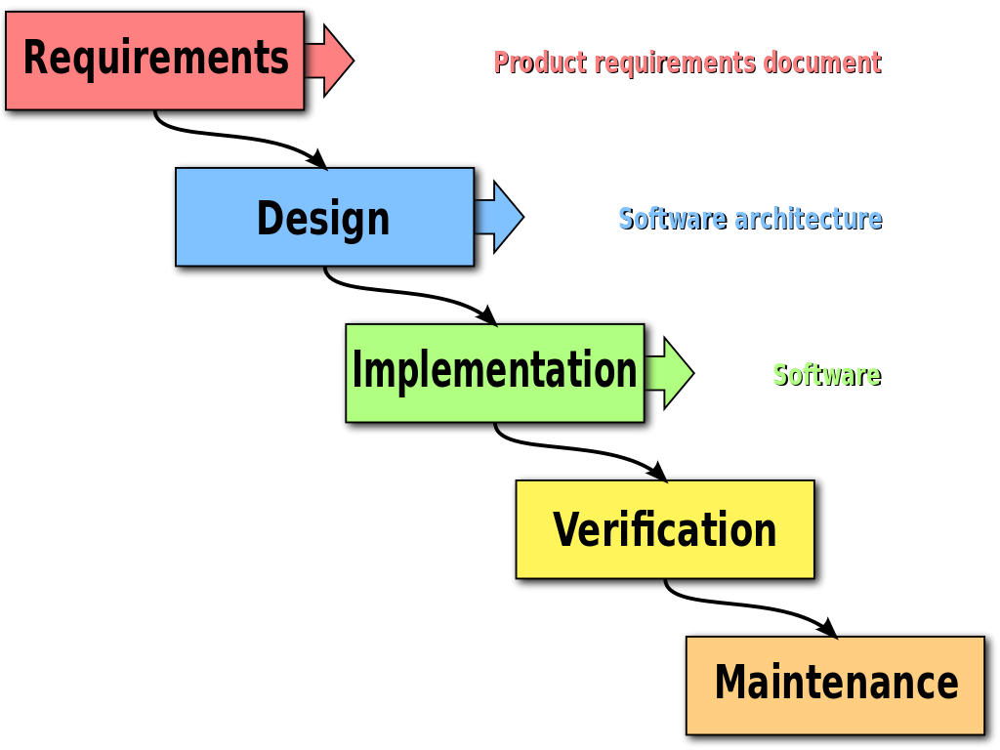

Learn what a command line interface is and learn the basics of navigating and manipulating your filesystem in a Unix shell.
PATH variable
For old time's sake.
Originated the concept of a digital programmable, general-purpose computer.

Published the first algorithm to be carried out by such a machine.
The Analytical Engine was a proposed mechanical general-purpose computer designed by English mathematician and computer pioneer Charles Babbage.
In 1842, Ada Lovelace translated into English and extensively annotated a description of the engine, including a way to calculate Bernoulli numbers using the machine (widely considered to be the first complete computer program). She has been described as the first computer programmer.

Formalized the concepts of algorithm and computation with the Turing machine. He is widely considered to be the father of theoretical computer science and artificial intelligence.
At that time, there was no such thing as a stored computer program. Programs were physically hard-coded. On the ENIAC, this was done using function tables with hundreds of ten-way switches, which took weeks.

The Automatic Computing Engine (ACE) was a British early electronic serial stored-program computer designed by Alan Turing. It used mercury delay lines for its main memory.
Many early general-purpose digital computers used punched cards for data input, output and storage.
Someone had to use a keypunch machine to write your cards, then feed them to the computer.
This is what a program looked like:


Punched cards are much older than computers. They were first invented around 1725.
Teletypewriters (TTYs) became the most popular computer terminals in the 1960s. They were basically electromechanical typewriters adapted as a user interface for early mainframe computers.
This is when the first command line interfaces (CLI) were created. As you typed commands, a program running on the computer would interpret that input, and the output would be printed on physical paper.

As available memory increased, video terminals such as the VT100 replaced TTYs in the 1970s.
Initially they only displayed text. Hence they were fundamentally the same as TTYs: textual input/output devices.

It's also in this period that the Unix operating system was developed. Compared to earlier systems, Unix was the first portable operating system because it was written in the C programming language, allowing it to be installed on multiple platforms.
Unix is the ancestor of Linux. FreeBSD, a Unix-like system, is also used as the basis for macOS (since Mac OS X).
In Unix-like systems, The program serving as the command line interpreter (handling input/output from the terminal) is called a shell.
It is called this way because it is the outermost layer around the operating system; it wraps and hides the lower-level kernel interface).

Eventually, graphical user interfaces (GUIs) were introduced in reaction to the perceived steep learning curve of command line interfaces.
They are one of the most common end user computer interface today.
Note that the GUI of a computer is also a shell. It's simply a different way to interact with the kernel.
Today:
Tomorrow:
Command line interfaces are still in wide use today.
A CLI is a tool that allows you to use your computer by writing what you want to do (i.e. commands), instead of clicking on things.
It's been installed on computers for a long time, but it has evolved "a little" since then. It usually looks something like this:

A CLI is not very user-friendly or visually appealing but it has several advantages:
For these reasons, a lot of tools, especially development tools, don't have any GUI and are only usable through a CLI. Or they have a limited GUI that does not have as many options as the CLI.
Thus, using a CLI is a requirement for any developer today.
CLIs are available on every operating system.
On Unix-like systems (like macOS or Linux), it's an application called the Terminal.
You can use it right away, as it's the de-facto standard.
On Windows, the default CLI is called cmd (or Invite de commandes in French)
However, it does not use the same syntax as Unix-like CLIs (plus, it's bad).
You'll need to install an alternative.
Software terminals are an emulation of old physical terminals like TTYs or the VT100. You will still find references to the term "TTY" in the documentation of some modern command line tools.
You're going to install Git Bash, a software terminal that emulates the popular Bourne-again shell (Bash) on Windows.

You can download the Git Bash Installer on the Git for Windows website.
When it's done, install the software, without changing any default options.
Then, search and open the Git Bash software.
Installing Git Bash will also install Git and Git GUI (see the Git tutorial for more information).
As an alternative, you may also use the Windows Subsystem for Linux, but it sometimes has issues when integrating with other programs not installed in that CLI.
When you open the CLI you will find a blank screen that looks like this:
$>
These symbols represent the prompt and are used to indicate that you have the lead. The computer is waiting for you to type something for it to execute.
The prompt is not always $>.
For example, on earlier macOS versions, it used to be bash3.2$, indicating the
name of the shell (Bash) and its version.
On more recent macOS versions using the Z shell (Zsh), the prompt might
indicate your computer's name, your username and the current directory, e.g.
MyComputer:~ root#.


For consistency, we will always use $> to represent the prompt.
When the computer is working, the prompt disappear and you no longer have the lead.
The
sleepcommand tells the computer to do nothing for the specified number of seconds.
When the computer is done working, it will indicate that you are back in control by showing the prompt again.
A command is a word that you have to type in the CLI that will tell the computer what to do.
The syntax for using commands looks like this:
$> name arg1 arg2 arg3 ...
Note the use of spaces to separate the differents arguments of a command.
name represents the command you want to execute.arg1 arg2 arg3 ... represent the arguments of the command, each of them separated by a space.There are two types of arguments to use with a command (if needed):
Options usually specify how the command will behave.
By convention, they are preceded by - or --:
$> ls `-a` `-l`
We use the ls command to list the content of the current directory. The options tell ls how it should do so:
-a tells it to print all elements (including hidden ones).-l tells it to print elements in a list format, rather than on one line.Other arguments not preceded by anything usually specify what will be used by the command:
$> cd `/Users/Batman`
Here, we use the cd command to move to another directory.
And the argument /Users/Batman tells the command what directory we want to move to.
In the first example, we use the ls command to list elements in the current directory. We also use options to tell ls how it should print elements:
--all tells it to print all elements.-l tells it to print elements in a list format, rather than on one line..Some options require a value:
tar -c -v `-f compressed.tar.gz` file-to-compress
tar is a command to bundle and compress files.
In this example, it takes three options:
-c tells it to compress (instead of uncompressing).-v tells it to be verbose (print more information to the CLI).-f tells it where to store the compressed file;
this is followed immediately by compressed.tar.gz which is the value of that option.It then takes one argument:
file-to-compress is the file (or directory) to compressYou should avoid the following characters in directories and file names you want to manipulate with the CLI:
é, à, ç, etc).They can cause errors in some scripts or tools, and will inevitably complicate using the CLI.
If you have a Why So Serious directory, this WILL NOT work:
$> ls `Why` `So` `Serious`
This command will be interpreted as a call to the ls command with three arguments: Why, So and Serious.
You can use arguments containing spaces, but you have to escape them first, either with quotation marks or backslashes:
$> ls `"Why So Serious"`
$> ls `Why\ So\ Serious`
It's not fun to type directory names, especially when they have spaces you must escape in them,
so the CLI has auto-completion. Type the first few characters of the file or directory you
need, then hit the Tab key:


If there are multiple files or directories that begin with the same characters,
pressing Tab will not display anything.
You need hit Tab a second time to display the list of available choices:

You can type just enough characters so that the CLI can determine which one you want (in this case c or w),
then hit Tab again to get the full path.
You can get help on most advanced commands by executing them with the --help option.
As the option's name implies, it's designed to give you some help on how to use the command:

Some commands don't have the --help option, but there are alternative sources
of information depending on what operating system you're on:
man ls to display the manual for the ls command.help cd to display help for the cd command;
you can also type help to list available commands (only system commands).Some help pages or commands will take over the screen to display their content, hiding the prompt and previous interactions.
Usually, it means that there is content that takes more than one screen to be shown.
You can "scroll" up and down line-by-line using the arrow keys or the Enter key.
To quit these interactive documentations, use the q (quit) key.

When reading a command's manual or documentation, you may find some strange syntax that make little sense to you, like:
cd [-L|[-P [-e]] [-@]] [dir]
ls [-ABCFGHLOPRSTUW@abcdefghiklmnopqrstuwx1] [file ...]
Here are some explanations:
[]: Whatever's inside is optionnal (ex: [-e]).|: You have to chose between options (ex: -L|-P)....: Whatever's before can be repeated (ex: [file ...]).Depending on the documentation, you will also see symbols like this:
<value>--option=VALUEDON'T WRITE <value> or VALUE.
Replace it by an appropriate value for that option or argument.
pwd commandWhen you open a CLI, it places you in your home directory. From there you can navigate your filesystem to go to other directories (more on that later).
But first, you might want to check where you currently are.
Use the pwd command:
$> pwd
/Users/Batman
pwdmeans "print working directory": it gives you the absolute path to the directory you're currently in.
ls commandNow that you know where you are, you might want to know what your current directory is containing.
Use the ls command:
$> ls
(lots and lots of files)
lsmeans "list": it lists the contents of a directory.
By default, ls doesn't list hidden elements.
By convention in Unix-like systems, files that start with . (a dot) are hidden.
If you want it to do that, you need to pass the -a (all) option:
$> ls -a
(lots and lots of files, including the hidden ones)
cd commandIt's time to go out a little and move to another directory.
Suppose you have a Documents directory in your home directory, that contains another directory TopSecret where you want to go.
Use the cd command, passing it as argument the path to the directory you want to go to:
$> pwd
/Users/Batman
$> cd Documents/TopSecret
This is a relative path: it is relative to the current working directory.
You can also go to a specific directory anywhere on your filesystem like this:
$> cd /Users/Batman/Documents
This is an absolute path because it starts with a / character. It starts
at the root of your filesystem so it does not matter where you are now.
You also have auto-completion with the
cdcommand. Hit theTabkey after entering some letters.
. pathThe . path represents the current directory.
The following sequences of commands are strictly equivalent:
$> pwd
/Users/Batman
$> cd Documents/TopSecret
$> pwd
/Users/Batman
$> cd ./Documents/TopSecret
You can also not go anywhere:
$> pwd
/Users/Batman
$> `cd .`
$> pwd
/Users/Batman
Or compress the current directory:
tar -c -v -f /somewhere/compressed.tar.gz `.`
This does not seem very useful now, but it will be in further tutorials.
.. pathTo go up into the parent directory, use the .. path (don't forget the space between cd and ..):
$> pwd
/Users/Batman/Documents
$> `cd ..`
$> pwd
/Users/Batman
You can also drag and drop a directory from your Explorer or your Finder to the CLI to see its absolute path automaticaly written:
$> cd
(Drag and drop a directory from your Explorer/Finder, and...)
$> cd /Users/Batman/Pictures/
At anytime and from anywhere, you can return to your home directory with the cd command, without any argument or with a ~ (tilde):
$> cd
$> pwd
/Users/Batman
$> cd ~
$> pwd
/Users/Batman
To type the
~character, use this combination:
AltGr-^on WindowsAlt-Non Mac
| Path | Where |
|---|---|
. |
The current directory. |
.. |
The parent directory. |
foo/bar |
The file/directory bar inside the directory foo in the current directory. This is a relative path. |
./foo/bar |
Same as the above |
/foo/bar |
The file/directory bar inside the directory foo at the root of your filesystem. This is an absolute path. |
~ |
Your home directory. This is an absolute path. |
~/foo/bar |
The file/directory bar inside the directory foo in your home directory. This is an absolute path. |
Throughout this course, you will often see the following command (or something resembling it):
$> cd `/path/to/projects`
This means that you use the path to the directory in which you store your projects.
For example, on John Doe's macOS system, it could be /Users/jdoe/Projects.
Do not actually write
/path/to/projects. It will obviously fail, unless you happen to have apathdirectory that contains atodirectory that contains aprojectsdirectory...
WARNING: if your Windows/Linux/macOS username contains spaces or accents, you should NOT store your projects under your home directory. You should find a path elsewhere on your filesystem. This will save you a lot of needless pain and suffering.
mkdir commandYou can create directories with the CLI.
Use the mkdir (make directory) command to create a new directory in the current directory:
$> mkdir BatmobileSchematics
You can also create a directory elsewhere:
$> mkdir ~/Documents/TopSecret/BatmobileSchematics
This will only work if all directories down to TopSecret already exist.
To automatically create all intermediate directories, add the -p option:
$> mkdir -p ~/Documents/TopSecret/BatmobileSchematics
touch commandThe touch command updates the last modification date of a file.
It also has the useful property of creating the file if it doesn't exist.
Hence, it's a quick way to create an empty file in the CLI:
$> touch foo.txt
$> ls
foo.txt
echo commandThe echo command simply echoes its arguments back to you:
$> echo Hello World
Hello World
This seems useless, but can be quite powerful when combined with Unix features like redirection. For example, you can redirect the output to a file.
The > operator means "write the output of the previous command into a file".
This allows you to quickly create a simple text file:
$> echo foo `>` bar.txt
$> ls
bar.txt
If the file already exists, it is overwritten.
You can also use the >> operator, which means "append the output of the previous command to the end of a file":
$> echo bar `>>` bar.txt
cat commandThe cat command can display one file or concatenate multiple files in the CLI.
For example, this displays the contents of the previous example's file:
$> cat bar.txt
foo
bar
This creates a new hello.txt file and displays the result of concatenating the two files:
$> echo World > hello.txt
$> cat bar.txt hello.txt
foo
bar
World
Sometimes a command will take too long to execute.
As an example, run this command which will wait one hour before exiting:
$> sleep 3600
As you can see, the command keeps executing and you no longer have a prompt.
Anything you type is ignored, as it is no longer interpreted by the shell,
but by the sleep command instead (which doesn't do anything with it).
By convention in Unix shells, you can always terminate a running command by typing Ctrl-C.
Note that
Ctrl-Cforces termination of a running command. It might not have finished what it was doing.
This is how you reference or use your drives (C:, D:, etc) in Git Bash on Windows:
$> cd /c/foo/bar
$> cd /d/foo
(In the Windows Subsystem for Linux, it's /mnt/c instead of /c.)
Copy/Paste
Since Ctrl-C is used to stop the current process, it can't be used as a shortcut to copy things from the CLI.
Instead, Git Bash has two custom shortcuts:
Ctrl-Insert to copy things from the CLIShift-Insert to paste things to the CLIYou can also use Right-click > Paste if you don't have an
Insertkey.
Vim is an infamous CLI editor originally developed in 1976 (WHAT?!) for the Unix operating system.
Why would you need to learn it?
Sometimes it's just the only editor you have (e.g. on a server). Also some developer tools might open vim for user input.
If this happens (and it will), there's one imperative rule to follow:
DO NOT PANIC!
Open a file by running the vim command with the path to the file you want to create/edit:
vim test.txt
Vim can be unsettling at first, until you know how it works.
Let go of your mouse, it's mostly useless in Vim. You control Vim by typing.
The first thing to understand whith Vim is that it has 3 modes:
To go into each mode use this keys :
| From | Type | To go to |
|---|---|---|
| Normal | : |
Command |
| Normal | i |
Insert |
| Command/Insert | Esc |
Normal |
The Normal mode of Vim is the one you're in when it starts. In this mode, you can move the cursor around with the arrow keys.
You can also use some commands to interact with the text:
| Command | Effect |
|---|---|
: |
Enter Command mode (to save and/or quit) |
i |
Enter Insert mode (to type text) |
x |
Delete the character under the cursor |
dw |
Delete a word, with the cursor standing before the first letter |
dd |
Delete the complete line the cursor is on |
u |
Undo the last command |
At anytime, you can hit the
Esckey to go back to the Normal mode.
The Command mode, which you can only access from the Normal mode, is the one you'll mostly use to save and/or quit.
To enter the Command mode, hit the : key.
From there, you can use some commands:
| Command | Effect |
|---|---|
q |
Quit Vim (will fail if you have unsaved modifications) |
w |
Write (save) the file and all its modifications |
q! |
Force Vim to quit (any unsaved modification will be lost) |
wq or x |
Write and quit, i.e. save the file then quit Vim. |

Nano: a simpler CLI editor to keep your sanity.
If vim is a bit too much for you, Nano is another CLI editor that is much simpler to use and is also usually installed on most Unix-like systems (and in Git Bash).
You can open a file with Nano in much the same way as vim, using the nano
command instead:
$> nano test.txt
Editing files is much more straightforward and intuitive with Nano. Once the file is open, you can simply type your text and move around with arrow keys:

Nano also helpfully prints its main keyboard shortcuts at the bottom of the window. The most important one is
^Xfor Exit. In keyboard shortcut parlance, the^symbol always represents the control key.
So, to exit from Nano, type Ctrl-X.
When you exit Nano with Ctrl-X, it will ask you whether you want to save your
changes:

Press the y key to save or the n key to discard your changes.
When saving changes, Nano will always ask you to confirm the filename where the changes should be saved:

As you can see, it tells you the name of the file you opened. Now you can:
Enter to save the file.Editing the shell configuration will depend on your shell: for Zsh (the default
terminal shell on macOS) or Bash shell (the default in Git Bash and most Linux
systems), you have to set the $EDITOR environment variable. You can do that by
adding the following line to your ~/.zshrc or ~/.bash_profile file
depending on which shell you are using:
export EDITOR=nano
Remember that you must relaunch your terminal for this change to take effect.
If you are unsure of what shell you are using, type in the following command. The output will display the name of your current shell.
$> echo $0
bash
Hint: now that you know how to use Nano, you can edit your Bash profile file with the following command:
nano ~/.bash_profile.
On Ubuntu, you can list available editors and choose the default one with the following command:
$> sudo update-alternatives --config editor
PATH variableWhen you type a command in the CLI, it will try to see if it knows this command by looking in some directories to see if there is an executable file that matches the command name.
$> rubbish
bash: rubbish: command not found
This means that the CLI failed to found the executable named
rubbishin any of the directories where it looked.
The list of the directories (and their paths) in which the CLI searches is stored in the PATH environment variable, each of them being separated with a :.
You can print the content of your PATH variable to see this list:
$> echo $PATH
/usr/local/bin:/bin:/usr/bin:/custom/dir
PATHAssuming your PATH looks like this:
$> echo $PATH
/usr/local/bin:/bin:/usr/bin:/custom/dir
What happens when you run the following command?
$> ls -a -l
/usr/local/bin directory. There is no
executable named ls there, moving on.../bin directory. There is an executable named
ls there! Execute it with arguments -a and -l.PATH. If there happens
to be an ls executable in the /custom/dir directory, it will not be
used.You can check where a command is with the which command:
$> which ls
/bin/ls
If there are multiple versions of a command in your PATH, you can add the -a
option to list them all:
$> which -a
/opt/homebrew/bin/git
/usr/bin/git
Remember, the shell will use the first one it finds, so in this example it would use
/opt/homebrew/bin/gitif you typegit, completely ignoring/usr/bin/git.
Many development tools you install come with executables that you can run from the CLI (e.g. Git, Node.js, MongoDB).
Some of these tools will install their executable in a standard directory like /usr/local/bin, which is already in your PATH.
Once you've installed them, you can simply run their new commands.
Git and Node.js, for example, do this.
However, sometimes you're downloading only an executable and saving it in a directory somewhere that is not in the PATH.
Run the following commands to download a simple Hello World shell script and make it into an executable:
$> mkdir -p ~/hello-program/bin
$> curl -o ~/hello-program/bin/hello https://gist.githubusercontent.com/AlphaHydrae/8e09bf8790cbd6e3c7d9974988da3c28/raw/74372a1be35e973897c0a1fc946f3d18012a860c/hello.sh
$> chmod 755 ~/hello-program/bin/hello
You should now be able to find it in the ~/hello-program/bin directory:
$> ls ~/hello-program/bin
hello
It's now installed, we can find it using the CLI, but it still cannot be run. Why?
$> hello
command not found: hello
PATHYou can run a command from anywhere by writing the absolute path to the executable:
$> ~/hello-program/bin/hello
Hello World
You can also manually go to the directory containing the executable and run the command there:
$> cd ~/hello-program/bin
$> ./hello
Hello World
When the first word on the CLI starts with
/,~/,./or../, the shell interprets it as a file path. Instead of looking for a command in thePATH, it simply executes that file.
But, ideally, you want to be able to just type hello, and have the script be executed.
For this, you need to add the directory containing the executable to your PATH variable.
PATH variableTo add a new path in your PATH variable, you have to edit a special file, used
by your CLI interpreter (shell). This file depends upon the shell you are using:
| CLI | File to edit |
|---|---|
| Git Bash | ~/.bash_profile |
| Terminal / Zsh | ~/.zshrc |
Open the adequate file (.bash_profile for this example) from the CLI with
nano or your favorite editor if it can display hidden files:
$> nano ~/.bash_profile
Add this line at the bottom of your file (use i to enter insert mode if
using Vim):
export PATH="$HOME/hello-program/bin:$PATH"
If you're in Vim, press Esc when you're done typing, then :wq and Enter to
save and quit. If you're in Nano, press Ctrl-X, then ansert Yes and confirm
the filename.
Remember to close and re-open your CLI to have the shell reload its configuration file.
You should now be able to run the Hello World shell script as a command simply by typing hello:
$> hello
Hello World
You don't even have to be in the correct directory:
$> cd
$> pwd
/Users/jdoe
$> hello
Hello World
And your CLI knows where it is:
$> which hello
/Users/jdoe/hello-program/bin/hello
You have added a directory to the PATH:
export PATH="~/hello-program/bin:$PATH"
This line says:
PATH variable.~/hello-program/bin and the previous value of the PATH, separated by :.The next time you run a command, your shell will first look in this directory for executables, then in the rest of the PATH.
Common mistakes
What you must put in the PATH is NOT the path to the executable,
but the path to the directory containing the executable.
You must re-open your CLI for the change to take effect:
the shell configuration file (e.g. ~/.bash_profile) is only applied when the shell starts.
Command-line shells have been worked on for a very long time. Modern shells such as the Z shell (Zsh) have a whole community that created many plugins to simplify your daily command-line work.
On macOS, you may want to install Oh My Zsh to fully unleash the power of your Terminal. It has plugins to integrate with Homebrew, Git, various programming languages like Ruby, PHP, Go, and much more.
On Windows, you may want to install the Windows Subsystem for Linux so you can install a Linux distribution like Ubuntu. You can then install Zsh and Oh My Zsh as well.
Learn about the SSH cryptographic network protocol and how to use the SSH command line tool to connect to other computers.
You will need
Recommended reading
ssh commandSSH is a cryptographic network protocol for operating network services securely over an unsecured network.
Its main uses are remote command-line login and securing network services like Git or FTP.
SSH is a client-server protocol.

Using an SSH client, a user (or application) on machine A can connect to an SSH server running on machine B, either to log in (with a command line shell) or to execute programs.
Step 1: SSH establishes a secure channel using various cryptographic techniques. This is handled automatically by the SSH client and server.

Step 2: The user or service that wants to connect to the SSH server must authenticate to gain access, for example with a password.
Step 3: The logged-in user or service can do stuff on the server.
Note that steps 1 and 2 are separate and unrelated processes.
SSH establishes a secure channel between two computers over an insecure network (e.g. a local network or the internet).

Establishing and using this secure channel requires a combination of:
Symmetric-key algorithms can be used to encrypt communications between two or more parties using a shared secret. AES is one such algorithm.

Assuming all parties possess the secret key, they can encrypt data, send it over an insecure network, and decrypt it on the other side. An attacker who intercepts the data cannot decrypt it without the key (unless a weakness is found in the algorithm or its implementation).
Windows users using Git Bash may want to open a new shell with the command
winpty bashbefore attempting to reproduce these examples. This is because of a bug in Git Bash which causes problems with some interactive commands.
Create a plaintext file containing the words "too many secrets":
$> cd /path/to/projects
$> mkdir aes-example
$> cd aes-example
$> echo 'too many secrets' > plaintext.txt
You may encrypt that file with the OpenSSL library (installed on most computers). Executing the following command pipeline will prompt you for an encryption key:
$> cat plaintext.txt | openssl aes-256-cbc > ciphertext.aes
enter aes-256-cbc encryption password:
Verifying - enter aes-256-cbc encryption password:
The resulting ciphertext.aes file cannot be decrypted without the key.
Executing the following command pipeline and entering the same key as before when prompted will decrypt it:
$> cat ciphertext.aes | openssl aes-256-cbc -d
enter aes-256-cbc decryption password:
too many secrets
Both parties must already possess the shared encryption key to perform symmetric cryptography. It used to be physically transferred, for example in the form of the codebooks used to operate the German Enigma machine during World War II. But that is impractical for modern computer networks. And sending the key over the insecure network risks it being compromised by a Man-in-the-Middle attack.
Public-key or asymmetric cryptography is any cryptographic system that uses pairs of keys: public keys which may be disseminated widely, while private keys which are known only to the owner. It has several use cases:
Encryption
Encrypt and decrypt data.

Key exchange
Securely exchange shared secret keys.
Digital Signatures
Verify identity and protect against tampering.

There is a mathematical relationship between a public and private key, based on problems that currently admit no efficient solution such as integer factorization, discrete logarithm and elliptic curve relationships.
Here's a mathematical example based on integer factorization.
Basically, these problems allow a private-public key pair to have the following properties:
Effective security only requires keeping the private key private; the public key can be openly distributed without compromising security.

One use case of asymmetric cryptography is asymmetric encryption, where the sender encrypts a message with the recipient's public key. The message can only be decripted by the recipient using the matching private key.
Let's try encryption with RSA this time, an asymmetric algorithm.
To do that, we need to generate a key pair, i.e. a private and public key.
The following commands will generate first a private key in a file named private.pem,
then a corresponding public key in a file named public.pem:
$> cd /path/to/projects
$> mkdir rsa-example
$> cd rsa-example
$> openssl genrsa -out private.pem 1024
Generating RSA private key, 1024 bit long modulus
.............++++++
.................................++++++
e is 65537 (0x10001)
$> openssl rsa -in private.pem -out public.pem -outform PEM -pubout
writing RSA key
$> ls
private.pem public.pem
Create a file containing your plaintext:
$> echo 'too many secrets' > plaintext.txt
Encrypt it with the public key using the OpenSSL library:
$> openssl rsautl -encrypt -inkey public.pem -pubin \
-in plaintext.txt -out ciphertext.rsa
In addition to your key pair, you should have two additional files containing the plaintext and ciphertext:
$> ls
ciphertext.rsa plaintext.txt private.pem public.pem
The ciphertext can now be decrypted with the corresponding private key:
$> openssl rsautl -decrypt -inkey private.pem -in ciphertext.rsa
too many secrets
Note that you cannot decrypt the ciphertext using the public key:
$> openssl rsautl -decrypt -inkey public.pem -in ciphertext.rsa
unable to load Private Key [...]
Of course, a hacker using another private key cannot decrypt it either:
$> openssl genrsa -out hacker-private.pem 1024
Generating RSA private key, 1024 bit long modulus [...]
$> openssl rsautl -decrypt -inkey hacker-private.pem -in ciphertext.rsa
RSA operation error [...]
Hence, you can encrypt data and send it to another party provided that you have their public key. No single shared key needs to be exchanged (the private key remains a secret known only to the recipient).
Asymmetric encryption protects data sent over an insecure network from attackers, but only as long as the private keys remain private. It does not provide forward secrecy, meaning that if the private keys are compromised in the future, all data encrypted in the past is also compromised.

So far we learned that:
Additionally, it's important to note that symmetric encryption is much faster than asymmetric encryption. It's also less complex and can easily be implemented as hardware (most modern processors support hardware-accelerated AES encryption).
Ideally, we would want to be able to share a fast symmetric encryption key without transmitting it physically or over the network. This is where asymmetric cryptography comes to the rescue again. Encryption is not all it can do; it can also do key exchange.
The Diffie-Hellman Key Exchange, invented in 1976 by Whitfield Diffie and Martin Hellman, was one of the first public key exchange protocols allowing users to securely exchange secret keys even if an attacker is monitoring the communication channel.
This conceptual diagram illustrates the general idea behind the protocol:
The result is a final color mixture that is identical to the partner's final color mixture, and which was never shared publicly. When using large numbers rather than colors, it would be computationally difficult for a third party to determine the secret numbers.
The Diffie-Hellman key exchange solves the problem of transmitting the shared secret key over the network by computing it using asymmetric cryptography. It is therefore never transmitted.
However, a Man-in-the-Middle attack is still possible if the attacker can position himself between the two parties to intercept and relay all communications.

One of the other main uses of asymmetric cryptography is performing digital signatures. A signature proves that the message came from a particular sender.
Note that a digital signature does not provide confidentiality. Although the message is protected from tampering, it is not encrypted.
In the same directory as the previous example (asymmetric encryption with RSA),
create a message.txt file with the message that we want to digitally sign:
$> echo "Hello Bob, I like you" > message.txt
The following OpenSSL command will use the private key file private.pem (from the previous example)
and generate a digital signature based on the message file message.txt.
The signature will be stored in the file signature.rsa.
$> openssl dgst -sha256 -sign private.pem -out signature.rsa message.txt
If you open the file, you can see that it's simply binary data. You can see it base64-encoded with the following command:
$> openssl base64 -in signature.rsa
The following command uses the public key to check that the signature is valid for the message:
$> openssl dgst -sha256 -verify public.pem -signature signature.rsa message.txt
Verified OK
If you modify the message file and run the command again, it will detect that the digital signature no longer matches the message:
$> openssl dgst -sha256 -verify public.pem -signature signature.rsa message.txt
Verification Failure
A cryptographic hash function is a hash function that has the following properties:

SSH uses Message Authentication Codes (MAC), which are based on cryptographic hash functions, to protect both the data integrity and authenticity of all messages sent through the secure channel.
SSH uses most of the previous cryptographic techniques together to achieve as secure a channel as possible:

SSH counters the following threats:
The last two are countered by the asymmetric digital signature performed by the server on the DH key exchange, as long as the client actually checks the server-supplied public key. Otherwise, there is no guarantee that the server is genuine.
SSH does not counter the following threats

ssh commandThe ssh command is available on most Unix-like systems (e.g. Linux & macOS)
and in Unix shells on Windows (e.g. Git Bash or WSL). Its basic syntax is:
ssh [user@]hostname [command]
Here's a few examples:
ssh example.com - Connect to the SSH server at example.com and log in (with the same username as in your current shell).ssh jdoe@example.com - Connect to the SSH server at example.com and log in
as user jdoe.ssh jdoe@192.168.50.4 hostname - Run the hostname command as user jdoe
on the SSH server at 192.168.50.4.Run man ssh to see available options (or just ssh in Git Bash).
When you connect to an SSH server for the first time, you will most likely get a message similar to this:
$> ssh example.com
The authenticity of host 'example.com (192.168.50.4)' can't be established.
ECDSA key fingerprint is SHA256:colYVucS/YU0JSK7woiLAf5ChPgJYAR1BWJlET2EwDI=
Are you sure you want to continue connecting (yes/no)?
What does this mean? I thought SSH was secure?
As we've seen, when SSH establishes a secure channel, a Diffie-Hellman asymmetric key exchange will occur to agree on a secret symmetric encryption key. To secure this exchange, the server will perform an asymmetric digital signature so that no attacker can impersonate the server.
To verify the signature, your SSH client will ask the server for its public key. This is where a man-in-the-middle attack is possible. SSH warns you that someone is sending you a public key, but it has no way of verifying whether it's actually the server's public key, or whether it's the public key of an attacker performing a man-in-the-middle attack.
Basically, SSH makes the following guarantee:
SSH does not guarantee that:
If you are using SSH to transmit sensitive data, you should check that the server's public key is the correct one before connecting.
One way to do this is to use the key fingerprint that is shown to you when first connecting. The key fingerprint is a cryptographic hash of the public key:
ECDSA key fingerprint is SHA256:colYVucS/YU0JSK7woiLAf5ChPgJYAR1BWJlET2EwDI=
Some services that allow you to connect over SSH, like GitHub, publish their SSH key fingerprints on their website so that users may check them. In other cases, the key may be physically transmitted to you, or dictated over the phone.
You should check that both fingerprints match before proceeding with the connection. If it does not, either you typed the wrong server address, or an attacker may be trying to hack your connection.
If you accept the connection, SSH will save the server's address and public key in its known hosts file. You can see the contents of this file with the following command:
$> cat ~/.ssh/known_hosts
example.com,192.168.50.4 ecdsa-sha2-nistp256 eTJtK2wrRzhW5RQzUHprbFJa...
The format of each line in this file is [domain],[ipaddr] algorithm pubkey.
The line above means that when SSH connects to example.com at IP address 192.168.50.4,
it expects the server to send this specific public key (eTJtK2wrRzhW5RQzUHprbFJa...)
using the ECDSA algorithm
(another asymmetric algorithm like RSA, based on elliptic curve cryptography).
Another solution to SSH man-in-the-middle attacks when first connecting is to put the server's public key in the known hosts file yourself.
If you have previously obtained the server's public key (the full key, not just the fingerprint), you can add it to the known hosts file before attempting to connect.
If you do that, SSH will consider that the server is already a known host, and will not prompt you to accept the public key.
The known hosts file has another purpose. Once SSH knows to expect a specific public key for a given domain or IP address, it will warn you if that public key changes:
$> ssh 192.168.50.4
@@@@@@@@@@@@@@@@@@@@@@@@@@@@@@@@@@@@@@@@@@@@@@@@@@@@@@@@@@@
@ WARNING: REMOTE HOST IDENTIFICATION HAS CHANGED! @
@@@@@@@@@@@@@@@@@@@@@@@@@@@@@@@@@@@@@@@@@@@@@@@@@@@@@@@@@@@
IT IS POSSIBLE THAT SOMEONE IS DOING SOMETHING NASTY!
Someone could be eavesdropping on you right now (man-in-the-middle attack)!
It is also possible that a host key has just been changed.
The fingerprint for the ECDSA key sent by the remote host is
SHA256:FUwFoK/hcqRAvJgDFmljwOur8t/mhfbm4tfIxdaVTQ==.
Please contact your system administrator.
Add correct host key in /path/to/.ssh/known_hosts to get rid of this message.
Offending ECDSA key in /path/to/.ssh/known_hosts:33
ECDSA host key for 192.168.50.4 has changed and you have requested strict checking.
Host key verification failed.
As the message mentions, either the server changed its SSH key pair, or an attacker may be intercepting your communications.
If you're sure it's not an attack, for example if you know the server actually changed its key pair, you can eliminate this warning by putting the correct public key in the known hosts file (or by removing the offending line).
Establishing a secure channel is one thing, but that only ensures an attacker cannot intercept communications. Once the channel is established, you must still authenticate, i.e. prove that you are in fact the user you are attempting to log in as.
How you authenticate depends on how the SSH server is configured.
Password authentication is one method.
When enabled, the SSH server will prompt you for the correct password;
in this example, the password of the user named jdoe in the server's user database:
$> ssh jdoe@192.168.50.4
The authenticity of host '192.168.50.4 (192.168.50.4)' can't be established.
ECDSA key fingerprint is SHA256:E4GYJCEoz+G5wv+EdkPyRLytgP7aTj9BS9lr1d38Xg==.
Are you sure you want to continue connecting (yes/no)? yes
Warning: Permanently added '192.168.50.4' (ECDSA) to the list of known hosts.
jdoe@192.168.50.4's password:
Most SSH clients will not display anything while you type your password. Simply press
Enterwhen you're done to submit it.
If you run the ssh command with no extra arguments and authenticate with your password,
SSH will run the default shell configured for that user, typically Bash on Linux servers:
$> ssh jdoe@192.168.50.4
jdoe@192.168.50.4's password:
Welcome to Ubuntu 18.04.1 LTS (GNU/Linux 4.15.0-33-generic x86_64)
System information as of Fri Sep 7 13:16:56 UTC 2018
...
$
Note that you may have a different command line prompt once you are connected, in this example
$instead of$>.
You are now connected to a Bash shell running on the server. Anything you type is encrypted through SSH's secure channel and interpreted by that shell. Any data it outputs is sent back through the channel and displayed in your terminal.

Disconnect with the command exit (or with Ctrl-D on Linux or macOS).
You should be back to the shell running on your local computer, with your usual prompt:
$ exit
Connection to 192.168.50.4 closed.
$>
Sometimes, you might forget what shell your terminal is connected to. Is it a shell on your local machine or one running on the server?
If you're not sure, the hostname command may help you.
It prints the network name of the current machine:
$> hostname
MyComputer.local
$> ssh jdoe@192.168.50.4
jdoe@192.168.50.4's password:
$ hostname
example.com
In this example, the local computer is named MyComputer.local,
while the server is named example.com.
As you can see, the hostname command returns different results before and after connecting to the server with SSH,
because it's running on your local machine the first time, but is running on the server the second time.
When you execute ssh with the [command] option,
it will execute the command and close the connection as soon as that command is done.
Run this from your local shell:
$> hostname
MyComputer.local
$> ssh jdoe@192.168.50.4 echo Hello World
Hello World
$> hostname
MyComputer.local
As you can see, you are still in your local shell.
The connection was closed as soon as the echo command completed.
Password authentication works, but it has some drawbacks:
As explained earlier, SSH uses asymmetric cryptography (among other techniques) to establish its secure channel. It's also possible to use asymmetric cryptography to authenticate.
If you have a private-public key pair, you can give your public key to the server. Using your private key, your SSH client can prove to the SSH server that you are the owner of that public key.
This has advantages over password authentication:
Note that public key authentication is only as secure as the file containing your private key. If you publish that file anywhere or allow your local machine to be compromised, the attacker will be able to impersonate you on any server or service where you put your public key.
By default, SSH keys are stored in the .ssh directory in your home directory:
$> ls ~/.ssh
id_rsa id_rsa.pub
If you have the id_rsa and id_rsa.pub files, you're good to go,
since SSH expects to find your main RSA private key at ~/.ssh/id_rsa.
(You might also have a default key pair using another algorithm,
such as an ECDSA key pair with files named id_ecdsa and id_ecdsa.pub.)
If the directory doesn't exist or is empty, you don't have a key pair yet.
You may have a key with a different name, e.g.
github_rsa&github_rsa.pub, as is sometimes generated by some software. You can use this key if you want, but since it doesn't have the default name, you will have to add a-i ~/.ssh/github_rsaoption to all your SSH commands. Generating a new key with the default name for command line use would probably be easier.
On Windows, you can display hidden files to access your
.sshdirectory manually. On macOS, typeopen ~/.sshin your Terminal.
ssh-keygen commandThe ssh-keygen command is usually installed along with SSH and can generate a key pair for you.
It will ask you a couple of questions about the key:
~/.ssh/id_rsa for an RSA key).Should I protect my key with a password?
If you enter no password, your key will be stored in the clear. This will be convenient as you will not have to enter a password when you use it. However, any malicious code you allow to run on your machine could easily steal it.
If your key is protected by a password, you can run an SSH agent to unlock it only once per session instead of every time you use it.
Simply running ssh-keygen with no arguments will ask you the required information and generate a new RSA key pair:
$> ssh-keygen
Generating public/private rsa key pair.
Enter file in which to save the key (/home/jdoe/.ssh/id_rsa):
Created directory '/home/jdoe/.ssh'.
Enter passphrase (empty for no passphrase):
Enter same passphrase again:
Your identification has been saved in /home/jdoe/.ssh/id_rsa.
Your public key has been saved in /home/jdoe/.ssh/id_rsa.pub.
The key fingerprint is:
SHA256:MmwL9n4KOUCuLoyvGJ7nWRDXjTSGAXO8AcCNVqmDJH0 jdoe@497820feb22a
The key's randomart image is:
+---[RSA 2048]----+
|.o===oo+ |
|.=.oE++ + |
|= oo .oo . |
|.= oo |
| +.o = S |
| . o.= + |
|= +.o |
|*o..o+ . |
|+*+o oo |
+----[SHA256]-----+
To authenticate you, the server will need your public key. That way, you will be able to prove, using your private key, that you are the owner of that public key.
Remember, your private key MUST remain private (i.e. the
id_rsafile). You should never give it to any person, server or web service. Only give your public key (i.e. theid_rsa.pubfile).
authorized_keys fileTo authenticate you, the SSH server will look for the authorized keys file for your user account (there is one for each user).
By default, the path to this file is ~/.ssh/authorized_keys on the computer where the SSH server is running (not your local machine).
This file is simply a list of the public keys that should be granted access to that account (provided that you can prove ownership of the key):
ssh-rsa AAAAB3NzaC1yc2E... key1
ssh-rsa fE2deXdtagpHXsa... key2
...
You can see its contents by running cat ~/.ssh/authorized_keys on the target machine.
It may not exist yet if you have never authenticated with a public key.
ssh-copy-idThe ssh-copy-id uses the same syntax as the ssh command to connect to another computer (e.g. ssh-copy-id jdoe@192.168.50.4).
Instead of opening a new shell, however, it will copy your local public key(s) to your user account's
authorized_keys file on the target computer.
You will probably have to enter your password, so ssh-copy-id can log in and copy your key.
But once that is done, SSH should switch to public key authentication and you should not have to enter your password again to log in.
SSH will use your private key to authenticate you instead.
(You may have to enter your private key's password though, if it is protected by one.)
Log out and connect again with ssh to see it in action.
You can also create the
authorized_keysfile manually. Note that both the file and its parent directory must have permissions that make it accessible only to your user account, or the SSH server will refuse to use it for security reasons. The following commands can set up the file on the target machine:$> mkdir -p ~/.ssh && chmod 700 ~/.ssh $> touch ~/.ssh/authorized_keys && chmod 600 ~/.ssh/authorized_keys
You may have multiple key pairs:
ssh-keygen.Having multiple key pairs may be part of a security strategy to limit the access an attacker might gain if one of them is compromised.
To use a specific key pair, use the ssh command's -i option,
which allows you to choose the private key file you want to use:
$> ssh -i ~/.ssh/custom_key_rsa jdoe@192.168.50.4
Note: it is the private key file you want to use with the
-ioption, not the public key, as the private key is the one your SSH client will use to prove that it owns the public key.
A few tips on managing your key pairs:
id_rsa and id_rsa.pub)
so that you don't have to regenerate a pair if you lose your computer or switch to another computer.
(You would then have to replace the old public key with the new one everywhere you used it.)ssh-copy-id to copy your public key to other computers to use public key authentication instead of password authentication.id_rsa.pub) and provide it to them in your account's settings.As mentionned initially, SSH is a network protocol. It can be used not only for command line login, but to secure other network services.
A few examples are:
scp) - A means of securely transferring computer files between a local and remote host.scpIn principle, the scp command works like the Unix cp (copy) command, except that it can copy files to and from other computers that have an SSH server running,
using the SSH syntax for connection:
$> echo bar > foo.txt
$> scp foo.txt jdoe@192.168.50.4:foo.txt
foo.txt 100% 4 0.6KB/s 00:00
This command copies your local foo.txt file to the home directory of the jdoe user account on the remote computer.
You can check that the file was indeed copied with a quick SSH command:
$> ssh jdoe@192.168.50.4 cat foo.txt
bar
You can also copy files from the remote computer to your local computer:
$> scp jdoe@10.192.167.228:foo.txt foo2.txt
foo.txt 100% 4 5.7KB/s 00:00
$> cat foo2.txt
bar
Here's a few additional examples of how to use the scp command:
scp foo.txt jdoe@192.168.50.4:bar.txt
Copy the local file foo.txt to a file named bar.txt in jdoe's home directory on the remote computer.
scp foo.txt jdoe@192.168.50.4:
Copy the file to jdoe's home directory with the same filename.
scp foo.txt jdoe@192.168.50.4:/tmp/foo.txt
Copy the file to the absolute path /tmp/foo.txt on the remote computer.
scp jdoe@192.168.50.4:foo.txt jsmith@192.168.50.5:bar.txt
Copy the file from one remote computer to another.
scp -r foo jdoe@192.168.50.4:foo
Recursively copy the contents of directory foo to the remote computer.
SFTP is an alternative to the original FTP protocol to transfer files. Since FTP is insecure (e.g. passwords are sent unencrypted), SFTP is an alternative that goes through SSH's secure channel and therefore poses fewer security risks.
Most modern FTP clients support SFTP. Here's a couple:
Many code editors also have SFTP support available through plugins.
If you use a private key that is password-protected, you lose part of the convenience of public key authentication: you don't have to enter a password to authenticate to the server, but you still have to enter the key's password to unlock it.
The ssh-agent command can help you there.
It runs a helper program that will let you unlock your private key(s) once,
then use it multiple times without entering the password again each time.
There are several ways to run an SSH agent. You can run it in the background:
Or you can run an agent and have it start a new shell for you:
$> ssh-agent bash
The advantage of this last technique is that the agent will automatically quit when you exit the shell, which is good since it's not necessarily a good idea to keep an SSH agent running forever for security reasons.
The associated ssh-add command will take your default private key (e.g. ~/.ssh/id_rsa)
and prompt you for your password to unlock it:
$> ssh-add
Enter passphrase for /Users/jdoe/.ssh/id_rsa:
Identity added: /Users/jdoe/.ssh/id_rsa (/Users/jdoe/.ssh/id_rsa)
The unlocked key is now kept in memory by the agent.
The ssh command (and other SSH-related commands like scp)
will not prompt you for that key's password as long as the agent keeps running.
If you want to load another key than the default one, you can specify its path:
$> ssh-add /path/to/custom_id_rsa
Learn the basics of shell scripting with Bash.
You will need
Recommended reading
In a Unix-like operating system, a file that can be executed (someone has the
x permission on it) should be one of the following:
When an executable text file is run, a Unix-like operating system looks for a shebang on the first line. A shebang is a line with the following format:
#!`interpreter` optional-args
For example, the following is a valid shebang:
#!/bin/bash
In this example, it tells the operating system that the interpreter which should run this file is /bin/bash,
meaning that this is a Bash script.
In a bash script, you can put anything you could type in a Bash shell:
#!/bin/bash
echo Hello World
In a PHP script, you can put any PHP code you want:
#!/usr/bin/php
<?php
echo 'Hello World';
?>
Basically, what you can put in a script depends on the interpreter you're using.
Simply create your script:
$> printf '#!/bin/bash\necho Hello World' > test.sh
Make it an executable:
$> chmod +x test.sh
And run it:
$> ./test.sh
Hello World
The following a few examples of shebangs, but it is nowhere near exhaustive:
| Shebang | Script contents |
|---|---|
#!/bin/sh |
Bourne shell commands |
#!/bin/bash |
Bash shell commands |
#!/bin/zsh |
Z shell commands |
#!/usr/bin/node |
Node.js code |
#!/usr/bin/php |
PHP code |
#!/usr/bin/python |
Python code |
#!/usr/bin/ruby |
Ruby code |
Of course, the path to the interpreter must correspond to the actual path of the command used (
sh,bash,php, etc). It might differ on your machine. Usewhich bashto find the location of the Bash executable, for example.
Shell scripting is the practice of writing scripts that contain series of shell commands that you want to be able to reuse.
Any script with a shell as the interpreter is a "shell script".
A script using PHP as the interpreter is still a script, but it's not a "shell script". It's a PHP script.
A few pointers on writing Bash scripts (compatible with most POSIX shells).
You can use any shell command in a shell script:
#!/bin/bash
echo Hello World
date
ls
This script could print:
Hello World
Thu Jan 10 23:46:52 CET 2019
file.txt directory ...
By default, a script executes in the current shell directory.
You can use cd to move around to other directories:
#!/bin/bash
pwd
cd /home
pwd
This script could print:
/some/where/over/the/rainbow
/home
Assuming it was executed from the /some/where/over/the/rainbow directory.
You can declare and reuse variables in scripts:
#!/bin/bash
FOO=bar
echo $FOO
If your variable contains whitespace (spaces, new lines, etc), be sure to quote it when declaring and using it to avoid issues:
#!/bin/bash
FOO="bar baz"
echo "$FOO"
You can store the result of a command in a variable by wrapping it with backticks:
#!/bin/bash
FILES=\`ls -1`
NUMBER_OF_FILES=\`echo "$FILES" | wc -l`
echo There are $NUMBER_OF_FILES files
This script would output 10 if there are 10 files in the current directory.
Environment variables are also available as variables in shell scripts:
#!/bin/bash
echo $PATH
To set an environment variable, do it like you would in any Bash shell:
#!/bin/bash
export FOO=bar
Of course, the
$FOOenvironment variable in this example will only be set in the context of this script and its child processes (if any).
Bash has a classic if/then/else construct:
#!/bin/bash
FOO="bar"
if [[ "$FOO" -eq "foo" ]]; then
echo FOO is foo
elif [[ "$FOO" -eq "bar" ]]; then
echo FOO is bar
else
echo foo is something else
fi
The
[[ ]]syntax is a Bash test construct. Also see Bash other comparison operators.
test built-in commandThe test command which comes with Bash is another way to write some conditions:
#!/bin/bash
EMPTY_VAR=
FULL_VAR="full"
FILE="/path/to/some/file"
if test -z "$EMPTY_VAR"; then
echo variable is empty
fi
if test -n "$FULL_VAR"; then
echo variable is not empty
fi
if test -f "$FILE"; then
echo file exists
else
echo file does not exist
fi
See Bash file test operators and other comparison operators.
Bash has a for loop:
for item in one two three; do
echo $item
done
The above code would print:
one
two
three
Bash also has
whileanduntil. See loops & branches.
Bash has a number of special variables which are always available:
| Variable | Description |
|---|---|
$0 |
Name of the command being executed. |
$1 |
First argument passed to the script on the command line (and so on with $2, $3, etc). |
$@ |
All arguments passed to the script. |
$? |
Exit value of the last executed command. |
For example, this script says hello to the name passed as the first argument:
#!/bin/bash
echo Hello $1
set built-in commandThe set command is specific to Bash and can be used to toggle its option flags.
For example, the -e option aborts the script if an error occurs, while the -x option prints commands before executing them:
#!/bin/bash
set -ex
echo Hello World
cat file-that-does-not-exist
echo Done
This script could print:
+ echo Hello World
Hello World
+ cat file-that-does-not-exist
cat: file-that-does-not-exist: No such file or directory
Note that each command is printed with a leading
+before being executed, and that the script stops as soon as an error occurs (which is not the case by default).
You can isolate pieces of code in a function.
The special argument variables $1, $2, etc represent the arguments to the function:
#!/bin/bash
print_hello() {
echo Hello $1
}
print_hello World
This script would print Hello World.
Note that normal Bash variables have no scope, i.e. they are available in the whole file and every function.
To declare a variable that is local to a function, use the local keyword:
#!/bin/bash
print_hello() {
local name=$1
echo Hello $name
}
print_hello World
echo $name
This script would print Hello World and an empty line,
since $name is only defined within the print_hello function.
Learn the basics of Git, one of the most popular distributed version control systems. This is a condensed version of the first chapters of the Git Book, which you should read if you want more detailed information on the subject.
You will need
Recommended reading

Git is a version control system (VCS) originally developed by Linus Torvalds, the creator of Linux. Its goals are:
A system that records changes to a file or set of files over time so that you can recall specific versions later.

What can I do with it?
Basically, you manually copy your files into other directories to keep old versions.
Systems such as RCS automate this process.

But:
Systems such as CVS and Subversion use a single central server that keeps all the versioned files. and clients get files from there.
Administrators have fine-grained control over who can do what.

But:
(You could also consider storing your files in a shared Dropbox, Google Drive, etc. to be a kind of centralized version control system. However, it's doesn't have as many tools for consulting and manipulating the history of your project, or to collaborate on source code.)
Systems such as Git and Mercurial are distributed. Clients fully mirror the repository, not just the latest snapshot.

Unlike other version control systems, Git stores its data as snapshots instead of file-based changes.
Because Git stores all versions of all files locally, most Git operations are almost instantaneous and do not require a connection to a server:
Changes (Subversion)

Snapshots (Git)

Git thinks of its data more like a set of snapshots of a miniature filesystem.
Every time you save the state of your project in Git, it basically takes a picture of what all your files look like at that moment and stores a reference to that snapshot. To be efficient, if files have not changed, Git doesn't store the file again, just a link to the previous identical file it has already stored. Git thinks about its data more like a stream of snapshots.
All Git objects are identified by a SHA-1 hash that looks like this:
24b9da6552252987aa493b52f8696cd6d3b00373
You will see them all over the place in Git. Often you will only see a prefix (the first 6-7 characters):
24b9da6
Because all content is hashed, it's virtually impossible for files to be lost or corrupted without Git knowing about it. This functionality is built into Git at the lowest levels and is integral to its philosophy.
The file structure in a Git project looks like this:
my-project:
.git:
HEAD
config
hooks
index
objects
...
file1.txt
file2.txt
dir:
file3.txt
A Git project has three main parts:
The Git directory is where Git stores all the snapshots of the different versions of your files. This is the most important part of Git, and it is what is copied when you clone a repository from another computer or a server.
It's located in the .git directory in the project's directory:
my-project:
* .git:
* HEAD
* config
* hooks
* index
* objects
* ...
file1.txt
file2.txt
dir:
file3.txt
You should never modify any of the files in this directory yourself; you could easily corrupt the Git repository.
It is hidden by default, but you can see it on the command line.
The working directory contains the files you are currently working on; that is, one specific version of your project. These files are pulled out of the compressed database in the Git directory and placed in your project's directory for you to use or modify:
*my-project:
.git:
HEAD
config
hooks
index
objects
...
* file1.txt
* file2.txt
* dir:
* file3.txt
The staging area is a file, generally contained in your Git directory, that stores information about what will go into the next commit (or version).
Before file snapshots are committed in the Git directory, they must go through the staging area:
my-project:
.git:
HEAD
config
hooks
* index
objects
...
file1.txt
file2.txt
dir:
file3.txt
This is one of the most important things to remember about Git:

New snapshots of files MUST go through the staging area to be committed into the Git directory.

The rest of this documentation is a tutorial where you will learn how to:
There are a lot of different ways to use Git: the original command line tools and various GUIs of varying capabilities. But the command line is the only place you can run all Git commands with all their options.
If you know how to run the command line version, you can easily figure out how to use the GUI version, while the opposite is not necessarily true. So the command line is what we will use.
Some of you may already have Git installed. Run the following command in your CLI to make sure:
$> git --version
git version 2.11.0
On macOS, Git may already be installed. If not, it is part of the command-line tools, which you can install by running the following command:
$> xcode-select --install
On Windows, you should have Git if you have Git Bash installed. If not, you can download it directly from https://git-scm.com/download/win
Otherwise, follow the official installation instructions.
Now that you have Git, you must configure your identity: your user name and e-mail address. This is important because every Git commit uses this information, and it's immutably baked into every commit you make.
Use the git config command to do this:
$> git config --global user.name "John Doe"
$> git config --global user.email john.doe@example.com
You can also run the command with the --list option to check that the settings
were successfully applied:
$> git config --list
user.name=John Doe
user.email=john.doe@example.com
Note that with the
--globaloption, Git will store these settings in your user configuration file (~/.gitconfig), so you only need to do this once on any given computer. You can also change them at any time by running the commands again. Runcat ~/.gitconfigto display this file.
You should also configure a default branch name, like main, for all your
repositories:
$> git config --global init.defaultBranch main
We will talk more about branches later. If you don't perform this configuration now, you may see this warning when creating your first repository:
$> git init
hint: Using 'master' as the name for the initial branch. This default branch name
hint: is subject to change. To configure the initial branch name to use in all
hint: of your new repositories, which will suppress this warning, call:
hint:
hint: git config --global init.defaultBranch <name>
hint:
hint: Names commonly chosen instead of 'master' are 'main', 'trunk' and
hint: 'development'. The just-created branch can be renamed via this command:
hint:
hint: git branch -m <name>
Let's get started by creating a directory for our new project:
$> cd /path/to/projects
$> mkdir hello-project
Go into the directory and run git init to create a Git repository:
$> cd hello-project
$> git init
Initialized empty Git repository in ~/hello-project
This creates a Git directory (.git) with an empty object database.
At this point, nothing in your project is tracked yet.
The main tool you use to determine which files are in which state is the git status command.
If you run it in the repo you just created, you should see something like this:
$> git status
On branch main
Initial commit
nothing to commit (create/copy files and use "git add" to track)
This means you have an empty repo with no commits, and a clean working directory – there is nothing there.
As you can see, Git often helps you by telling you what you can do next: you need to start adding some files.
The
git statuscommand is your best friend when using Git. Do not hesitate to use it at any time to check in what state you are.
In the project's directory, write "Hello World" into a hello.txt file and "Hi Bob" into a hi.txt file:
$> echo "Hello World" > hello.txt
$> echo "Hi Bob" > hi.txt
Re-run the git status command:
$> git status
On branch main
Initial commit
Untracked files:
(use "git add <file>..." to include in what will be committed)
hello.txt
hi.txt
nothing added to commit but untracked files present (use "git add" to track)
Those files are untracked. Git will not include them in the repository unless you explicitly tell it to do so.
In order to begin tracking a new file, you must use the git add command:
$> git add hello.txt
$> git add hi.txt
$> git status
On branch main
Initial commit
Changes to be committed:
(use "git rm --cached <file>..." to unstage)
new file: hello.txt
new file: hi.txt
The files are now staged: they will be in the next commit.
Tips:
git add *.txt would have added the two files in one command.git add . would have added all the files in the current directory (recursively).Git can show you what you have staged:
$> git diff --staged
diff --git a/hello.txt b/`hello.txt`
new file mode 100644
index 0000000..557db03
--- /dev/null
+++ b/hello.txt
@@ -0,0 +1 @@
+Hello World
diff --git a/hi.txt b/`hi.txt`
new file mode 100644
index 0000000..e5db1d9
--- /dev/null
+++ b/hi.txt
@@ -0,0 +1 @@
+Hello Bob
It shows you each staged file and the changes in those files.
Now that your staging area is set up the way you want it, you can commit your changes with the git commit command.
This command takes a --message or -m option where you should put a short description of the changes you made:
$> git commit -m "Add hello and hi files"
[main (root-commit) `c90aa36`] Add hello and hi files
2 files changed, 2 insertions(+)
create mode 100644 hello.txt
create mode 100644 hi.txt
Note that Git gives you the beginning of the new commit's SHA-1 checksum (c90aa36 in this example, but it will be different on your machine)
along with change statistics and other information.
$> git status
On branch main
nothing to commit, working tree clean
Let's make some changes. Add one line to both files:
echo "You are beautiful" >> hello.txt
echo "Hi Jane" >> hi.txt
And see what Git tells us:
$> git status
On branch main
Changes not staged for commit:
(use "git add <file>..." to update what will be committed)
(use "git checkout -- <file>..." to discard changes in working directory)
modified: hello.txt
modified: hi.txt
no changes added to commit (use "git add" and/or "git commit -a")
Git has identified the modified files different from the last commit, but they are not staged, meaning that if you try to commit now, those changes will not be committed.
Stage the changes on the hello.txt file and check the status:
$> git add hello.txt
$> git status
On branch main
Changes to be committed:
(use "git reset HEAD <file>..." to unstage)
modified: hello.txt
Changes not staged for commit:
(use "git add <file>..." to update what will be committed)
(use "git checkout -- <file>..." to discard changes in working directory)
modified: hi.txt
If you commit now, only the changes on hello.txt will be included in the snapshot, while the changes in hi.txt will remain uncommitted.
Before committing, let's make another change to hello.txt and check the status:
$> echo "I see trees of green" >> hello.txt
$> git status
On branch main
Changes to be committed:
(use "git reset HEAD <file>..." to unstage)
modified: hello.txt
Changes not staged for commit:
(use "git add <file>..." to update what will be committed)
(use "git checkout -- <file>..." to discard changes in working directory)
modified: hello.txt
modified: hi.txt
hello.txt is shown both under "Changes to be committed" and "Changes not staged for commit".
What does this mean?
Use git diff with the --staged option to show staged changes.
$> git diff --staged
diff --git a/hello.txt b/hello.txt
index 557db03..2136a8e 100644
--- a/hello.txt
+++ b/hello.txt
@@ -1 +1,2 @@
Hello World
+You are beautiful
You can also use it without the option to see unstaged changes.
$> git diff
diff --git a/hello.txt b/hello.txt
index 2136a8e..730ea5a 100644
--- a/hello.txt
+++ b/hello.txt
@@ -1,2 +1,3 @@
Hello World
You are beautiful
+I see trees of green
diff --git a/hi.txt b/hi.txt
index e5db1d9..f74a87a 100644
--- a/hi.txt
+++ b/hi.txt
@@ -1 +1,2 @@
Hello Bob
+Hi Jane
This example shows you that the working directory and the staging area and really two separate steps.
The version of hello.txt you have staged contains two lines of text ("Hello World" and "You are beautiful").
This is what will be committed.
The version of hello.txt in the working directory has an additional line of text ("I see trees of green") which you added later.
It will not be included in the next commit unless you stage the file again.

Commit now:
$> git commit -m "The world is beautiful"
[main b65ec9c] The world is beautiful
1 file changed, 1 insertion(+)
As expected, the changes we did not stage are still uncommitted.
$> git status
On branch main
Changes not staged for commit:
(use "git add <file>..." to update what will be committed)
(use "git checkout -- <file>..." to discard changes in working directory)
modified: hello.txt
modified: hi.txt
no changes added to commit (use "git add" and/or "git commit -a")
Let's fix that:
$> git add .
$> git commit -m "New lines in hello.txt and hi.txt"
[main dfc6c75] New lines in hello.txt and hi.txt
2 files changed, 2 insertions(+)
Git has a git mv and git rm command, but nobody uses them for day-to-day
work on files. It's simpler to just move or remove the files yourself. Rename
hi.txt to people.txt in your editor or with this command:
$> mv hi.txt people.txt
Then see what Git tells you:
$> git status
On branch main
Changes not staged for commit:
(use "git add/rm <file>..." to update what will be committed)
(use "git checkout -- <file>..." to discard changes in working directory)
deleted: hi.txt
Untracked files:
(use "git add <file>..." to include in what will be committed)
people.txt
no changes added to commit (use "git add" and/or "git commit -a")
You can tell Git to add all changes (additions, modifications and removals):
$> git add .
$> git status
On branch main
Changes to be committed:
(use "git reset HEAD <file>..." to unstage)
renamed: hi.txt -> people.txt
Note that Git can now tell that the file was moved.
Many developers simply modify and manipulate files in their favorite editor or IDE, then use the command above.
You may commit the rename now:
$> git commit -m "Rename hi.txt to people.txt"
Git has a very powerful log command:
$> git log
commit 739b7c8987d72879f79ac7979as8f9db790a82da
Author: John Doe <john.doe@example.com>
Date: Mon Jan 23 11:50:09 2017 +0100
Rename hi.txt to people.txt
commit e753ceb86806b285aa105a846c7295e826439637
Author: John Doe <john.doe@example.com>
Date: Mon Jan 23 11:50:07 2017 +0100
New lines in hello.txt and hi.txt
commit 4c56257f622c53f1ddeaf3d58b6729b01b35aedb
Author: John Doe <john.doe@example.com>
Date: Mon Jan 23 11:50:00 2017 +0100
The world is beautiful
...
With the --patch option, you can see that Git shows you the differences you introduced in each commit:
$> git log --patch
commit e753ceb86806b285aa105a846c7295e826439637
Author: John Doe <john.doe@example.com>
Date: Mon Jan 23 11:50:07 2017 +0100
New lines in hello.txt and hi.txt
diff --git a/hello.txt b/hello.txt
index 2136a8e..730ea5a 100644
--- a/hello.txt
+++ b/hello.txt
@@ -1,2 +1,3 @@
Hello World
You are beautiful
+I see trees of green
diff --git a/hi.txt b/hi.txt
index e5db1d9..f74a87a 100644
--- a/hi.txt
+++ b/hi.txt
@@ -1 +1,2 @@
Hello Bob
+Hi Jane
The git log has many options to customize its output or limit what commits it shows you.
Here are some other useful options:
| Option | Limit to |
|---|---|
--stat |
Show the list of changed files |
--pretty |
Show the commit history with a custom format |
-(n) |
Only the last n commits |
--after |
Only commits made after the specified date |
--before |
Only commits made before the specified date |
--author |
Only commits whose author matches the specified string |
--grep |
Only commits with a commit message containing the string |
-S |
Only commits adding or removing code matching the string |
Use git help log or read the documentation to learn more.
Sometimes there are files you don't want to commit in your repository:
You can tell Git not to track them by adding a .gitignore file to your repository.
Create it now with this content:
**.log
*node_modules
Do not forget to stage and commit the .gitignore file:
$> git add .gitignore
$> git commit -m "Ignore file"
That way, when you start collaborating with the other developers in your team, the same files will be ignored on their machine.
Ignored files are no longer shown when using git status:
$> echo data > app.log
$> git status
On branch main
nothing to commit, working tree clean
There are some files you might want to always ignore for all projects on your machine.
For example, macOS creates .DS_Store files in directories you open in the Finder.
There is no reason to keep these files in your Git history,
and they are useless on other operating systems.
You can create a global ignore file in your home directory to ignore them:
$> echo ".DS_Store" >> ~/.gitignore
Run the following command to configure Git to use this file. You only have to do it once on each machine:
$> git config --global core.excludesfile ~/.gitignore
.DS_Store files will no longer show up in your git status output,
and they will not be staged or committed.
There are several ways of undoing things with Git. We'll review a few of the tools available.
Be careful: you can't always undo some of these operations.
Sometimes you make a change and you realize it was wrong or you don't need it anymore. Git actually tells you what to do to discard that change:
$> echo "Hi Steve" >> people.txt
$> git status
On branch main
Changes not staged for commit:
(use "git add <file>..." to update what will be committed)
`(use "git checkout -- <file>..." to discard changes in working directory)`
modified: people.txt
no changes added to commit (use "git add" and/or "git commit -a")
Simply use git checkout as instructed:
$> git checkout people.txt
$> git status
On branch main
nothing to commit, working tree clean
Note that in this case, the change is forever lost as it was never committed.
If you have staged a file but realize you don't want it in the next commit anymore, Git also tells you what to do:
$> echo "Hi Steve" >> people.txt
$> git add people.txt
$> git status
On branch main
Changes to be committed:
`(use "git restore --staged <file>..." to unstage)`
modified: people.txt
Use git restore as instructed:
$> git restore --staged people.txt
The changes will still be in the file in the working directory.
If you want to completely get rid of them, you can use git checkout as shown before.
Commit a new change:
$> echo Wolf >> people.txt
$> git add people.txt
$> git commit -m "Fix teh prblme"
Oops, you've used the wrong commit message. Want to change it?
$> git commit --amend -m "Fix the problem"
Be careful: this changes the commit and its SHA-1 hash. You should not do this if you have already shared this commit with others.
Make two changes but only commit one of them:
$> echo a > a.txt
$> echo b > b.txt
$> git add a.txt
$> git commit -m "Add a & b"
Oops, you forgot to stage one file. Want to add it to the last commit?
$> git add b.txt
$> git commit --amend
Your editor will open to give you the opportunity to change the message if you
want, but you do not have to. Simply save and exit the editor. The changes to
b.txt will now also be in the last commit.
Be careful: this changes the commit and its SHA-1 hash. You should not do this if you have already shared this commit with others.
Learn how to work on isolated, parallel lines of development with Git branches.
You will need
Recommended reading
Branching means you diverge from the main line of development and continue to do work without messing with that main line.
Git has a very powerful branching model that is very lightweight and fast: it encourages workflows that branch and merge often.
Many teams using Git create a separate branch to develop each feature. This has many advantages:
Remember that Git stores data as a series of snapshots.
Each commit contains a pointer to the snapshot of the content you staged, represented by the blue Tree objects above (as they refer to a tree of file snapshots).
Each commit also contains:
A branch is simply a lightweight, movable pointer to a commit.
The default branch is main.
The special HEAD pointer indicates the current branch.
As you start making commits, the current branch pointer automatically moves forward to your latest commit.
We will use a prepared repository to illustrate branching.
$> cd /path/to/projects
$> git clone https://github.com/MediaComem/comem-archidep-git-branching.git
$> cd comem-archidep-git-branching
Remove the link to the remote repository (will we talk more about it in Collaborating with Git):
$> git remote rm origin
As you can see if you type git log, there are some commits already.
Open the project with your favorite editor and open the index.html page in a browser.
The git log command can show you a representation of the commit graph and its branches:
$> git log --oneline --decorate --graph --all
* 4f94fa (HEAD -> main) Improve layout
* 9ab3fd Fix addition
* 387f12 First version
In fact, this command is so useful you should make an alias, as we will use it a lot in this tutorial:
$> git config --global alias.graph "log --oneline --graph --decorate --all"
$> git graph
* 4f94fa (HEAD -> main) Improve layout
* 9ab3fd Fix addition
* 387f12 First version
Exercise: our JavaScript calculator is missing some code. Let's create a branch to implement subtraction.
It's very fast and simple to create a new branch:
$> git branch feature-sub
There is now a new pointer to the current commit.
Note that HEAD didn't move – we are still on the main branch.
You can use git branch without arguments to simply see the list of branches and which one you are currently on:
$> git branch
* main
feature-sub
Now let's switch branches:
$> git checkout feature-sub
Switched to branch 'feature-sub'
This moves HEAD to point to the feature-sub branch.
Nothing else happened because HEAD is still pointing to the same commit as main.
Exercise: you can now implement the subtraction in
subtraction.js.
Once you're done, it's time to add and commit your changes.
$> git add subtraction.js
$> git commit -m "Implement subtraction"
As you commit, the current branch (the one pointed to by HEAD), moves forward to the new commit:
mainExercise: oops, you just noticed that addition is not working correctly. You need to make a bugfix, but you don't want to mix that code with the new subtraction feature. Let's go back to
main.
$> git checkout main
Switched to branch 'main'
Two things happened when you ran git checkout main:
HEAD pointer was moved back to the main branch.main points to.You have essentially rewinded the work you've done in feature-sub, and are working on an older version of the project.
Exercise: let's a create a new branch to fix the bug.
You can create a new branch and switch to it in one command:
$> git checkout -b fix-add
Switched to a new branch 'fix-add'
Nothing has changed yet because fix-add still points to the same commit as main.
Exercise: fix addition in
addition.jsand commit your changes.
$> git add addition.js
$> git commit -m "Fix addition"
[fix-add 2817bc] Fix addition
1 file changed, 1 insertion(+), 1 deletion(-)
Now your project history has diverged.
The changes in feature-sub and fix-add are isolated.
You can switch back and forth between the branches with git checkout.
Every time you checkout one of these branches, the files in your working directory are updated to reflect the state of the corresponding commit, or snapshot.
Now that you've tested your fix and made sure it works,
you want to bring those changes back into the main branch.
Git's merge command can do that for you,
but it can only bring changes from another branch into the current branch,
not the other way around.
So you must first switch to the main branch:
$> git checkout main
Now that you are on the correct branch,
you can merge the changes from fix-add:
$> git merge fix-add
Updating 4f94fa..2817bc
Fast-forward
addition.js | 2 +-
1 file changed, 1 insertion(+), 1 deletion(-)
Notice the term fast-forward.
The fix-add branch pointed to a commit directly ahead of the commit main pointed to.
There is no divergent history, so Git simply has to moves the pointer forward.
This is what is called a fast-forward.
Exercise: now that we've brought our fix back into
main, we don't need thefix-addbranch anymore. Let's delete it.
$> git branch -d fix-add
Deleted branch fix-add (was 2817bc).
Exercise: let's switch back to our
feature-subbranch and finish our work. Write a comment for the subtract function and commit your changes.
$> git checkout feature-sub
(Write your comment...)
$> git add subtraction.js
$> git commit -m "Comment subtract function"
Now that we're happy with our new subtraction feature, we want to merge it into main as well.
But the feature-sub branch has diverged from some older point compared to main, so Git cannot do a fast-forward:
feature-sub points to commit f92ab0 which contains our featuremain points to commit 2817bc which contains the addition fix4f94fa is the common ancestorGit will do a three-way merge instead, combining together the changes of main and feature-sub (compared to the common ancestor).
A new commit will be created representing that state.
Exercise: switch back to the
mainbranch and mergefeature-subinto it.
$> git checkout main
$> git merge feature-sub
Merge made by the 'recursive' strategy.
subtraction.js | 5 ++++-
1 file changed, 4 insertions(+), 1 deletion(-)
Git will need to create a new commit when you run the merge command, so it will open the configured editor (Vim by default if you have not changed it) with a generated commit message:
Merge branch 'feature-sub'
# Please enter a commit message to explain why this merge is necessary,
# especially if it merges an updated upstream into a topic branch.
#
# Lines starting with '#' will be ignored, and an empty message aborts
# the commit.
If you are in Vim, type :wq (write and quit) to save and exit. If you
are in Nano, use Ctrl-X.
You can see the new merge commit that Git has created. It is a special commit in that it has more than one parent:
feature-subNow that you're done, you can delete feature-sub:
$> git branch -d feature-sub
Occasionally, the merge process doesn't go smoothly: if the same line(s) in the same file(s) was modified in two diverging branches and you merge them together, Git can't know which is the correct version.
Let's pretend that a colleague of yours also implemented the subtraction function but in a different way than you did.
We want to make it look as if your colleague did his work at the same time as you.
Let's find the original starting point (the common ancestor where feature-sub and fix-add diverged) and start a new branch from there:
$> git graph
* 04fb82 (HEAD -> main) Merge branch 'feature-sub'
|\
| * f92ab0 Comment subtract function
* | 2817bc Fix addition
| * 712ff2 Implement subtraction
|/
* `4f94fa` (origin/main, origin/HEAD) Comment add function
* 9ab3fd Simplify addition and subtraction implementation
* 387f12 First version
Make a copy of that commit hash.
You can create a branch at any point in the project's history by passing an additional commit reference to git checkout:
$> git checkout -b better-sub 4f94fa
HEAD also moved since we used the -b option.
Now edit subtraction.js and implement subtraction again, but in a different way.
For example:
function subtract(a, b) {
return -b + a;
}
Note that if you try to check out the main branch at this point,
Git won't let you do it because the state of subtraction.js is different in that branch:
$> git checkout main
error: Your local changes to the following files would be overwritten by checkout:
subtraction.js
Please commit your changes or stash them before you switch branches.
Aborting
Commit your changes:
$> git add subtraction.js
$> git commit -m "Implemented a better subtract"
Viewing the graph of commits, it's clear that the change has been made in parallel with our earlier changes:
Go back to main and merge better-sub:
$> git checkout main
$> git merge better-sub
Auto-merging subtraction.js
CONFLICT (content): Merge conflict in subtraction.js
Recorded preimage for 'subtraction.js'
Automatic merge failed; fix conflicts and then commit the result.
Git tells you that a content conflict has occurred in subtraction.js.
The merge has failed and no new commit has been created.
Let's see what git status tells us:
$> git status
On branch main
You have unmerged paths.
(fix conflicts and run "git commit")
(use "git merge --abort" to abort the merge)
Unmerged paths:
(use "git add <file>..." to mark resolution)
both modified: subtraction.js
no changes added to commit (use "git add" and/or "git commit -a")
git commit to end the merge, or cancel the whole thing with git merge --abortsubtraction.js was modified in both the current branch and the branch we are trying to merge ingit add <file> to mark the conflicts in a file as resolvedLet's see what's in subtraction.js:
/**
* Takes two numbers a and b, and returns the result of subtracting b from a.
*/
function subtract(a, b) {
<<<<<<< HEAD
return a - b;
=======
return -b + a;
>>>>>>> better-sub
}
calculate('subtraction', subtract);
Notice two things here:
Take a closer look at the conflict markers:
<<<<<<< HEAD
return a - b;
=======
return -b + a;
>>>>>>> better-sub
<<<<<<< HEAD and ======= is the content that was present in the current branch (HEAD) before you merged.======= and >>>>>>> better-sub is the content that is being merged in from the better-sub branch.Since Git cannot know which is better, it's your responsibility to:
return -b + a;
Now that you have fixed the conflict, do as instructed by Git and add the file to the staging area:
$> git add subtraction.js
$> git status
On branch main
All conflicts fixed but you are still merging.
(use "git commit" to conclude merge)
Changes to be committed:
modified: subtraction.js
Git tells you that all conflicts have been resolved but that you still need to commit to end the merge:
$> git commit -m "Merge better-sub into main"
If you do not specify a commit message with -m, Git will generate one for you
and open the configured editor (Vim by default) for you to check and/or change
the message. Type :wq to exit from Vim or Ctrl-X to exit from Nano, and make
the commit.
Finally, delete the branch:
$> git branch -d better-sub
The latest commit on main now includes the changes from all lines of development:
Sometimes it's not just the contents of the file that are in conflict: you could have modified the file in your branch, and a colleague could have deleted it in another branch. Let's again pretend to be another colleague starting from the same point:
$> git checkout -b cleanup 4f94fa
This time, this colleague decided to delete subtraction.js in his branch because he doesn't like to see files with incomplete code:
$> rm subtraction.js
$> git add .
$> git commit -m "Remove incomplete implementations"
Let's try to merge that branch into main:
$> git checkout main
$> git merge cleanup
CONFLICT (modify/delete): subtraction.js deleted in cleanup
and modified in HEAD. Version HEAD of subtraction.js left in tree.
Automatic merge failed; fix conflicts and then commit the result.
Git tells you immediately that there is a conflict and that:
subtraction.js was deleted in the cleanup branchsubtraction.js was modified in the current branch (HEAD)Let's see what git status tells us:
$> git status
On branch main
You have unmerged paths.
(fix conflicts and run "git commit")
(use "git merge --abort" to abort the merge)
Unmerged paths:
(use "git add/rm <file>..." as appropriate to mark resolution)
deleted by them: subtraction.js
no changes added to commit (use "git add" and/or "git commit -a")
Again, Git gives us some information:
subtraction.js was deleted by "them", meaning that it was deleted by someone else in the branch you're trying to merge in
(if you had deleted it and they had modified it, it would be deleted by "us")git add or git rm to mark the conflict as resolvedYou have to choose whether you want to:
git add)git rm)Let's keep it:
$> git add subtraction.js
$> git status
On branch main
All conflicts fixed but you are still merging.
(use "git commit" to conclude merge)
As instructed, use git commit to complete the merge:
$> git commit -m "Merge cleanup (kept implemented subtraction.js)"
Finally, delete the cleanup branch:
$> git branch -d cleanup
And you're done!
Learn how to collaborate on GitHub with Git.
You will need
Recommended reading
This tutorial is meant to be performed by a group of two. Throughout the rest of the document, the members of the group will be referred to as Bob and Alice.
The tutorial assumes that you have followed the previous Git tutorial and have kept your calculator repository.
Working with remote repositories
A remote repository is a version of your project that is hosted on the Internet or network somewhere. You can have several of them.
Collaborating with others involves pushing and pulling data to and from these remote repositories when you need to share work.

There are many ways to work with Git as a team. Here we will use a simple centralized workflow:

In this workflow:
"GitHub is a web-based Git repository and Internet hosting service. It offers all of the distributed version control and source code management (SCM) functionality of Git as well other features like access control, bug tracking, feature requests, task management, and wikis for every project."

Both group members should register on GitHub:

To push code to GitHub, you will need to authenticate yourself. There are two methods of authentication: HTTPS username/password or SSH keys. We will use an SSH key for this tutorial. You can check if you have one already with this command:
$> ls ~/.ssh
id_rsa id_rsa.pub
If you see these files, then you already have an SSH key pair (id_rsa is the private key, id_rsa.pub is the public key).
If you don't (or see a "No such file or directory" error), use this command to generate a new key pair (press Enter at every prompt to keep the defaults):
$> ssh-keygen
Generating public/private rsa key pair.
Enter file in which to save the key (/home/.ssh/id_rsa):
Enter passphrase (empty for no passphrase):
Enter same passphrase again:
Your identification has been saved in /home/.ssh/id_rsa.
Your public key has been saved in /home/.ssh/id_rsa.pub.
The key fingerprint is:
SHA256:ULmjUQDN4Snkh0s9u093mcva4cI94cDk name@host
To authenticate using your SSH key on GitHub, you will need to copy your public key. You can display it on the CLI with this command:
$> cat ~/.ssh/id_rsa.pub
ssh-rsa AAAAB3NzaC1yc2EAAAADAQABAAAEAQC+OMYWxBCiKa1lZuUc8sLcSBW17h
l4VTy9DaarFC98KxS3NQao/7+eMkOS3o1II4QL7pn7WMYITWpWP9UdJKNef/KQlTpS
1QVbhb6iJ2z2+GGt8+b0GvBRAZgab9TeOIrzN1QyknO4 name@host

On GitHub, find the SSH and GPG keys section of your account settings and paste your public SSH key there:

(The title of the key is not important. It's useful when you have multiple keys, to remember which is which.)
Clone repositories, push and pull commits
Bob should create a repository from the GitHub menu:


For this tutorial, both team members will need push access to the repository. Bob should go to the repository's collaborator settings, and add the GitHub username of Alice as a collaborator:

Alice must then accept the invitation sent by e-mail for the change to be effective.
Bob should copy the SSH URL of the GitHub repository:

WARNING: be sure to select the SSH URL, not the HTTPS URL (which might be selected by default).
Bob should move into their local repository and add the GitHub repository as a remote:
$> cd /path/to/projects/comem-archidep-git-branching
$> git remote add origin git@github.com:bob/github-demo.git
It's a convention to name the default remote origin.
You can check what remotes are available with git remote:
$> git remote -v
origin git@github.com:bob/github-demo.git (fetch)
origin git@github.com:bob/github-demo.git (push)
It's time for Bob to put the code in the shared GitHub repository.
This is done using the git push command:
$> git push -u origin main
Counting objects: 35, done.
Delta compression using up to 8 threads.
Compressing objects: 100% (33/33), done.
Writing objects: 100% (35/35), 4.16 KiB | 0 bytes/s, done.
Total 35 (delta 14), reused 11 (delta 2)
remote: Resolving deltas: 100% (14/14), done.
To github.com:bob/github-demo.git
* [new branch] main -> main
The command git push [remote] [branch] tells Git to push the commit pointed to by [branch] to the remote named [remote].
The -u option (or --set-upstream) tells Git to remember that you have linked this branch to that remote.
The commit objects and file snapshots have been pushed (or uploaded) to the GitHub repository.
This includes not only the commit pointed to by main, but also the entire history of the repository up to that commit.
Note the origin/main branch that has appeared in your local repository. This is a remote-tracking branch. It tells you where the main branch points to on the origin remote (the GitHub repository in this case).
Alice can now go to the repository's page on GitHub (under Bob's account) and copy the SSH URL:

WARNING: again, be sure to select the SSH URL, not the HTTPS URL (which might be selected by default).
Alice can now get a copy of the shared GitHub repository on their machine.
This is done using the git clone command:
$> git clone git@github.com:bob/github-demo.git
Cloning into 'github-demo'...
remote: Counting objects: 35, done.
remote: Compressing objects: 100% (21/21), done.
remote: Total 35 (delta 14), reused 35 (delta 14), pack-reused 0
Receiving objects: 100% (35/35), 4.16 KiB | 0 bytes/s, done.
Resolving deltas: 100% (14/14), done.
$> cd github-demo
The git clone [url] command copies the remote repository to your machine.
The entire history of the project is pulled (or downloaded) from the GitHub repository.
Git will also automatically checkout the main branch in the working directory so you have something to work from.
Again, Git has created a remote-tracking branch in Alice's repository, so that you can know what the current state of the remote is.
Alice thinks that the project's filenames are too long. Let's fix that:
$> mv addition.js add.js
$> mv subtraction.js sub.js
$> git add .
$> git commit -m "Shorter filenames"
This is now the state of the shared repository and Alice's local repository.
There is a new commit in Alice's repository that is not in the shared GitHub repository.
Push to update the shared repository:
$> git push origin main
This is now the state from Bob's perspective.
Notice that the new commit is in the shared repository (on GitHub) but that the remote-tracking branch origin/main is not up-to-date in Bob's repository.
Git does not automatically sync repositories.
As far as Bob knows looking at information from their local repository,
the main branch still points to 4f94ga in the shared repository.
Bob should now get the changes from the shared repository:
$> git fetch origin
remote: Counting objects: 2, done.
remote: Compressing objects: 100% (1/1), done.
remote: Total 2 (delta 1), reused 2 (delta 1), pack-reused 0
Unpacking objects: 100% (2/2), done.
From github.com:bob/github-demo
4f94ga..92fb8c main -> origin/main
The new commit is now here and the remote-tracking branch has been updated.
However, the local main branch has not moved and the working directory has not been updated.
Now you can use git merge like in the previous tutorial to bring the changes of origin/main into main:
$> git merge origin/main
Updating 4f94ga..92fb8c
Fast-forward
addition.js => add.js | 0
1 file changed, 0 insertions(+), 0 deletions(-)
rename addition.js => add.js (100%)
As expected, main has been fast-forwarded to the commit pointed to by origin/main and the working directory has been updated.
Bob's repository is now up-to-date.
You can also use git pull [remote] [branch] to save time.
The following command:
$> git pull origin main
Is equivalent to running the two commands we just used:
$> git fetch origin
$> git merge origin/main
Bob now notices that the last change breaks the calculator.
This is because the files were renamed, but the <script> tags in index.html were not updated.
Fix that bug, then commit and push the change:
(Make the fix...)
$> git add index.html
$> git commit -m "Fix bad <script> tags"
$> git push origin main
Alice, not having noticed the bug, proceeds to make 2 changes on index.html:
<h2> title before each computation<script> tags on one line*<h2>Addition</h2>
<p id="addition">...</p>
*<h2>Subtraction</h2>
<p id="subtraction">...</p>
<script src="calculations.js"></script>
*<script src="addition.js"></script><script src="subtraction.js"></script>
Commit and push the changes:
$> git add index.html
$> git commit -m "Improve layout"
$> git push origin main
To github.com:bob/github-demo.git
! [rejected] main -> main (fetch first)
error: failed to push some refs to 'git@github.com:bob/github-demo.git'
hint: Updates were rejected because the remote contains work that you do
hint: not have locally. This is usually caused by another repository pushing
hint: to the same ref. You may want to first integrate the remote changes
hint: (e.g., 'git pull ...') before pushing again.
hint: See the 'Note about fast-forwards' in 'git push --help' for details.
The push was rejected by the remote repository. Why?
This is the state of Alice's repository right now.
Since Git tells Alice that the local copy of the remote repository is out of date, try fetching those changes:
$> git fetch origin
$> git push origin main
To github.com:bob/github-demo.git
! [rejected] main -> main (non-fast forward)
error: failed to push some refs to 'git@github.com:bob/github-demo.git'
hint: Updates were rejected because the tip of your current branch is behind
hint: its remote counterpart. Integrate the remote changes (e.g.
hint: 'git pull ...') before pushing again.
hint: See the 'Note about fast-forwards' in 'git push --help' for details.
The push was rejected again! Why?
This is the state of Alice's repository right now.
It's for the same reason as in the previous tutorial: Bob and Alice's work have diverged from a common ancestor.
A remote repository will only accept fast-forward pushes by default.
Alice wants to fetch and merge the changes made by Bob.
Let's use the git pull command:
$> git pull origin main
remote: Counting objects: 3, done.
remote: Compressing objects: 100% (2/2), done.
remote: Total 3 (delta 1), reused 3 (delta 1), pack-reused 0
Unpacking objects: 100% (3/3), done.
From github.com:bob/github-demo
* branch main -> FETCH_HEAD
92fb8c..3ff531 main -> origin/main
Auto-merging index.html
CONFLICT (content): Merge conflict in index.html
Automatic merge failed; fix conflicts and then commit the result.
The fetch succeeded, but the merge failed because of a conflict on index.html.
Alice should take a look at index.html:
<<<<<<< HEAD
<script src="addition.js"></script><script src="subtraction.js"></script>
=======
<script src="add.js"></script>
<script src="sub.js"></script>
>>>>>>> 3ff5311406e73c7d2cc1691f9535214c2543937f
Let's make sure we keep it on one line while still renaming the files, and remove the conflict markers::
<script src="add.js"></script><script src="sub.js"></script>
Mark the conflict as resolved and finish the merge:
$> git add index.html
$> git commit -m "Merge origin/main"
Now the state of Alice's local repository is consistent with the state of the shared repository: the commit pointed to by main is ahead of the commit pointed to by origin/main.
The push will be accepted now:
$> git push origin main
Bob can now pull those latest changes to keep up-to-date:
$> git pull origin main
Learn what cloud computing is and about the common service models available today.
The client-server model is one of the main ways distributed and networked computer systems are organized today. In this model, servers share their resources with clients, who request a server's content or services.
The communication is not only one way. In modern web applications, servers may also push data to their clients.
The server is what we will focus on.
A server can provide many different kinds of content or services:


These are just a few examples. There are many types of servers depending on the scenario and the resources you want to provide. One computer may fulfill one or several of these roles.
Not every individual and organization has access to vast computer resources. Some companies provide Internet servers that can be owned or leased by customers.
One common example is web hosting, where server space is provided to make websites accessible over the Internet.

Multiple websites (from a few to a few hundred) are placed on the same server and share a common pool of resources (e.g. CPU, RAM). This is the least expensive and least flexible model.
Customers get full control over their own physical server(s). They are responsible for the security and maintenance of the server(s). This offers the most flexibility and best performance.

Using virtualization, physical server resources can be divided into virtual servers. Customers gain full access to their own virtual space.

Hardware virtualization refers to the creation of a virtual machine that acts like a real computer with an operating system.
A hypervisor is installed on the host machine. It virtualizes CPU, memory, network and storage.
A virtual machine, also called the guest machine, runs another operating system isolated from the host machine.
For example, a computer running Microsoft Windows may host a virtual machine running an Ubuntu Linux operating system. Ubuntu-based software can be run in the virtual machine.
Popular virtualization solutions: Linux KVM, Parallels, VirtualBox, VMWare.
Using virtual machines provides several advantages: applications can each run in an isolated environment custom-tailored to their needs (operating system, libraries, etc). New virtual servers can be created in minutes. Resource utilization is maximized instead of hardware running idle.
On the other hand, virtual machines require additional management effort and their performance is not as good as dedicated servers.
But for many use cases the benefits outweight the costs, which is why virtualization is heavily used in cloud computing.


Cloud computing is nothing new. It's simply a pool of configurable computer system resources.
These resources may be servers, or infrastructure for those servers (e.g. network, storage), or applications running on those servers (e.g. web applications).
Cloud computing resources can be rapidly provisioned with minimal management effort, allowing great economies of scale.
Companies using cloud computing can focus on their core business instead of expending resources on computer infrastructure and maintenance.
Pay-as-you-go models minimize up-front computer infrastructure costs.
They allow to more rapidly adjust to fluctuating and unpredictable computing demands.
Customization options are limited since you do not have complete control over the infrastructure.
Security and privacy can be a concern depending on a business's legal requirements.
Cloud infrastructure operated solely for a single organization, managed and hosted internally or by a third party.
These clouds are very capital-intensive (they require physical space, hardware, etc) but are usually more customizable and secure.
Providers: Microsoft, IBM, Dell, VMWare, HP, Cisco, Red Hat.
Cloud services open for public use, provided over the Internet.
Infrastructure is often shared through virtualization. Security guarantees are not as strong. However, costs are low and the solution is highly flexible.
Platforms: Amazon Web Services, Google Cloud Platform, Microsoft Azure.
There are also hybrid clouds composed of two or more clouds bound together to benefit from the advantages of multiple deployment models.
For example, a platform may store sensitive data on a private cloud, but connect to other applications on a public cloud for greater flexibility.
There also are a few other deployment models, for example distributed clouds where computing power can be provided by volunteers donating the idle processing resources of their computers.
Most public cloud computing providers such as Amazon, Google and Microsoft own and operate the infrastructure at their data center(s), and provide cloud resources via the Internet.

For example, the Amazon Web Services cloud was initially developed internally to support Amazon's retail trade. As their computing needs grew, they felt the need to build a computing infrastructure that was completely standardized and automated, and that would rely extensively on web services for storage and other computing needs.
As that infrastructure grew, Amazon started selling access to some of their services, initially virtual servers, as well as a storage and a message queuing service. Today Amazon is one of the largest and most popular cloud services provider.
These are the main service models offered by cloud providers.
| Model | Acronym | What is provided | Example |
|---|---|---|---|
| Infrastructure as a Service | IaaS |
Virtual machines, servers, storage, load balancers, network, etc. | Amazon Web Services, Google Cloud, Microsoft Azure |
| Platform as a Service | PaaS |
Execution runtime, database, web server, development tools, etc. | Cloud Foundry, Heroku, OpenShift |
| Function as a Service | FaaS |
Event-based hosting of individual functions. | AWS Lambda, Azure Functions, Cloud Functions |
| Mobile Backend as a Service | MBaaS |
Cloud storage, computing services and APIs for mobile applications. | CloudBoost, Firebase |
| Software as a Service | SaaS |
Web applications such as CRM, email, games, etc. | Dropbox, Gmail, Slack |

As an introduction to cloud service models, this is a representation of the various technological layers you need to put in place to deploy web applications in a modern cloud infrastructure.
If you have your own data center, you need to install and configure all of these layers yourself.
As you will see, the various cloud service models abstract away part or all of these layers, so that you don't have to worry about them.
IaaS provides fundamental IT infrastructure like storage, networks and virtual machines from the provider's data center(s).
The customer provides an operating system image, for example Ubuntu, which is run in a virtual machine by the provider. The VM is the unit of scale, meaning that the customer pays per virtual machine, usually hourly.
The customer does not manage the physical infrastructure but has complete control over the operating system and can run arbitrary software.
Setting up the runtime environment (databases, web servers, monitoring, etc) for applications is the responsibility of the customer.
System administrators connect to virtual machines run by the provider in their data center. They have complete control over the operating system. To run a website, they must set up the runtime environment themselves.


PaaS platforms provide a managed runtime environment where customers can run their applications without having to maintain the associated infrastructure.
All the customer has to do is provide the application or software. The platform will run it with the necessary additional components (e.g. database). Pricing is per application, often hourly.
This is quicker because applications can be deployed with minimal configuration, without the complexity of setting up the runtime. More time can be spent on developing the application.
However PaaS is less flexible since control of the runtime environment and its configuration is limited. It also tends to be more expensive at larger scales.
Developers send an application, for example a Laravel site written in PHP, to the provider, typically via Git. The managed runtime environment then detects the type of application and runs it, along with the necessary resources, and serves it over the Internet.

FaaS platforms store individual functions and run them in response to events. Customers write simple functions which can access resources such as a database, then define in which circumstances they are run (e.g. in response to client requests).
This model completely abstracts away both the infrastructure, and the complexity of structuring an application. The customer has no direct need to manage resources.
In contrast with IaaS and PaaS, nothing is kept running if nothing happens. Functions are loaded and run as events occur. Pricing is based on execution time (per millisecond) rather than application uptime.
The customer has little to no control over infrastructure, runtime and application layers.
Developers write individual functions and publish them to the provider. The platform provides various services to connect these functions together and to various resources for storage, communication, monitoring, etc.


MBaaS provides cloud storage and APIs to power web and mobile applications, with features such as user management, push notifications and social network integration.
A working backend is provided out of the box with this model. The customer simply uses the provided cloud APIs in their frontend application, and may configure how to handle data access and events.
This is the quickest solution to develop a frontend application, since much less work needs to be done on the backend.
But it's also less flexible as you must use the specific services provided by the platform. It also produces the most vendor lock-in: it would be difficult to switch a mobile application from one MBaaS platform to another.
Developers are provided a backend in the form of ready-made cloud APIs. Most of the time, they can simply apply configuration instead of writing code. For example, Google's Firebase platform provides a real-time database which automatically handles synchronization of updates to all devices.



SaaS provides on-demand software over the Internet.
The software is fully developed, managed and run by the provider, so the customer has nothing to do except pay and use it. Pricing is often per user and monthly.
This model offers the least flexibility, as the customer has no control over the operation or deployment of the software, and limited control over its configuration.
These models can be ordered by increasing level of abstraction, from IaaS being the lowest level and most flexible service model, to SaaS being the highest level and fastest-to-use service model.


What's happening in the clouds?
Service-oriented architecture is a software design style where services are provided by application components over a network. This is popular in the cloud as it is easy to provision resources to deploy new components, instead of having large monolithic applications.

There is a tendency in recent years to try to decompose monolithic applications into smaller, more flexible microservices (a variant of service-oriented architecture). The Function-as-a-Service (FaaS) model is one more step in the same direction.

Enterprise software often offers hundreds of functionalities piled into a single monolithic application. The deployment, troubleshooting, scaling and upgrading of such monsters is a nightmare.
Isolating services allows development to be parallelized as teams can work autonomously on separate services, or even individual functions. It also faciliates continous delivery as each component can be deployed independently.


The Function-as-a-Service (FaaS) and Mobile-Backend-as-a-Service (MBaaS) are often considered to be part of the serverless computing model.
The name "serverless" does not mean that there is no server. It just means that the server is abstracted and managed by the platform provider.
Learn about the history of the Linux operating system.
Linux is a family of free and open-source software operating systems built around the Linux kernel, an operating system kernel first released in 1991, by Linus Torvalds.
It is based on Unix, an operating system released in 1971 at AT&T's Bell Laboratories in the United States. As it was proprietary software, Linus Torvalds decided to release his own open source kernel.

There are many reasons to use it:
Some of these properties make Linux an ideal for:
Note that no system is perfect. Linux also has barriers to adoption, mostly the facts that it rarely comes pre-installed and that it requires users to know more about managing their operating system.
Linux is not just one operating systems, it is a family of systems called Linux distributions. For example, on desktop or server, the most popular is Ubuntu.

This chart only shows the most popular distributions. There are more.
Learn how to manage Unix environment variables.
You will need
Recommended reading

In the context of software deployment, an environment is a computer system or set of systems in which a program or component is deployed and executed.

When you develop and/or execute a program locally, your local computer is an environment.
When you transfer a program to a server and execute it there, that becomes another environment.
In industrial use, the development environment (where changes are originally made) and production environment (what end users use) are separated, often with several stages in between.

The configuration of each environment may vary to suit the requirements of development, testing, production, etc.

When using agile software development, teams are seeing much higher quantities of software releases.
Continuous delivery and DevOps are processes where a program is packaged and "moved" from one environment to the other (i.e. deployed) until it reaches the production stage.
Modern software development teams use automation to speed up this process.
Affecting processes since 1979.
An environment variable is a named value that can affect the way running processes will behave on a computer.
When a process runs on a Unix system, it may query variables such as:
HOME - The home directory of the user running the process.LANG - The default locale.TMP - The directory in which to store temporary files.Another common example is the PATH,
an environment variable that indicates in which directories to look for binaries to execute when typing commands in a shell.
Environment variables can affect the behavior of programs without modifying them.
If a program bases some of its behavior on an environment variable, you can simply change the value of the variable before running it, allowing you to customize it without changing one line of code.
Environment variables can be used as a dynamic means of configuration, an alternative to configuration files or hardcoded values.
Getting them, listing them, setting them, deleting them.
To display the current value of an environment variable, use the echo command.
A variable can be referenced by its name prefixed with a dollar sign ($):
$> echo $USER
ubuntu
$> echo $HOME
/home/ubuntu
$> echo $SHELL
/bin/bash
$> echo $PATH
/usr/local/sbin:/usr/local/bin:/usr/sbin:/usr/bin:/sbin:/bin
If a variable is not set, nothing will be displayed:
$> echo $FOO
The env command prints all environment variables currently set in your shell, and their values:
$> env
LC_ALL=en_US.utf-8
LS_COLORS=rs=0:di=01;34:...
LANG=C.UTF-8
USER=ubuntu
PWD=/home/ubuntu
HOME=/home/ubuntu
LC_CTYPE=UTF-8
SSH_TTY=/dev/pts/0
MAIL=/var/mail/ubuntu
TERM=xterm-256color
SHELL=/bin/bash
PATH=/usr/local/sbin:/usr/local/bin:/usr/sbin:/usr/bin:/sbin:/bin
There are multiple ways to set an environment variable. The lifetime of the variable depends on how you set it:
.bashrc).In order to test these techniques, download this simple script which prints the value of an environment variable if set:
$> curl -sL https://git.io/fpdar > print-env-var.sh
$> chmod 755 print-env-var.sh
$> ./print-env-var.sh PATH
The value of $PATH is /usr/local/sbin:/usr/local/bin:...
$> ./print-env-var.sh FOO
$FOO is not set
You can prefix a command by an environment variable assigment:
$> `FOO=bar` ./print-env-var.sh FOO
The value of $FOO is bar
This only sets the variable for the process executed by that command. As you can see, the variable is still not set if we check later, even in the same shell session:
$> ./print-env-var.sh FOO
$FOO is not set
The export command exports an environment variable to all the child processes running in the current shell session:
$> `export FOO=bar`
$> ./print-env-var.sh FOO
The value of $FOO is bar
$> ./print-env-var.sh FOO
The value of $FOO is bar
As you can see, the variable remains set.
However, if you close the shell and reopen a new one, the variable is no longer set:
$> ./print-env-var.sh FOO
$FOO is not set
If you add the export command to your shell configuration file (.bash_profile for Bash),
it will be run every time you start a new shell:
$> `echo 'export FOO=bar' >> ~/.bash_profile`
$> cat ~/.bash_profile
export FOO=bar
This will not immediately take effect in the current shell,
as the configuration file is only evaluated when the shell starts.
But you can evaluate it with the source command:
$> source ~/.bash_profile
$> ./print-env-var.sh FOO
The value of $FOO is bar
The variable will still be set if you close this shell and launch another one:
$> ./print-env-var.sh FOO
The value of $FOO is bar
The unset command removes a variable from the environment:
$> ./print-env-var.sh FOO
The value of $FOO is bar
$> unset FOO
$> ./print-env-var.sh FOO
$FOO is not set
Of course, if the variable is exported in your shell configuration file, this will only remove it for the current shell session. You must remove the export from the configuration file to remove the variable from future shells.
Every programming language has a simple way of retrieving the value of environment variables:
| Language | Code |
|---|---|
| C | getenv("PATH") |
| Elixir | System.get_env("FOO") |
| Erlang | os.get_env("FOO") |
| Go | os.Getenv("FOO") |
| Java | System.getenv("FOO") |
| Node.js | process.env.FOO |
| PHP | getenv("FOO") |
| Python | os.getenv("FOO") |
| Ruby | ENV["FOO"] |
| Rust | env::var("FOO") |
You may put whatever kind of value you want into an environment variable:
export MEANING_OF_LIFE=42 # A number
export PERSON='{"name":"John Doe","age":24}' # Serialized JSON
In your programming language of choice, however, the value will always be a character string. It's up to you to parse it if you want to use it as another type, for example in Node.js:
> console.log(process.env.MEANING_OF_LIFE);
42
*> process.env.MEANING_OF_LIFE + 2
*'422'
> typeof process.env.MEANING_OF_LIFE
string
> parseInt(process.env.MEANING_OF_LIFE, 10) + 2
44
> process.env.PERSON.name
undefined
> JSON.parse(process.env.PERSON).name
'John Doe'
Learn the basics of Unix networking and how to make TCP connections.
You will need
Recommended reading

The Open Systems Interconnection (OSI) model standardizes communications between computing system, allowing interoperability with standard protocols.

A layer serves the layer above it and is served by the layer below it.
The internet protocol suite is the conceptual model used on the Internet and similar computer networks. It is commonly known as TCP/IP since the Transmission Control Protocol (TCP) and the Internet Protocol (IP) are its foundational protocols.

It was originally developed for ARPANET.
The OSI and TCP/IP models describe the same technologies, but categorize them a little differently.

The OSI model is used more as a theoretical construct to reason about networking systems, while the TCP/IP model is more in line with how Internet protocols are designed and used in practice.
The Internet Protocol (IP) is the principal communications protocol of the Internet. It allows delivering packets from a source host to a destination host based solely on IP addresses. It is a network layer protocol (OSI layer 3).
Version 4 of the protocol (IPv4), in use since 1983, uses a 32-bit address space typically represented in 4 dotted decimal notation, with each octet (8 bits) containing a value between 0 and 255 (i.e. 28 possibilities):
`10.199.0.5`
Version 6 of the protocol (IPv6) was developed more recently because the world is running out of IPv4 addresses (4 billion IPv4 addresses is not enough in the Internet of Things (IoT) world). It's an internet standard since 2017.
It uses a 128-bit address space typically represented as 8 groups of 4 hexadecimal digits:
`2001:0db8:0000:cbad:4321:0000:0000:1234`
Each computer that is publicly accessible on the Internet has a public IP address. To facilite routing, IP addresses are logically divided into networks.

For example, assuming we use the address 40.127.1.70 and a prefix of 16 bits:
40.127.1.70.This allows the physical routing devices that are part of the Internet to direct traffic to the correct geographical area and machine(s).
The Internet Assigned Numbers Authority (IANA) is the organization responsible for dividing the Internet itself into global networks, each in turn administered by regional organizations. You can find the list of registered networks in the IPv4 Address Space Registry and IPv6 Address Space Registry.
Subnetting can be used to further improve efficiency in the utilization of the relatively small address space available.

Instead of having thousands of computers in the same network all able to directly contact each other, subnetting allows organizations to create smaller, isolated networks with fewer computers.
This can be used to define complex network structures within an organization or to improve security.
Certain ranges of IP addresses are reserved for private networks. In this address space you cannot communicate with public machines without a NAT gateway or proxy.
There are three reserved ranges in the IPv4 address space:
| First address | Last address | Netmask | CIDR |
|---|---|---|---|
| 10.0.0.0 | 10.255.255.255 | 255.0.0.0 | /8 |
| 172.16.0.0 | 172.31.255.255 | 255.240.0.0 | /12 |
| 192.168.0.0 | 192.168.255.255 | 255.255.0.0 | /16 |
Additionally, the following range is reserved for a virtual network interface, allowing networking applications running on the same machine to communicate with one another:
| First address | Last address | Netmask | CIDR |
|---|---|---|---|
| 127.0.0.1 | 127.255.255.255 | 255.0.0.0 | /8 |
localhost is a hostname that refers to the current computer used to access it.
It normally resolves resolves to the IPv4 loopback address 127.0.0.1, and to
the IPv6 loopback address ::1.
When you or a program makes a request to localhost or 127.0.0.1, you are
contacting your own computer, bypassing network hardware but otherwise behaving
the same way as any other network call.

You will sometimes encounter 0.0.0.0. This is not an actual IP
address.
One computer can have several IP addresses. Processes that listen for incoming requests (e.g. a database or a web server) generally allow you to restrict which IP address they can be reached on. You may only want to accept requests to one specific address.
When you want to allow anyone to reach the process on any IP address the
computer may have, you can sometimes use 0.0.0.0 as a special notation
that means "all IP addresses on the local machine". The IPv6 equivalent is
::.
Network address translation (NAT) is a method of remapping one IP address space into another as traffic goes through a routing device.
It is very commonly used for IP masquerading, a technique that hides an entire IP address space (such as private IP addresses) behind a single public IP address. The router typically translates the private IP addresses of computers in an organization's network into a single public IP address assigned to the organization.
Other computers on the Internet see the traffic as originating from the routing device with the public IP address instead of the hidden computer in the private network. This technique helps conserve IPv4 address space.
In computer networking, a port is an endpoint of communication associated with an IP address and protocol type. The most commonly used protocols that use ports are the Transmission Control Protocol (TCP) and the User Datagram Protocol (UDP), which are transport layer protocols (OSI layer 4).
A port is represented as an unsigned 16-bit number, from 0 to 65,535 (216 - 1).
A port number is always associated with an IP address and the type of transport protocol used for communication. For example, when a browser displays a web page, it is generally making a TCP connection to an IP address on port 80.
You can see this information if you access a web page with a command-line HTTP client like cURL:
$> curl -v http://google.com/
...
** Connected to google.com (216.58.215.238) port 80 (#0)
...
A typical computer only has one IP address.
However, one client can open many connections at the same time to a given IP address and server port (up to 65535, one for each source port). A client can also open multiple connections to different ports at the same time.

For example, a client may open 4 simultaneous TCP connections to a server:
The Internet Assigned Numbers Authority (IANA) maintains a list of the official assignments of port numbers for specific uses, although this is not always respected in practice.
Here are some of the most common:
| Port | Use |
|---|---|
| 20, 21 | FTP |
| 22 | SSH |
| 25 | SMTP |
| 53 | DNS |
| 80, 443 | HTTP |
| 3306 | MySQL database |
| 5432 | PostgreSQL database |
| 27017 | MongoDB database |
See the full list.
The port numbers in the range from 0 to 1023 are the well-known ports or system ports. They are used by system processes that provide widely used types of network services, such as SSH or DNS.
On Unix-like operating systems, a process must execute with superuser privileges to be able to bind a network socket on a well-known port.
The Domain Name System (DNS) is a hierarchical decentralized naming system for computers connected to the Internet or a private network.
Most prominently, it translates human-readable domain names (like google.com) to numerical IP addresses (like 40.127.1.70) needed for locating computers with the underlying network protocols.
The Domain Name System has been an essential component of the functionality of the Internet since 1985.

The Internet Corporation for Assigned Names and Numbers (ICANN) is responsible for managing top-level domains (TLDs) like .com.
Management of second-level domains and so on is delegated to other organizations.

You can buy your own generic top-level domain since 2012 for $185,000.
Useful commands for unix networking.
ip commandThe ip command is used to manipulate and display IP network information.
Type ip address to check your computer's IP address(es).
$> ip address
1: `lo`: <LOOPBACK,UP,LOWER_UP> mtu 65536 qdisc noqueue ...
link/loopback 00:00:00:00:00:00 brd 00:00:00:00:00:00
inet `127.0.0.1`/8 scope host lo
valid_lft forever preferred_lft forever
inet6 `::1`/128 scope host
valid_lft forever preferred_lft forever
2: `eth0`: <BROADCAST,MULTICAST,UP,LOWER_UP> mtu 9001 ...
link/ether 06:5f:44:85:36:92 brd ff:ff:ff:ff:ff:ff
inet `172.31.39.219`/20 brd 172.31.47.255 scope global dynamic eth0
valid_lft 2665sec preferred_lft 2665sec
inet6 `fe80::45f:44ff:fe85:3692`/64 scope link
valid_lft forever preferred_lft forever
In this sample output, there are two network interfaces:
lo) through which applications
can communicate on the computer itself without actually hitting the network.eth0), which has the private IP address
172.31.39.219. This is the computer's address in its local network.ping commandThe ping command tests the reachability of a host on an IP network.
It measures the round-trip time for messages sent to a computer and echoed back.
The name comes from active sonar terminology that sends a pulse of sound and listens for the echo to detect objects under water.
It uses the Internet Control Message Protocol (ICMP), a network layer protocol (OSI layer 3).
$> ping -c 1 google.com
PING `google.com` (`172.217.21.238`) 56(84) bytes of data.
64 bytes from example.net (172.217.21.238): icmp_seq=1 ttl=53 time=`1.12 ms`
--- google.com ping statistics ---
1 packets transmitted, 1 received, 0% packet loss, time 0ms
rtt min/avg/max/mdev = 1.125/1.125/1.125/0.000 ms
In this example, you can see that the domain name google.com was translated to the public IP address 172.217.21.238 by the Domain Name System,
and that the round-trip to that computer took 1.12 milliseconds.
Remove the
-c 1option to keep pinging once per second.
traceroute commandThe traceroute command displays the path and transit delays of packets across an IP network.
$> traceroute google.com
traceroute to google.com (172.217.22.78), 30 hops max, 60 byte packets
1 example.amazonaws.com (54.93.0.48) 18.214 ms ...
2 100.66.0.184 (100.66.0.184) 13.718 ms ...
3 100.66.0.91 (100.66.0.91) 25.227 ms ...
...
7 52.93.111.27 (52.93.111.27) 18.485 ms ...
8 74.125.49.104 (74.125.49.104) 0.740 ms ...
9 108.170.251.129 (108.170.251.129) 1.636 ms ...
10 72.14.232.35 (72.14.232.35) 0.689 ms ...
11 example.net (172.217.22.78) 0.583 ms ...
Router addresses can be superimposed upon maps of their physical locations. This example shows a request from New Zealand to an IP in Massachusetts which takes a route that passes through Europe.

mtr commandThe mtr command, originally named Matt's traceroute, combines the ping and traceroute utilities into a single network diagnostic tool.
$> mtr google.com
My traceroute [v0.92]
ip-172-31-39-219 (172.31.39.219) 2018-12-05T15:55:42+0000
Host Loss% Snt Last Avg Best Wrst StDev
1. ???
2. ???
3. ???
4. 100.65.1.225 0.0% 13 0.4 0.5 0.4 1.1 0.2
5. 52.93.23.133 0.0% 13 3.9 1.8 1.4 3.9 0.8
6. 54.239.107.138 0.0% 13 1.9 2.7 1.8 7.2 1.7
7. 52.93.111.11 0.0% 13 1.6 2.3 1.4 9.9 2.3
8. 209.85.149.182 0.0% 13 3.2 3.9 1.5 22.5 5.8
9. 108.170.252.1 0.0% 13 2.4 2.3 2.1 3.0 0.2
10. 66.249.95.169 0.0% 13 2.2 2.2 1.8 3.4 0.5
11. example.net 0.0% 13 1.2 1.2 1.2 1.5 0.1
ss commandThe socket statistics (ss) command (or the older netstat command) displays information about the open network sockets on the computer.
A socket is the software representation of a network communication's endpoint. For a TCP connection in an IP network, it corresponds to a connection made on an IP address and port number.
$> ss -tlpn
State Recv-Q Send-Q Local Address:Port Peer Address:Port
LISTEN 0 80 127.0.0.1:3306 0.0.0.0:* mysqld...
LISTEN 0 128 127.0.0.53%lo:53 0.0.0.0:* systemd-resolve...
LISTEN 0 128 0.0.0.0:22 0.0.0.0:* sshd...
LISTEN 0 128 [::]:22 [::]:* sshd...
The above command shows which processes are listening for TCP connections. In this example, we can see that there is a MySQL database listening on port 3306, a DNS resolver on port 53, and an SSH server on port 22.
nc commandThe netcat (nc) command can read from and write to network connections using TCP or UDP.
$> nc -zv -w 2 google.com 80
Connection to google.com 80 port [tcp/http] succeeded!
$> nc -zv -w 2 google.com 81
nc: connect to google.com port 81 (tcp) timed out: Operation now in progress
nc: connect to google.com port 81 (tcp) failed: Network is unreachable
For example, the above 2 commands check whether port 80 and 81 are open on the computer reached by resolving the domain name google.com.

Assuming Bob's server has the public IP address W.X.Y.Z and Alice's server has the public IP address S.T.U.V.
Bob should use nc to listen for TCP connections on port 3000:
$> nc -l 3000
If Bob types some text and presses Enter to send it, it should be displayed in Alice's terminal.
$> nc -l 3000
*Hello
World
Alice should use nc to connect to TCP port 3000 on Bob's server:
$> nc W.X.Y.Z 3000
Similarly, if Alice types and sends some text, it should appear in Bob's terminal:
$> nc W.X.Y.Z 3000
Hello
*World
You have a two-way TCP connection running.
Playing with TCP is all well and good, but it's a little low level. Let's do something that your browser does every day: an HTTP request.
Find out Google's IP address (O.P.Q.R in this example):
$> ping -c 1 google.com
PING google.com (`O.P.Q.R`) 56(84) bytes of data.
64 bytes from example.net (O.P.Q.R): icmp_seq=1 ttl=53 time=0.890 ms
...
As a reminder, a basic HTTP request looks like this:
GET /path HTTP/1.1
Header1: Value1
Header2: Value2
The first line, the status line, indicates the HTTP method, resource path and protocol version. The next lines are headers to send additional parameters to the server.
Open a TCP connection to the Google IP address you previously found:
$> nc O.P.Q.R 80
Type the following lines exactly, followed by two new lines to terminate the message:
GET / HTTP/1.1
Host: google.com
You have just sent an HTTP request to one of Google's servers,
asking for the website google.com with the Host header.
It should respond with something like this:
HTTP/1.1 301 Moved Permanently
Location: http://www.google.com/
...
By responding with the HTTP status code 301 Moved Permanently,
Google's server is telling you that the website google.com has permanently moved to www.google.com.
The connection should still be open.
You can make another request, this time to www.google.com,
by typing the following lines exactly, again followed by two new lines:
GET / HTTP/1.1
Host: www.google.com
This time the server should send you Google's home page,
in HTML format as indicated by the Content-Type header:
HTTP/1.1 200 OK
Date: Wed, 05 Dec 2018 17:33:14 GMT
Content-Type: text/html; charset=ISO-8859-1
...
<!doctype html>
<html itemscope="" itemtype="http://schema.org/WebPage" lang="de">
...
</html>
Let's make a real-world request with an actual browser this time.
Listen for TCP connections on your server on port 3000:
$> nc -l 3000
Assuming that your server has the public IP address K.L.M.N,
visit http://K.L.M.N:3000 in your browser.
Your browser will make an HTTP request to the computer at IP address K.L.M.N on port 3000.
You should see the request in the terminal where netcat is running:
GET / HTTP/1.1
Host: 3.121.150.168:3000
Connection: keep-alive
Cache-Control: max-age=0
Upgrade-Insecure-Requests: 1
User-Agent: Mozilla/5.0 (Macintosh; Intel Mac OS X 10_12_6) AppleWebKit/537.36 (KHTML, like Gecko) Chrome/70.0.3538.110 Safari/537.36
Accept: text/html,application/xhtml+xml,application/xml;q=0.9,image/webp,image/apng,*/*;q=0.8
Accept-Encoding: gzip, deflate
Accept-Language: en-US,en;q=0.9,fr;q=0.8,pt;q=0.7
Type or copy-paste the following text into the terminal:
HTTP/1.1 200 OK
Content-Type: text/plain
Hello World
Stop netcat with Ctrl-C. The client should display the text once the connection has been closed.
Re-run the netcat command on the server:
$> nc -l 3000
Re-visit http://K.L.M.N:3000 in your browser,
then type or copy-paste the following text into the terminal once you have received the request:
HTTP/1.1 200 OK
Content-Type: text/html
<!DOCTYPE html>
<html lang="en">
<head>
<meta charset="utf-8">
<title>Some HTML</title>
<style>body { color: red; }</style>
</head>
<body>
<h1>This is HTML</h1>
</body>
</html>
Stop netcat with Ctrl-C. You should see the HTML text appear in your browser.
Learn about processes in Unix operating systems, as well as how to manage them and make them communicate.
You will need
Recommended reading
A process is an instance of a computer program that is being executed.
This is a C program. A program is a passive collection of instructions stored on disk:
#include <stdio.h>
int main()
{
printf("Hello, World!");
return 0;
}
A process is the actual execution of a program that has been loaded into memory:


Every time you run an executable file or an application, a process is created. Simple programs only need one process. More complex applications may launch other child processes for greater performance. For example, most modern browsers will run at least one child process per tab.
Processes work differently depending on the operating system. We will focus on processes in Unix-like systems, which have the following features:
| Feature | Description |
|---|---|
| Process ID (PID) | A number uniquely identifying a process at a given time. |
| Exit status | A number given when a process exits, indicating whether it was successful. |
| Standard streams | Preconnected input and output communication channels between a process and its environment. |
| Pipelines | A way to chain processes in sequence by their standard streams, a form of inter-process communication (IPC). |
| Signals | Notifications sent to a process, a form of inter-process communication (IPC). |
These features have been standardized for Unix-like systems as the Portable Operating System Interface (POSIX).
Identifying runnning processes.

Any process that is created in a Unix-like system is assigned an identifier (or PID).
This ID can be used to reference the process, for example to terminate it with the kill command.
Each new process gets the next available PID.
PIDs are sometimes reused as processes die and are created again, but at any given time, a PID uniquely identifies a specific process.
The process with PID 0 is the system process, the most low-level process managed directly by the kernel.
The first thing it does is run the init process, which naturally gets PID 1 (the next available PID). The init process is responsible for initializing the system. Most other processes are either launched by the init process directly, or by one of its children.
All processes retain a reference to the parent process that launched it. The ID of the parent process is commonly called PPID (parent process ID).
ps commandThe ps (process status) command displays currently-running processes:
$> ps
PID TTY TIME CMD
14926 pts/0 00:00:00 bash
14939 pts/0 00:00:00 ps
You can obtain more information with the -f (full format) option:
$> ps -f
UID PID PPID C STIME TTY TIME CMD
root 15237 15158 1 17:48 pts/0 00:00:00 -bash
root 15251 15237 0 17:48 pts/0 00:00:00 ps -f
Of course, there are more than 2 processes running on your computer.
Add the -e (every) option to see all running processes.
The list will be much longer.
This is an abbreviated example:
$> ps -ef
UID PID PPID C STIME TTY TIME CMD
root 1 0 0 09:38 ? 00:00:30 /sbin/init
root 2 0 0 09:38 ? 00:00:30 [kthread]
...
root 402 1 0 09:39 ? 00:00:00 /lib/systemd/systemd-journald
syslog 912 1 0 09:39 ? 00:00:00 /usr/sbin/rsyslogd -n
root 1006 1 0 09:39 ? 00:00:00 /usr/sbin/cron -f
...
root 1700 1 0 Sep11 ? 00:00:00 /usr/sbin/sshd -D
jdoe 3350 1700 0 17:52 ? 00:00:00 sshd: jdoe@pts/0
jdoe 3378 3350 0 15:32 pts/0 00:00:00 -bash
jdoe 3567 3378 0 15:51 pts/0 00:00:00 `ps -ef`
Note that the command you just ran,
ps -ef, is in the process list (at the bottom in this example). This is because it was running while it was listing the other processes.
On some Linux distributions like Ubuntu,
the ps command also accepts a --forest option which visually shows the relationship between processes and their parent:
$> ps -ef --forest
UID PID PPID C STIME TTY TIME CMD
...
root 1700 1 0 Sep11 ? 00:00:00 /usr/sbin/sshd -D
jdoe 3350 1700 0 17:52 ? 00:00:00 \_ sshd: jdoe@pts/0
jdoe 3378 3350 0 15:32 pts/0 00:00:00 \_ -bash
jdoe 3567 3378 0 15:51 pts/0 00:00:00 \_ ps -ef
You can clearly see that:
d is for daemon),
was launched by the init process (PID 1) and is run by root.pts/0 here.pts/0.ps command you launched from the shell.Let's run some other processes and see if we can list them.
Open a new terminal on your local machine and connect to the same server.
If you go back to the first terminal and run the ps command again,
you should see both virtual terminal processes corresponding to your 2 terminals,
as well as the 2 bash shells running within them:
$> ps -ef --forest
...
root 1700 1 0 Sep11 ? 00:00:00 /usr/sbin/sshd -D
jdoe 3350 1700 0 18:21 ? 00:00:00 \_ sshd: jdoe@pts/0
jdoe 3378 3350 0 18:21 pts/0 00:00:00 | \_ -bash
jdoe 3801 3378 0 18:22 pts/0 00:00:00 | \_ ps -ef --forest
jdoe 3789 1700 0 18:21 ? 00:00:00 \_ sshd: jdoe@pts/1
jdoe 3791 3789 0 18:21 pts/1 00:00:00 \_ -bash
Run a sleep command in the second terminal:
$> sleep 1000
It launches a process that does nothing for 1000 seconds, but keeps running.
It will block your terminal during that time,
so go back to the other terminal and run the following ps command,
with an additional -u jdoe option to filter only processes belonging to your user:
$> ps -f -u jdoe --forest
UID PID PPID C STIME TTY TIME CMD
...
jdoe 3350 1700 0 09:39 ? 00:00:00 sshd: jdoe@pts/0
jdoe 3378 3350 0 09:39 pts/0 00:00:00 \_ -bash
jdoe 3823 3378 0 16:41 pts/0 00:00:00 \_ ps -f -u jdoe --forest
jdoe 3789 1700 0 15:32 ? 00:00:00 sshd: jdoe@pts/1
jdoe 3791 3789 0 15:32 pts/1 00:00:00 \_ -bash
jdoe 3812 3791 0 16:31 pts/1 00:00:00 \_ `sleep 1000`
You can indeed see the running process started with the sleep command.
You can stop it with Ctrl-C (in the terminal when it's running) when you're done.
Here are other ways to inspect processes and have more information on their resource consumption:
top command (meaning table of processes) show processes along with CPU and memory consumption.
It's an interactive command you can exit with q.htop command does the same thing, but is prettier
(although not all Linux distributions have it installed by default).free command is not directly related to processes,
but it helps you know how much memory is remaining on your system.$> free -m
total used free shared buff/cache available
Mem: 985 90 534 0 359 751
Swap: 0 0 0
How children indicate success to their parent.

The exit status of a process is a small number (typically from 0 to 255) passed from a child process to its parent process when it has finished executing.
It is meant to allow the child process to indicate how or why it exited.
It's common practice for the exit status of Unix/Linux programs to be 0 to indicate success, and greater than 0 to indicate an error (it is sometimes also called an error level).
In a typical shell like Bash,
you can retrieve the exit status of last executed command from the special variable $?:
$> ls /
...
$> echo $?
0
$> ls file-that-does-not-exist
ls: cannot access 'file-that-does-not-exist': No such file or directory
$> echo $?
2
This is not a feature that is limited to command line use. When running a program from an application, you can also obtain the exit status.
For example:
&$return_var reference when calling PHP's exec function.Process#exitValue() method after calling Runtime#exec(String command) in Java.close event when calling Node.js's spawn function.The meaning of exit statuses is unique to the program you are running.
For example, the manual of the ls command documents the following values:
Exit status:
0 if OK,
1 if minor problems (e.g., cannot access subdirectory),
2 if serious trouble (e.g., cannot access command-line argument).
But this will be different for other programs or applications.
The only thing you can rely on for the majority of programs is that 0 is good, anything else is probably bad.
Standard streams are preconnected input and output communication channels between a process and its environment.

In pre-Unix systems, programs had to explicitly connect to input and output devices. This was done differently for each device (e.g. magnetic tape drive, disk drive, printer, etc) and operating system. For example, IBM mainframes used a job control language (JCL) to establish connections between programs and devices.
Unix file copy
cp a.txt b.txt
JCL copy instructions for OS/360
//IS198CPY JOB (IS198T30500),'COPY JOB',CLASS=L,MSGCLASS=X
//COPY01 EXEC PGM=IEBGENER
//SYSPRINT DD SYSOUT=*
//SYSUT1 DD DSN=a.txt,DISP=SHR
//SYSUT2 DD DSN=b.txt,
// DISP=(NEW,CATLG,DELETE),
// SPACE=(CYL,(40,5),RLSE),
// DCB=(LRECL=115,BLKSIZE=1150)
//SYSIN DD DUMMY
Unix introduced abstract devices and the concept of a data stream: an ordered sequence of data bytes which can be read until the end of file (EOF).
A program may also write bytes as desired and need not declare how many there will be or how to group them. The data going through a stream may be text with any encoding or binary data.
This was groundbreaking at the time because a program no longer had to know or care what kind of device it is communicating with, as had been the case until then.
Any new Unix process is automatically connected to the following streams out of the box:
| Stream | Shorthand | Description |
|---|---|---|
| Standard input | stdin |
Stream data (often text) going into a program. |
| Standard output | stdout |
Stream where a program writes its output data. |
| Standard error | stderr |
Another output stream programs can use to output error messages or diagnostics. It is independent from standard output, allowing output and errors to be distinguished. |
There are 2 output streams in order to solve the semipredicate problem: it's difficult to distinguish between actual output data and error messages if both are in the form of text and displayed in the same place.
Another Unix breakthrough was to automatically associate:
This is done by default unless a program chooses to do otherwise.
For example, when your favorite shell, e.g. Bash, is running, it automatically receives keyboard input, and its output data and errors are automatically displayed in the terminal.

A child will automatically inherit the standard streams of its parent process (unless redirected, more on that later).
For example, when you run an ls command,
you do not have to specify that the resulting list of directories should be displayed in the terminal.
The standard output of the parent process, in this case your shell (e.g. Bash) is inherited by the ls process.
Similarly, when you run an SSH client with the ssh command to communicate with another machine,
you do not have to explicitly connect your keyboard input to this new process.
As it's a child process of the shell, it inherits the same standard input.
A process is not obligated to use its input or output streams.
For example, the ls command produces output (or an error) but takes no input
(it has arguments, but that does not come from the input data stream).

The cd command takes no input and produces no output either,
although it can produce an error.

The standard streams can be redirected.
Redirection means capturing output from a file or command, and sending it as input to another file or command.
Any Unix process has a number of file descriptors. They are an abstract indicator used to access a file or other input/output resource such as a pipe or socket.
The first 3 file descriptors correspond to the standard streams by default:
| File descriptor | Stream |
|---|---|
0 |
Standard input (stdin) |
1 |
Standard output (stdout) |
2 |
Standard error (stderr) |
The > shell operator redirects an output stream.
For example, the following line runs the ls command,
but instead of displaying the result in the terminal,
the standard output stream (file descriptor 1) is redirected to the file data.txt.
$> ls -a `1> data.txt`
You can do the same with any command that produces output:
$> echo Hello `1> data.txt`
Note that the > operator overwrites the file.
Use >> instead to append to the end of the file:
$> echo World `1>> data.txt`
If you specify no file descriptor, standard output is redirected by default:
$> echo Hello `> data.txt`
$> echo Again `>> data.txt`
Note that error messages are not redirected using the redirect operator like in the previous example. They are still displayed in the terminal and the file remains empty:
$> ls unknown-file `> error.txt`
ls: unknown-file: No such file or directory
$> cat error.txt
This is because most commands send errors to the standard error stream (file descriptor 2) instead of the standard output stream.
If you want to redirect the error message to a file, you must redirect the standard error stream instead:
$> ls unknown-file `2> error.txt`
$> cat error.txt
ls: unknown-file: No such file or directory
Some commands will send data to both output streams (standard output and standard error). As we've seen, both are displayed in the terminal by default.
For example, the curl (Client URL) command is used to make HTTP requests.
By default, it only outputs the HTTP response body to the standard output stream,
but with the -v option it also prints diagnostics information to the standard error stream:
$> `curl -L -v https://git.io/fAp8D`
% Total % Received % Xferd Average Speed Time Time Time Current
Dload Upload Total Spent Left Speed
0 0 0 0 0 0 0 0 --:--:-- --:--:-- --:--:-- 0
TCP_NODELAY set
Connected to git.io (54.152.127.232) port 443 (#0)
...
Hello World
...
Here, Hello World is the output data, while the rest of the output is the diagnostics information on the standard error stream.
This example demonstrates how the standard output and error streams can be redirected separately.
The following version redirects standard output to the file curl-output.txt.
As you can see, the Hello World output data is no longer displayed since it has been redirected to the file,
but the diagnostics information printed on the standard error stream is still displayed:
$> curl -L -v https://git.io/fAp8D `> curl-output.txt`
% Total % Received % Xferd Average Speed Time Time Time Current
Dload Upload Total Spent Left Speed
0 0 0 0 0 0 0 0 --:--:-- --:--:-- --:--:-- 0
TCP_NODELAY set
Connected to git.io (54.152.127.232) port 443 (#0)
...
$> ls
curl-output.txt
$> cat curl-output.txt
Hello World
The following version redirects standard error to the file curl-error.txt.
This time, the Hello World output data is displayed in the terminal as with the initial command,
but the diagnostics information has been redirected to the file:
$> curl -L -v https://git.io/fAp8D `2> curl-error.txt`
Hello World
$> ls
curl-error.txt curl-output.txt
$> cat curl-error.txt
% Total % Received % Xferd Average Speed Time Time Time Current
Dload Upload Total Spent Left Speed
0 0 0 0 0 0 0 0 --:--:-- --:--:-- --:--:-- 0
TCP_NODELAY set
Connected to git.io (54.152.127.232) port 443 (#0)
...
You can perform both redirections at once in one command:
$> curl -L -v https://git.io/fAp8D `> curl-output.txt 2> curl-error.txt`
$> ls
curl-error.txt curl-output.txt
$> cat curl-error.txt
% Total % Received % Xferd Average Speed Time Time Time Current
Dload Upload Total Spent Left Speed
0 0 0 0 0 0 0 0 --:--:-- --:--:-- --:--:-- 0
TCP_NODELAY set
Connected to git.io (54.152.127.232) port 443 (#0)
...
$> cat curl-output.txt
Hello World
In some situations, you might want to redirect all of a command's output (both the standard output stream and error stream) to the same file.
You can do that with the &> operator:
$> curl -L -v https://git.io/fAp8D `&> curl-result.txt`
$> cat curl-result.txt
% Total % Received % Xferd Average Speed Time Time Time Current
Dload Upload Total Spent Left Speed
0 0 0 0 0 0 0 0 --:--:-- --:--:-- --:--:-- 0
TCP_NODELAY set
Connected to git.io (54.152.127.232) port 443 (#0)
...
Hello World
...
&> file.txtis equivalent to using both1> file.txtand2> file.txt.
Sometimes you might not be interested in one of the output streams.
For example, let's say you want to display the diagnostics information from a curl command to identify a network issue,
but you don't care about the standard output.
You don't want to have to delete a useless file either.
/dev/null deviceThe file /dev/null is available on all Unix-like systems and is a null device (sometimes also called a black hole).
It's a Unix device file that you can write anything to, but that will discard all received data.
It never contains anything:
$> cat /dev/null
Even after you write to it:
$> echo Hello World > /dev/null
$> cat /dev/null
When you don't care about an output stream, you can simply redirect it to the null device. In this example, the standard output stream is redirected to the null device, and therefore discarded, while the standard error stream is displayed normally:
$> curl -L -v https://git.io/fAp8D `> /dev/null`
% Total % Received % Xferd Average Speed Time Time Time Current
Dload Upload Total Spent Left Speed
0 0 0 0 0 0 0 0 --:--:-- --:--:-- --:--:-- 0
TCP_NODELAY set
Connected to git.io (54.152.127.232) port 443 (#0)
...
Please send complaints to
/dev/null.
You can also redirect the standard error stream to the null device:
$> curl -L -v https://git.io/fAp8D `2> /dev/null`
Hello World
Or you can redirect both output streams. In this case, all output, diagnostics information and error messages will be discarded:
$> curl -L -v https://git.io/fAp8D `&> /dev/null`
You can also redirect one output stream into another output stream.
For example, the echo command prints its data to the standard output stream by default:
$> echo Hello World
Hello World
$> echo Hello World > /dev/null
$> echo Hello World 2> /dev/null
Hello World
The i>&j operator redirects file descriptor i to file descriptor j.
This echo command has its data redirected to the standard error stream:
$> echo Hello World `1>&2`
Hello World
$> echo Hello World `> /dev/null 1>&2`
Hello World
$> echo Hello World `2> /dev/null 1>&2`
This can be useful if you're writing a shell script and want to print error messages to the standard error stream.
Just as a command's output can be redirected to a file, its input can be redirected from a file.
Let's create a file for this example:
$> echo foo > bar.txt
The cat command can read a file by having it specified as an argument:
$> cat bar.txt
foo
If given no argument, it will read and display the data from its standard input stream (as you type on your keyboard and press Enter):
$> cat
Hello
Hello
World
World
The < operator will redirect a file into a command's standard input stream:
$> cat `< bar.txt`
foo
The << operator also performs standard input stream redirection but is a bit different.
It's called a here document
and can be used to to send multiline input to a command,
preserving line breaks and other whitespace.
Typing the following command cat command starts a here document delimited by the string EOF:
$> cat `<< EOF`
Hello
World
EOF
After you type the first line, you won't get a prompt back. The here document remains open and you can type more text. Typing
EOFagain and pressingEntercloses the document.
The same text you typed will be printed by cat, with line breaks preserved:
Hello
World
The Unix philosophy: the power of a system comes more from the relationships among programs than from the programs themselves.

Remember that all Unix systems standardize the following:
Therefore, the standard output stream of process A can be connected to the standard input stream of another process B.

Processes can be chained into a pipeline, each process transforming data and passing it to the next process.
The | operator (a vertical pipe) is used to connect two processes together.
Let's use two commands, one that prints text as output and one that reads text as input:
ls (list) command produces a list of files and directories.wc (word count) command can count words, lines, characters or bytes.
With the -l option, it counts the number of lines in its input.You can pipe them together like this:
$> ls -a | wc -l
This redirects (pipes) the output of the ls command into the input of the wc command.
Pipelines are one of the core features of Unix-like systems.
Because Unix programs can be easily chained together, they tend to be simpler and smaller. Complex tasks can be achieved by chaining many small programs together.
This is, in a few words, the Unix philosophy:
Although many programs handle text streams, others also handle binary streams. For example, the ImageMagick library can process images.
This command pipeline combines 5 different commands, processing the text data at each step and passing it along to the next command to arrive at the final result. Each of these commands only knows how to do one thing:
$> `find . -type f | \`
`sed 's/.*\///' | \`
`egrep ".+\.[^\.]+$" | \`
`sed 's/.*\.//' | \`
`sort | \`
`uniq -c`
147 jpg
10925 js
2158 json
15 less
45 map
1515 md
find is used to recursively list all files in the current directory.sed (stream editor) is used to obtain the files' basenames.egrep is used to filter out names that do not have an extension.sed is used again to transform basenames into just their extension.sort is used to sort the resulting list alphabetically.uniq is used to group identical adjacent lines and count them.The final result is a list of file extensions and the number of files with that extension.
Here's a link to a file containing some text: https://git.io/fAjRa
Download it to your computer with the following command:
$> curl -L https://git.io/fAjRa > rainbow.txt
Start by simply displaying the file:
$> cat rainbow.txt
Somewhere over the rainbow
...
Use command pipelines and stream redirections to:
rainbow.
rainbow.txt.gz.e or the word the is used.For example,
cat rainbow.txt | wc -wcounts the number of words in the text.
Here are commands you might find useful for the exercise. They all operate on the data received from their standard input stream, and print the result on their standard output stream, so they can be piped into each other:
.commands-table[
| Command | Description |
|---|---|
cut -d ' ' -f <n> |
Select word in column <n> of each line (using one space as the delimiter). |
fold -w 1 |
Print one character by line. |
grep <letterOrWord> |
Select only lines that contain a given letter or word, e.g. grep foo. |
gzip -c |
Compress data. |
sort |
Sort lines alphabetically. |
tr '[:upper:]' '[:lower:]' |
Convert all uppercase characters to lowercase. |
tr -s '[[:punct:][:space:]]' '\n' |
Split by word. |
uniq [-c] |
Filter out repeated lines (-c also counts them). |
wc [-l] [-w] [-m] |
Count lines, words or characters. |
]
Sending notifications to processes, and then killing them.
A signal is an asynchronous notification sent to a process to notify it that an event has occurred.

If the process has registered a signal handler for that specific signal, it is executed. Otherwise the default signal handler is executed.
A signal is defined by the SIG prefix followed by a mnemonic name for the signal.
Some signals also have a standard number assigned to them.
Here are the most commonly encountered Unix signals:
| Signal | Number | Default handler | Description |
|---|---|---|---|
SIGHUP |
1 | Terminate | Hangup. |
SIGINT |
2 | Terminate | Terminal interrupt signal. |
SIGKILL |
9 | Terminate | Kill (cannot be caught or ignored). |
SIGQUIT |
3 | Terminate (core dump) | Terminal quit signal. |
SIGTERM |
15 | Terminate | Termination signal. |
SIGUSR1 |
- | Terminate | User-defined signal 1. |
SIGUSR2 |
- | Terminate | User-defined signal 2. |
SIGWINCH |
- | Ignore | Terminal window size changed. |
Here's a more complete list: POSIX signals.
SIGINT)When you type Ctrl-C in your terminal to terminate a running process, you are actually using Unix signals.
The shortcut is interpreted by your shell,
which then sends a terminal interrupt signal, or SIGINT, to the running process.
Most processes handle that signal by terminating (altough some don't respond to it, like some interactive helps, e.g. man ls).
kill commandThe kill command sends a signal to a process.
Since the default signal handler for most signals is to terminate the process, it often has that effect, hence the name "kill".
Its syntax is:
kill [-<SIGNAL>] <PID>
kill [-s <SIGNAL>] <PID>
.commands-table[
| Command | Effect |
|---|---|
kill 10000 |
Send the default SIGTERM signal to process with PID 10000. |
kill -s HUP 10000 |
Send the SIGHUP signal to that same process. |
kill -HUP 10000 |
Equivalent to the previous command. |
kill -1 10000 |
Equivalent to the previous command (1 is the official POSIX number for SIGHUP). |
]
This command will run a badly behaved script which traps and ignores all signals sent to it:
$> curl -s -L https://git.io/JitFQ|sh -s
Hi, I'm running with PID 10000
Try and kill me!
Since it ignores the SIGINT signal among others,
you will not be able to stop it with Ctrl-C.
Open another terminal and try to kill the process by referring to its PID
(which is 10000 in this example but will be different on your machine):
$> kill 10000
$> kill -s HUP 10000
$> kill -s QUIT 10000
$> kill -s USR1 10000
The script will simply log that it is ignoring your signal and continue executing.
KILL signalThere is one signal that cannot be ignored: the KILL signal.
Although a process can detect the signal and attempt to perform additional operations, the OS will permanently kill the process shortly after it is received, and the process can do nothing to prevent it.
Send a KILL signal to the process with the same PID as before:
$> kill -s KILL 10000
The script will finally have the decency to die.
Many widely-used programs react to Unix signals, for example:
A common example is the SIGHUP signal.
Originally it was meant to indicate that the modem hanged up.
That's not relevant to programs not directly connected to a terminal, but some programs repurposed it for another use.
Many background services like Nginx and PostgreSQL will reload their configuration (without shutting down) when receiving that signal. Many other tools follow this convention.

Learn what the Advanced Packaging Tool (APT) is and the basics of its apt command.
You will need
Recommended reading
apt command line
Advanced Package Tool (APT) handles the installation and removal of software on Debian, Ubuntu and other Linux distributions. It automates the retrieval and configuration of software packages, either from precompiled files or by compiling source code.
For operating systems:
| Package manager | OS |
|---|---|
| Advanced Package Tool (APT) | Debian, Ubuntu |
| Homebrew (brew) | Mac OS X |
| Yellowdog Updater, Modified (yum) | RHEL, Fedora, CentOS |
For programming languages:
| Package manager | Language |
|---|---|
| Composer | PHP |
| Maven | Java |
| npm | Node.js |
| RubyGems | Ruby |
| pip | Python |
To see available packages for each distribution, you can go there:
apt command lineapt list commandRunning apt list will display all available packages, which will be quite a long list:
$> `apt list | wc -l`
61613
You can display already installed packages by adding the --installed option:
$> `apt list --installed | wc -l`
510
$> `apt list --installed`
Listing...
accountsservice/bionic,now 0.6.45-1ubuntu1 amd64 [installed]
acl/bionic,now 2.2.52-3build1 amd64 [installed]
acpid/bionic,now 1:2.0.28-1ubuntu1 amd64 [installed]
...
apt search commandSearch for new packages to install using the apt search <name> command.
For example, you could run this command if you need to install the nc (netcat) command:
$> `apt search netcat`
Sorting... Done
Full Text Search... Done
...
netcat/bionic 1.10-41.1 all
TCP/IP swiss army knife -- transitional package
...
Or you could search for the MySQL database:
$> `apt search mysql`
...
Of course, it will also find all packages related to MySQL (which will be a lot).
apt show commandGet detailed information about a package before installing it with the apt show <name> command:
$> `apt show mysql-server`
Package: mysql-server
Version: 5.7.24-0ubuntu0.18.04.1
Priority: optional
Section: database
Installed-Size: 110 kB
Download-Size: 9,948 B
Homepage: http://dev.mysql.com/
...
Description: MySQL database server (metapackage depending on the latest version)
...
MySQL is a fast, stable and true multi-user, multi-threaded SQL database
server. SQL (Structured Query Language) is the most popular database query
language in the world. The main goals of MySQL are speed, robustness and
ease of use.
apt install commandThe apt install <name>... command will download, configure and install a new package (or multiple packages).
Of course, not any user can do this:
$> `apt install cowsay`
E: Could not open lock file ... (13: Permission denied)
E: Unable to acquire the dpkg frontend lock (...), are you root?
The apt install command requires superuser privileges to install anything.
Try it again with sudo:
$> `sudo apt install cowsay`
Reading package lists... Done
Building dependency tree
Reading state information... Done
Suggested packages:
filters cowsay-off
The following NEW packages will be installed:
cowsay
0 upgraded, 1 newly installed, 0 to remove and 4 not upgraded.
Need to get 17.7 kB of archives.
After this operation, 89.1 kB of additional disk space will be used.
Get:1 ... cowsay all 3.03+dfsg2-4 [17.7 kB]
Fetched 17.7 kB in 0s (271 kB/s)
Selecting previously unselected package cowsay.
(Reading database ... 84877 files and directories currently installed.)
Preparing to unpack .../cowsay_3.03+dfsg2-4_all.deb ...
Unpacking cowsay (3.03+dfsg2-4) ...
Setting up cowsay (3.03+dfsg2-4) ...
Processing triggers for man-db (2.8.3-2ubuntu0.1) ...
The package you just installed provides the very useful cowsay command.
Try it out:
$> `cowsay hello world`
_____________
< hello world >
-------------
\ ^__^
\ (oo)\_______
(__)\ )\/\
||----w |
|| ||
The previous example was a very simple script which was easy to install.
You will often install bigger packages, like for example a Java Development Kit (JDK) to run Java applications. This kind of package has dependencies, meaning that it needs other packages in order to function.
For example, the default-jdk package, which installs a JDK, requires:
default-jre package which provides a Java Runtime Environment (JRE).fontconfig package which is a font configuration library.libcups2 package which provides Unix printing utilities.When installing such a package, APT will list the dependencies that will be installed in addition to the package your requested, and ask for your confirmation:
$> `sudo apt install default-jdk`
Reading package lists... Done
Building dependency tree
Reading state information... Done
*The following additional packages will be installed:
* adwaita-icon-theme at-spi2-core ca-certificates-java ...
Suggested packages:
default-java-plugin libasound2-plugins alsa-utils colord ...
0 upgraded, 145 newly installed, 0 to remove and 4 not upgraded.
Need to get 164 MB of archives.
After this operation, 574 MB of additional disk space will be used.
*Do you want to continue? [Y/n] n
Abort.
apt update commandYou might have noticed that the list and show commands are quite fast.
That's because they don't fetch any data from the network:
the package lists and package information is stored locally on the computer.
Of course, this local information becomes out of date as new package versions are released to the official package repositories.
You can update your local information with apt update (which requires superuser privileges):
$> `sudo apt update`
Get:1 http://security.ubuntu.com/ubuntu bionic-security InRelease [83.2 kB]
Hit:2 http://eu-west-2.ec2.archive.ubuntu.com/ubuntu bionic InRelease
Get:3 http://eu-west-2.ec2.archive.ubuntu.com/ubuntu ... [88.7 kB]
Get:4 http://eu-west-2.ec2.archive.ubuntu.com/ubuntu ... [74.6 kB]
...
Fetched 2,400 kB in 1s (3,706 kB/s)
Reading package lists... Done
Building dependency tree
Reading state information... Done
4 packages can be upgraded. Run 'apt list --upgradable' to see them.
You now have up-to-date information about all available packages.
As you may have seen, apt update will helpfully tell you if there are any new versions available for the packages you already installed:
4 packages can be upgraded. Run 'apt list --upgradable' to see them.
As indicated, you can run the apt list --upgradable command to list those available upgrades and decide whether you want to install them or not:
$> `apt list --upgradable`
Listing... Done
python3-software-properties/bionic-updates 0.96.24.32.6 all
[upgradable from: 0.96.24.32.5]
python3-update-manager/bionic-updates 1:18.04.11.8 all
[upgradable from: 1:18.04.11.7]
software-properties-common/bionic-updates 0.96.24.32.6 all
[upgradable from: 0.96.24.32.5]
update-manager-core/bionic-updates 1:18.04.11.8 all
[upgradable from: 1:18.04.11.7]
apt upgrade and apt full-upgrade commandsWhen you have packages to upgrade, you could of course manually apt install each of them,
but there are also two helpful commands that can do it for you:
apt upgrade
This command will upgrade all packages that have new versions, installing any new dependencies that may be required.
However, it will behave conservatively and never remove packages that are currently installed. This is to avoid problems in case new versions of your installed packages have widely different dependencies.
apt full-upgrade
This command will do the same as apt upgrade, but in addition,
it will automatically remove any packages that were dependencies of previous versions of your packages
but are no longer needed by the new versions.
The second is "more dangerous" as you have to make sure that none of the removed packages will impact your computer. Use it with caution.
The apt upgrade and apt full-upgrade commands will always ask for confirmation before
upgrading, installing or removing any package:
$> `sudo apt upgrade`
Reading package lists... Done
Building dependency tree
Reading state information... Done
Calculating upgrade... Done
*The following packages will be upgraded:
* python3-software-properties python3-update-manager
* software-properties-common update-manager-core
4 upgraded, 0 newly installed, 0 to remove and 0 not upgraded.
Need to get 75.6 kB of archives.
After this operation, 0 B of additional disk space will be used.
*Do you want to continue? [Y/n] n
Abort.
A word of caution: do not install or upgrade packages without at least a basic understanding of what they do and how they might be used by your operating system and applications. Otherwise you risk breaking your system.
Some packages can be upgraded in place. Other packages may require the computer to be restarted for the upgrade to take effect.
When that is the case, there will be a warning on the shell every time you connect:
$> ssh user@example.com
Welcome to Ubuntu
...
**** System restart required ***
This means that the upgrade process will only be complete once you restart the computer with sudo reboot.
apt remove commandYou can remove a package with the apt remove <name> command.
It will always ask for confirmation:
$> `sudo apt remove cowsay`
Reading package lists... Done
Building dependency tree
Reading state information... Done
*The following packages will be REMOVED:
* cowsay
0 upgraded, 0 newly installed, 1 to remove and 4 not upgraded.
After this operation, 89.1 kB disk space will be freed.
*Do you want to continue? [Y/n] n
Abort.
This command will uninstall binaries but not configuration files.
Use apt purge <name> to also remove the configuration files.
apt autoremove commandThe apt autoremove command cleans up packages that were previously required but are no longer useful.
Most of the time, there will probably be nothing to remove:
$> `sudo apt autoremove`
Reading package lists... Done
Building dependency tree
Reading state information... Done
0 upgraded, 0 newly installed, 0 to remove and 4 not upgraded.
It's good practice to run it after an upgrade and reboot, to make sure there are no unused packages taking up space on the computer.
apt-get and apt-cache commandsThe apt command is actually a higher-level frontend to the older and lower-level apt-get and apt-cache command.
apt is simpler to user, but you will find many examples of these older commands on the internet.
They are mostly equivalent:
apt command |
older equivalent |
|---|---|
apt list |
dpkg -l |
apt search |
apt-cache search |
apt install |
apt-get install |
apt update |
apt-get update |
apt upgrade |
apt-get upgrade |
apt full-upgrade |
apt-get dist-upgrade |
You can also see these equivalent commands with
man apt.
Learn the basics of Git, one of the most popular distributed version control systems. This is a condensed version of the first chapters of the Git Book, which you should read if you want more detailed information on the subject.
You will need
Recommended reading

Git is a version control system (VCS) originally developed by Linus Torvalds, the creator of Linux. Its goals are:
A system that records changes to a file or set of files over time so that you can recall specific versions later.
What can I do with it?
Basically, you manually copy your files into other directories to keep old versions.
Systems such as RCS automate this process.
But:
Systems such as CVS and Subversion use a single central server that keeps all the versioned files. and clients get files from there.
Administrators have fine-grained control over who can do what.
But:
(You could also consider storing your files in a shared Dropbox, Google Drive, etc. to be a kind of centralized version control system. However, it's doesn't have as many tools for consulting and manipulating the history of your project, or to collaborate on source code.)
Systems such as Git and Mercurial are distributed. Clients fully mirror the repository, not just the latest snapshot.
Unlike other version control systems, Git stores its data as snapshots instead of file-based changes.
Because Git stores all versions of all files locally, most Git operations are almost instantaneous and do not require a connection to a server:
Changes (Subversion)
Snapshots (Git)
Git thinks of its data more like a set of snapshots of a miniature filesystem.
Every time you save the state of your project in Git, it basically takes a picture of what all your files look like at that moment and stores a reference to that snapshot. To be efficient, if files have not changed, Git doesn't store the file again, just a link to the previous identical file it has already stored. Git thinks about its data more like a stream of snapshots.
All Git objects are identified by a SHA-1 hash that looks like this:
24b9da6552252987aa493b52f8696cd6d3b00373
You will see them all over the place in Git. Often you will only see a prefix (the first 6-7 characters):
24b9da6
Because all content is hashed, it's virtually impossible for files to be lost or corrupted without Git knowing about it. This functionality is built into Git at the lowest levels and is integral to its philosophy.
The file structure in a Git project looks like this:
my-project:
.git:
HEAD
config
hooks
index
objects
...
file1.txt
file2.txt
dir:
file3.txt
A Git project has three main parts:
The Git directory is where Git stores all the snapshots of the different versions of your files. This is the most important part of Git, and it is what is copied when you clone a repository from another computer or a server.
It's located in the .git directory in the project's directory:
my-project:
* .git:
* HEAD
* config
* hooks
* index
* objects
* ...
file1.txt
file2.txt
dir:
file3.txt
You should never modify any of the files in this directory yourself; you could easily corrupt the Git repository.
It is hidden by default, but you can see it on the command line.
The working directory contains the files you are currently working on; that is, one specific version of your project. These files are pulled out of the compressed database in the Git directory and placed in your project's directory for you to use or modify:
*my-project:
.git:
HEAD
config
hooks
index
objects
...
* file1.txt
* file2.txt
* dir:
* file3.txt
The staging area is a file, generally contained in your Git directory, that stores information about what will go into the next commit (or version).
Before file snapshots are committed in the Git directory, they must go through the staging area:
my-project:
.git:
HEAD
config
hooks
* index
objects
...
file1.txt
file2.txt
dir:
file3.txt
This is one of the most important things to remember about Git:
New snapshots of files MUST go through the staging area to be committed into the Git directory.
The rest of this documentation is a tutorial where you will learn how to:
There are a lot of different ways to use Git: the original command line tools and various GUIs of varying capabilities. But the command line is the only place you can run all Git commands with all their options.
If you know how to run the command line version, you can easily figure out how to use the GUI version, while the opposite is not necessarily true. So the command line is what we will use.
Some of you may already have Git installed. Run the following command in your CLI to make sure:
$> git --version
git version 2.11.0
On macOS, Git may already be installed. If not, it is part of the command-line tools, which you can install by running the following command:
$> xcode-select --install
On Windows, you should have Git if you have Git Bash installed. If not, you can download it directly from https://git-scm.com/download/win
Otherwise, follow the official installation instructions.
Now that you have Git, you must configure your identity: your user name and e-mail address. This is important because every Git commit uses this information, and it's immutably baked into every commit you make.
Use the git config command to do this:
$> git config --global user.name "John Doe"
$> git config --global user.email john.doe@example.com
You can also run the command with the --list option to check that the settings
were successfully applied:
$> git config --list
user.name=John Doe
user.email=john.doe@example.com
Note that with the
--globaloption, Git will store these settings in your user configuration file (~/.gitconfig), so you only need to do this once on any given computer. You can also change them at any time by running the commands again. Runcat ~/.gitconfigto display this file.
You should also configure a default branch name, like main, for all your
repositories:
$> git config --global init.defaultBranch main
We will talk more about branches later. If you don't perform this configuration now, you may see this warning when creating your first repository:
$> git init
hint: Using 'master' as the name for the initial branch. This default branch name
hint: is subject to change. To configure the initial branch name to use in all
hint: of your new repositories, which will suppress this warning, call:
hint:
hint: git config --global init.defaultBranch <name>
hint:
hint: Names commonly chosen instead of 'master' are 'main', 'trunk' and
hint: 'development'. The just-created branch can be renamed via this command:
hint:
hint: git branch -m <name>
Let's get started by creating a directory for our new project:
$> cd /path/to/projects
$> mkdir hello-project
Go into the directory and run git init to create a Git repository:
$> cd hello-project
$> git init
Initialized empty Git repository in ~/hello-project
This creates a Git directory (.git) with an empty object database.
At this point, nothing in your project is tracked yet.
The main tool you use to determine which files are in which state is the git status command.
If you run it in the repo you just created, you should see something like this:
$> git status
On branch main
Initial commit
nothing to commit (create/copy files and use "git add" to track)
This means you have an empty repo with no commits, and a clean working directory – there is nothing there.
As you can see, Git often helps you by telling you what you can do next: you need to start adding some files.
The
git statuscommand is your best friend when using Git. Do not hesitate to use it at any time to check in what state you are.
In the project's directory, write "Hello World" into a hello.txt file and "Hi Bob" into a hi.txt file:
$> echo "Hello World" > hello.txt
$> echo "Hi Bob" > hi.txt
Re-run the git status command:
$> git status
On branch main
Initial commit
Untracked files:
(use "git add <file>..." to include in what will be committed)
hello.txt
hi.txt
nothing added to commit but untracked files present (use "git add" to track)
Those files are untracked. Git will not include them in the repository unless you explicitly tell it to do so.
In order to begin tracking a new file, you must use the git add command:
$> git add hello.txt
$> git add hi.txt
$> git status
On branch main
Initial commit
Changes to be committed:
(use "git rm --cached <file>..." to unstage)
new file: hello.txt
new file: hi.txt
The files are now staged: they will be in the next commit.
Tips:
git add *.txt would have added the two files in one command.git add . would have added all the files in the current directory (recursively).Git can show you what you have staged:
$> git diff --staged
diff --git a/hello.txt b/`hello.txt`
new file mode 100644
index 0000000..557db03
--- /dev/null
+++ b/hello.txt
@@ -0,0 +1 @@
+Hello World
diff --git a/hi.txt b/`hi.txt`
new file mode 100644
index 0000000..e5db1d9
--- /dev/null
+++ b/hi.txt
@@ -0,0 +1 @@
+Hello Bob
It shows you each staged file and the changes in those files.
Now that your staging area is set up the way you want it, you can commit your changes with the git commit command.
This command takes a --message or -m option where you should put a short description of the changes you made:
$> git commit -m "Add hello and hi files"
[main (root-commit) `c90aa36`] Add hello and hi files
2 files changed, 2 insertions(+)
create mode 100644 hello.txt
create mode 100644 hi.txt
Note that Git gives you the beginning of the new commit's SHA-1 checksum (c90aa36 in this example, but it will be different on your machine)
along with change statistics and other information.
$> git status
On branch main
nothing to commit, working tree clean
Let's make some changes. Add one line to both files:
echo "You are beautiful" >> hello.txt
echo "Hi Jane" >> hi.txt
And see what Git tells us:
$> git status
On branch main
Changes not staged for commit:
(use "git add <file>..." to update what will be committed)
(use "git checkout -- <file>..." to discard changes in working directory)
modified: hello.txt
modified: hi.txt
no changes added to commit (use "git add" and/or "git commit -a")
Git has identified the modified files different from the last commit, but they are not staged, meaning that if you try to commit now, those changes will not be committed.
Stage the changes on the hello.txt file and check the status:
$> git add hello.txt
$> git status
On branch main
Changes to be committed:
(use "git reset HEAD <file>..." to unstage)
modified: hello.txt
Changes not staged for commit:
(use "git add <file>..." to update what will be committed)
(use "git checkout -- <file>..." to discard changes in working directory)
modified: hi.txt
If you commit now, only the changes on hello.txt will be included in the snapshot, while the changes in hi.txt will remain uncommitted.
Before committing, let's make another change to hello.txt and check the status:
$> echo "I see trees of green" >> hello.txt
$> git status
On branch main
Changes to be committed:
(use "git reset HEAD <file>..." to unstage)
modified: hello.txt
Changes not staged for commit:
(use "git add <file>..." to update what will be committed)
(use "git checkout -- <file>..." to discard changes in working directory)
modified: hello.txt
modified: hi.txt
hello.txt is shown both under "Changes to be committed" and "Changes not staged for commit".
What does this mean?
Use git diff with the --staged option to show staged changes.
$> git diff --staged
diff --git a/hello.txt b/hello.txt
index 557db03..2136a8e 100644
--- a/hello.txt
+++ b/hello.txt
@@ -1 +1,2 @@
Hello World
+You are beautiful
You can also use it without the option to see unstaged changes.
$> git diff
diff --git a/hello.txt b/hello.txt
index 2136a8e..730ea5a 100644
--- a/hello.txt
+++ b/hello.txt
@@ -1,2 +1,3 @@
Hello World
You are beautiful
+I see trees of green
diff --git a/hi.txt b/hi.txt
index e5db1d9..f74a87a 100644
--- a/hi.txt
+++ b/hi.txt
@@ -1 +1,2 @@
Hello Bob
+Hi Jane
This example shows you that the working directory and the staging area and really two separate steps.
The version of hello.txt you have staged contains two lines of text ("Hello World" and "You are beautiful").
This is what will be committed.
The version of hello.txt in the working directory has an additional line of text ("I see trees of green") which you added later.
It will not be included in the next commit unless you stage the file again.
Commit now:
$> git commit -m "The world is beautiful"
[main b65ec9c] The world is beautiful
1 file changed, 1 insertion(+)
As expected, the changes we did not stage are still uncommitted.
$> git status
On branch main
Changes not staged for commit:
(use "git add <file>..." to update what will be committed)
(use "git checkout -- <file>..." to discard changes in working directory)
modified: hello.txt
modified: hi.txt
no changes added to commit (use "git add" and/or "git commit -a")
Let's fix that:
$> git add .
$> git commit -m "New lines in hello.txt and hi.txt"
[main dfc6c75] New lines in hello.txt and hi.txt
2 files changed, 2 insertions(+)
Git has a git mv and git rm command, but nobody uses them for day-to-day
work on files. It's simpler to just move or remove the files yourself. Rename
hi.txt to people.txt in your editor or with this command:
$> mv hi.txt people.txt
Then see what Git tells you:
$> git status
On branch main
Changes not staged for commit:
(use "git add/rm <file>..." to update what will be committed)
(use "git checkout -- <file>..." to discard changes in working directory)
deleted: hi.txt
Untracked files:
(use "git add <file>..." to include in what will be committed)
people.txt
no changes added to commit (use "git add" and/or "git commit -a")
You can tell Git to add all changes (additions, modifications and removals):
$> git add .
$> git status
On branch main
Changes to be committed:
(use "git reset HEAD <file>..." to unstage)
renamed: hi.txt -> people.txt
Note that Git can now tell that the file was moved.
Many developers simply modify and manipulate files in their favorite editor or IDE, then use the command above.
You may commit the rename now:
$> git commit -m "Rename hi.txt to people.txt"
Git has a very powerful log command:
$> git log
commit 739b7c8987d72879f79ac7979as8f9db790a82da
Author: John Doe <john.doe@example.com>
Date: Mon Jan 23 11:50:09 2017 +0100
Rename hi.txt to people.txt
commit e753ceb86806b285aa105a846c7295e826439637
Author: John Doe <john.doe@example.com>
Date: Mon Jan 23 11:50:07 2017 +0100
New lines in hello.txt and hi.txt
commit 4c56257f622c53f1ddeaf3d58b6729b01b35aedb
Author: John Doe <john.doe@example.com>
Date: Mon Jan 23 11:50:00 2017 +0100
The world is beautiful
...
With the --patch option, you can see that Git shows you the differences you introduced in each commit:
$> git log --patch
commit e753ceb86806b285aa105a846c7295e826439637
Author: John Doe <john.doe@example.com>
Date: Mon Jan 23 11:50:07 2017 +0100
New lines in hello.txt and hi.txt
diff --git a/hello.txt b/hello.txt
index 2136a8e..730ea5a 100644
--- a/hello.txt
+++ b/hello.txt
@@ -1,2 +1,3 @@
Hello World
You are beautiful
+I see trees of green
diff --git a/hi.txt b/hi.txt
index e5db1d9..f74a87a 100644
--- a/hi.txt
+++ b/hi.txt
@@ -1 +1,2 @@
Hello Bob
+Hi Jane
The git log has many options to customize its output or limit what commits it shows you.
Here are some other useful options:
| Option | Limit to |
|---|---|
--stat |
Show the list of changed files |
--pretty |
Show the commit history with a custom format |
-(n) |
Only the last n commits |
--after |
Only commits made after the specified date |
--before |
Only commits made before the specified date |
--author |
Only commits whose author matches the specified string |
--grep |
Only commits with a commit message containing the string |
-S |
Only commits adding or removing code matching the string |
Use git help log or read the documentation to learn more.
Sometimes there are files you don't want to commit in your repository:
You can tell Git not to track them by adding a .gitignore file to your repository.
Create it now with this content:
**.log
*node_modules
Do not forget to stage and commit the .gitignore file:
$> git add .gitignore
$> git commit -m "Ignore file"
That way, when you start collaborating with the other developers in your team, the same files will be ignored on their machine.
Ignored files are no longer shown when using git status:
$> echo data > app.log
$> git status
On branch main
nothing to commit, working tree clean
There are some files you might want to always ignore for all projects on your machine.
For example, macOS creates .DS_Store files in directories you open in the Finder.
There is no reason to keep these files in your Git history,
and they are useless on other operating systems.
You can create a global ignore file in your home directory to ignore them:
$> echo ".DS_Store" >> ~/.gitignore
Run the following command to configure Git to use this file. You only have to do it once on each machine:
$> git config --global core.excludesfile ~/.gitignore
.DS_Store files will no longer show up in your git status output,
and they will not be staged or committed.
There are several ways of undoing things with Git. We'll review a few of the tools available.
Be careful: you can't always undo some of these operations.
Sometimes you make a change and you realize it was wrong or you don't need it anymore. Git actually tells you what to do to discard that change:
$> echo "Hi Steve" >> people.txt
$> git status
On branch main
Changes not staged for commit:
(use "git add <file>..." to update what will be committed)
`(use "git checkout -- <file>..." to discard changes in working directory)`
modified: people.txt
no changes added to commit (use "git add" and/or "git commit -a")
Simply use git checkout as instructed:
$> git checkout people.txt
$> git status
On branch main
nothing to commit, working tree clean
Note that in this case, the change is forever lost as it was never committed.
If you have staged a file but realize you don't want it in the next commit anymore, Git also tells you what to do:
$> echo "Hi Steve" >> people.txt
$> git add people.txt
$> git status
On branch main
Changes to be committed:
`(use "git restore --staged <file>..." to unstage)`
modified: people.txt
Use git restore as instructed:
$> git restore --staged people.txt
The changes will still be in the file in the working directory.
If you want to completely get rid of them, you can use git checkout as shown before.
Commit a new change:
$> echo Wolf >> people.txt
$> git add people.txt
$> git commit -m "Fix teh prblme"
Oops, you've used the wrong commit message. Want to change it?
$> git commit --amend -m "Fix the problem"
Be careful: this changes the commit and its SHA-1 hash. You should not do this if you have already shared this commit with others.
Make two changes but only commit one of them:
$> echo a > a.txt
$> echo b > b.txt
$> git add a.txt
$> git commit -m "Add a & b"
Oops, you forgot to stage one file. Want to add it to the last commit?
$> git add b.txt
$> git commit --amend
Your editor will open to give you the opportunity to change the message if you
want, but you do not have to. Simply save and exit the editor. The changes to
b.txt will now also be in the last commit.
Be careful: this changes the commit and its SHA-1 hash. You should not do this if you have already shared this commit with others.
Learn the basics of Unix and Unix-like operating systems like Linux, and how to manage them from the command line.
The file system controls how data is stored and retrieved. Without it, information on a storage medium such as a hard drive would be one large body of data, with no way to tell where one piece of information stops and the next begins.
Various file systems exit:
| Operating system or device type | Common file systems |
|---|---|
| Linux | ext2, ext3, ext4 |
| macOS | HFS, APFS |
| Windows | NTFS |
| USB | FAT, exFAT |
One of the differences between File systems is how they would treat these file names:
a-file.txtA-file.txtA-fIlE.txtA-FILE.txtWhen you use macOS or Windows, your file system is probably HFS, APFS or NTFS.
These file systems are case-insensitive, meaning that all the file names above represent the same file.
You cannot create both a-file.txt and A-FILE.txt in the same directory.
As far as the file system is concerned, that's the same file.
When you use Linux, your file system is probably in the Extended File System (ext) family. It is a case-sensitive file system. The 4 names above represent 4 different files.
It is important to know this difference when you are transferring files between different file systems.
In Unix-like systems, the file system is said to be rooted,
meaning that there is always one root, denoted by the path /.
Separate volumes such as disk partitions, removable media and network shares belong to the same file hierarchy (unlike Windows for example, where each drive has a letter that is the root of its file system tree).
Such volumes can be mounted on a directory, causing the volume's file system tree to appear as that directory in the larger tree.
The df (disk free) shows you all volumes and the available space on each of them
(the -h option displays size in a human-readable format instead of the raw number of bytes):
$> df -h
Filesystem Size Used Avail Use% Mounted on
tmpfs 99M 608K 98M 1% /run
/dev/sda1 9.7G 1.4G 8.3G 15% /
tmpfs 493M 0 493M 0% /dev/shm
tmpfs 5.0M 0 5.0M 0% /run/lock
tmpfs 493M 0 493M 0% /sys/fs/cgroup
/dev/sdb1 50G 19G 28G 41% /network-drive
You can see that there is only one root (/),
and that all other volumes are mounted somewhere in the file hierarchy.
For example, the last line represents a network drive mounted under the /network-drive directory.
The /etc/fstab file (file systems table) defines mounted volumes.
| Directory | Description |
|---|---|
/bin |
Fundamental binaries like ls or cp. |
/boot |
Files required to successfully boot. |
/dev |
Devices, i.e. file representations of (pseudo-)peripherals. |
/etc |
System-wide configuration files. |
/home |
User home directories. |
/lib |
Shared libraries needed by programs in /bin. |
/media |
Default mount point for removable devices (USB, etc). |
/opt |
Locally installed software. |
/root |
Home directory of the root superuser. |
/sbin |
System binaries (for system administration). |
/tmp |
Temporary files not expected to survive a reboot. |
/usr |
Non-system-critical executables, libraries and resources. |
/var |
Variable files (e.g. lock/log files, databases). |
Unix-like systems have regular files and directories like most other systems. But in addition to these, it represents various other things as files.
| Type | Description |
|---|---|
| File | A regular file. |
| Directory | A directory containing one or more files. |
| Symbolic link | A reference to another file. |
| Named pipe | A connector from the output of one process to the input of another. |
| Socket | A bidirectional endpoint for inter-process communication. |
| Device | Representations of physical or logical peripherals (e.g. hard drive). |
Unix and Unix-like systems like Linux are multi-user systems, meaning that more than one user can have access to the system at the same time.
A user is anyone who uses the system. This may be:
A Unix system maintains a list of user accounts representing these people and system services,
each with a different name such as alice, bob or sshd.
Each of these user accounts is also identified by a numerical user ID (or UID).
Note that one person may have multiple user accounts on a Unix system, as long as they each have a different name.
Managing users is done for the purpose of security by limiting access in certain ways, such as file permissions.
The superuser, named root, has complete access to the system and its configuration.
It is intended for administrative use only.
Unix also has the notion of groups. Much like a user account, a group is identified by a name and by a numerical group ID (or GID). Each user belongs to a main group, and can also be added to other groups, which grants that user all privileges assigned to each group.
A Unix system usually creates a main group for each user, with the same name as the user. For example, user
alicehas thealicegroup as its main group.This provides a quick way of giving
bobaccess toalice's files by adding him to thealicegroup, if necessary.

Someone who logs in on a Unix system can use any file their user account is permitted to access. The system determines whether or not a user or group can access a file based on the permissions assigned to it.
There are three different permissions for file, directories and executables. They are represented by one character:
| Permission | For files | For directories |
|---|---|---|
r |
Read the contents of the file. | List the directory. |
w |
Write to the file (modify it). | Create or delete files in the directory. |
x |
Execute the file (if it's a binary or a script). | Traverse the directory. |
The symbol - (a hyphen) indicates that no access is permitted.
Each of the three permissions are assigned to three different categories of users:
| Category | Description |
|---|---|
owner |
The user who owns the file. |
group |
The group that owns the file (any user in that group). |
other |
Any other user with access to the system. |
When you run the ls command with the -l option (long format),
you can see more information about files, including their type and permissions:
$> ls -l
drwxr-xr-x 2 root root 4096 Sep 7 12:16 some-directory
-rwxr-x--- 1 root vip 755 Jan 18 2018 some-executable
-rw-r----- 1 bob bob 321 Jan 18 2018 some-file
lrwxrwxrwx 1 bob bob 39 Jan 18 2018 some-link -> some-file
Column 1 represents the permissions assigned to the file, while columns 3 and 4 represent their ownership. The first 10-letter column can be separated into one letter for the type of file, and three 3-letter groups for owner, group and other permissions respectively:
TYPE OWNER PERM GROUP PERM OTHER PERM OWNER GROUP
d rwx r-x r-x root root ... some-directory
- rwx r-x --- root vip ... some-executable
- rw- r-- --- bob bob ... some-file
l rwx rwx rwx bob bob ... some-link -> some-file
There are other file types like named pipes (
p), sockets (s) and device files (borc), but they are outside the scope of this course.
Many administrative tasks such as installing packages, managing users or changing file permissions
can only be performed by the root user.
If you have the root user's password (or an authorized public key), you can log in as root directly.
But you should avoid it as often as possible.
It is dangereous to log in as root.
One wrong move and you could irreversibly damage the system.
For example:
sudo commandThe sudo command (which means "superuser do") offers another approach to giving users administrative access.
When trusted users precede an administrative command with sudo,
they are prompted for their own password.
Once authenticated, the administrative command is executed as if by the root user.
$> ls -la /root
ls: cannot open directory '/root': Permission denied
$> sudo ls -la /root
[sudo] password for jdoe:
drwx------ 4 root root 4096 Sep 12 14:53 .
drwxr-xr-x 24 root root 4096 Sep 12 14:44 ..
-rw------- 1 root root 137 Sep 11 09:51 .bash_history
-rw-r--r-- 1 root root 3106 Apr 9 11:10 .bashrc
...
Only trusted users can use
sudo. Unauthorized usage will be reported. The relevant logs can be checked withsudo journalctl $(which sudo)(if you are a trusted user).
The /etc/sudoers file defines which users are trusted to use sudo.
This is a classic example (the basic syntax is described here):
Defaults env_reset
Defaults secure_path="/usr/local/sbin:/usr/local/bin:..."
root ALL=(ALL:ALL) ALL
%admin ALL=(ALL) ALL
%sudo ALL=(ALL:ALL) ALL
This configuration allows members of the sudo group to execute any command
(i.e. they are trusted users).
WARNING: NEVER edit this file by hand, as you will break the
sudocommand if you introduce syntax errors into the file. Use thevisudocommand which will not let you save unless the file is valid.
With these defaults settings common to most Unix systems, you can simply add a user to the
sudogroup to make them trustedsudousers.
su commandThe su command (which means "switch user") is also a common administrative tool.
As its name indicates, it can be used to log in as another user.
If you are a trusted sudoer, you can use it to become another user:
$> whoami
bob
$> ls -la /home/alice
ls: cannot open directory '/home/alice': Permission denied
*$> sudo su -l alice
[sudo] password for bob:
$> whoami
alice
The
-loption of thesucommand makes sure you get a login shell, i.e. an environment similar to what you get when actually logging in. If you don't use it, you will have a minimal shell environment that might be missing some things.
The previous su command opens a new shell in which you are logged in as alice.
You can do whatever you need to do with the files accessible only to alice,
then go back to your previous shell with exit:
$> ls -la /home/alice
total 20
drwxr-x--- 2 alice alice 4096 Sep 12 16:35 .
drwxr-xr-x 6 root root 4096 Sep 12 16:35 ..
-rw-r--r-- 1 alice alice 220 Apr 4 18:30 .bash_logout
...
$> echo foo > ~/bar.txt
$> cat /home/alice/bar.txt
foo
$> exit
$> whoami
bob
You can also use the su command to log in as root.
You can perform any necessary administrative tasks without sudo (since you are root),
then again go back to your previous shell with exit:
$> sudo su -l root
$> whoami
root
$> journalctl $(which sudo)
...
$> exit
$> whoami
bob
WARNING: as mentionned before, be careful not to break the system when you are
root.
These files define what user accounts and groups are available on a Unix system:
| File | Contents |
|---|---|
/etc/passwd |
List of user accounts, as well as their primary group, home directory and default shell (it originally also contained user passwords, hence the name) |
/etc/shadow |
Hashes of user passwords (more secure than storing them in word-readable /etc/passwd) |
/etc/group |
List of groups and their members |
/etc/gshadow |
Hashes of group passwords (optional), group administrators |
You should never edit these files by hand.
Unix systems provides various system administration commands for this purpose, such as useradd, passwd and groupadd for Linux.
/etc/passwd fileEach line in /etc/passwd defines a user account, with data separated by semicolons:
jdoe:x:500:500:jdoe:/home/jdoe:/bin/bash
jdoe) - The name of the user account (used to log in).x) - User password (or x if the password is stored in /etc/shadow).500) - The numerical equivalent of the username.500) - The numerical equivalent of the user's primary group name (often the same as the UID for most users, on a Unix system with default settings).jdoe) - Historical field used to store extra information (usually the user's full name)./home/jdoe) - The absolute path to the user's home directory./bin/bash) - The program automatically launched whenever the user logs in (e.g. on a terminal or through SSH).
This can be used to prevent some users, like system users, from logging in (e.g. by using /bin/false or /usr/sbin/nologin)./etc/group fileEach line in /etc/group defines a group, also semicolon-separated:
vip:x:512:bob,eve
vip) - The name of the group.x) - Optional group password (or x if the password is stored in /etc/gshadow).
If specified, allows users not part of the group to join it with the correct password.512) - The numerical equivalent of the group name.bob,eve) - A comma-separated list of the users belonging to the group.Both /etc/passwd and /etc/group must be readable by anyone on a Unix system,
because they are used by many programs to perform the translation from username to UID and from group name to GID.
It is therefore bad practice to store passwords in these files, even encrypted or hashed. Any user might copy them and attempt a brute-force attack (which could be done on a separate, dedicated infrastructure).
Therefore, the corresponding shadow files exist:
/etc/shadow stores password hashes for user accounts, and other security-related data such as password expiration dates./etc/gshadow stores password hashes for groups, and other security-related such as who is the group administrator.These files are only readable by the root user
(or any user that belongs to the root or shadow groups).
The following commands can be used to create, modify and delete users:
| Command | Purpose |
|---|---|
useradd |
Create a new user account (and by default, a corresponding group). |
usermod |
Modify an existing user account. |
userdel |
Delete a user account. |
deluser |
Friendlier frontend to the userdel command. Delete a user account or remove a user from a group. |
groupadd |
Create a new group. |
groupmod |
Modify an existing group. |
groupdel |
Delete a group. |
passwd |
Change (or set) a user's password. |
Use man COMMAND to read their manual, e.g. man useradd.
Note that these commands are specific to Ubuntu. They might differ slightly in other Linux distributions or other Unix systems.
To create a login user (e.g. a user that can be used by an actual person to log in to the machine),
you will need to use the useradd and passwd command:
$> sudo useradd -m -s /bin/bash jdoe
$> sudo passwd jdoe
Enter new UNIX password:
Retype new UNIX password:
passwd: password updated successfully
The -m option to the useradd commands instructs it to also create a home directory for the user,
which by default will be /home/jdoe in this case.
The -s option specifies the user's login shell.
Since it defaults to a simple Bourne shell (/bin/sh) on most systems,
in this example we use the more advanced Bash shell (/bin/bash) for the user's convenience.
It is possible to give an encrypted password directly to the
useraddcommand with the-poption instead of usingpasswd, but it's bad practice because running commands can be seen by other users withps.
You can see the newly created user (and corresponding group) by looking at the last line of the relevant user database files:
$> tail -n 1 /etc/passwd
jdoe:x:1004:1004::/home/jdoe:/bin/bash
$> tail -n 1 /etc/group
jdoe:x:1004:
Note that on a typical Linux, regular users will have UIDs starting at 1000 and incremented every time a new user is created. This is defined by the
UID_MINandUID_MAXoptions in the/etc/login.defsfile.
To create a system user (e.g. a technical user that will need to run an application or service, but does not need to log in),
the useradd command is sufficient:
$> sudo useradd --system -s /usr/sbin/nologin jdoe
The user is created a bit differently with the --system option:
/etc/shadow.You can also add the
-moption if necessary. Some applications or services might expect the user to have a home directory.
Check the user database files again:
$> tail -n 1 /etc/passwd
myapp:x:999:999::/home/myapp:/usr/sbin/nologin
$> tail -n 1 /etc/group
myapp:x:999:
(Note that a home directory is configured even if it wasn't created. This is not an issue.)
System users use a different UID range by default, specified by the
SYS_UID_MINandSYS_UID_MAXoptions in the/etc/login.defsfile.
You can try to use su to try to switch to that user.
It won't work:
$> sudo su -l myapp
No directory, logging in with HOME=/
This account is currently not available.
If you really need to log in as that user for administative purposes, the
sucommand allows you to change the shell. For this example, the command would besudo su -l -s /bin/bash myapp.
There is no fundamental difference between a login and a system user. It's simply an organizational distinction to make life easier for system administrators.
You can even transform a login user into a system user and vice-versa through judicious use of the
usermodcommand.
Here's a few command examples for common administrative tasks:
| Example | Effect |
|---|---|
usermod -a -G vip jdoe |
Add user jdoe to group vip. |
deluser jdoe vip |
Remove user jdoe from group vip. |
userdel -r jdoe |
Remove user jdoe and its home directory. |
passwd --lock jdoe |
Remove the password for user jdoe (note that it may still be possible for that user to log in using other authentication methods, such as a public key). |
usermod -s /usr/sbin/nologin jdoe |
Lock user jdoe out of the system (note that this will not disconnect the user if already connected, but it prevents future logins). |
The following commands can be used to change the ownership or permissions of files:
| Command | Purpose |
|---|---|
chmod |
Change the mode (another name for file permissions) of a file or files. |
chown |
Change the owner (and optionally the group) of a file or files. |
Use man COMMAND to read their manual, e.g. man chmod.
chown commandThe chown command is quite simple to use.
The following command changes the owner of file.txt to alice:
$> sudo chown alice file.txt
The following command changes the owner of file.txt to bob and its group to vip:
$> sudo chown bob:vip file.txt
You can also recursively change the owner and group of a directory and all its files:
$> sudo chown -R bob:bob /home/bob
WARNING: be extremely careful when changing ownership recursively. Changing the ownership of system-critical files may break your system. Make sure you typed the correct path.
chmod commandThe chmod command is used to change file permissions and is a little more complicated.
It has two syntaxes to specify which permissions you want: symbolic modes and octal modes.
With symbolic modes, you specify which permissions you want with letters similar to those shown by ls -l,
and you have more control over which specific permissions you want to add or remove:
$> sudo chmod ug+x script.sh
$> sudo chmod a-w readonly.txt
$> sudo chmod o-rwx secret.txt
With octal modes, you specify all of a file's permissions at once. You cannot add a remove a specific permission without also setting the others:
$> sudo chmod 755 executable.sh
$> sudo chmod 640 secret.txt
The symbolic syntax of the chmod command is:
chmod [references][operator][modes] file
The [references] correspond to user categories:
| Reference | Category | Description |
|---|---|---|
u |
User | The user who owns the file (the owner). |
g |
Group | The group that owns the file. |
o |
Others | Any other user with access to the system. |
a |
All | All three of the above, same as ugo. |
The available [operators] are:
| Operator | Description |
|---|---|
+ |
Add permissions (modes) to the specified category of users. |
- |
Remove permissions from the specified category of users. |
= |
Set the exact permissions for the specified category of users. |
The symbolic syntax basically allows you to specify:
u, g, o or
a).+, remove some
with - or set exact permissions with =).r, w or x).For example, the following command adds r (read) and w (write) permissions to u (the owner of the file):
$> sudo chmod u+rw file.txt
The following command sets the permissions for g (the group of the file) to r (read) and x (execute):
$> sudo chmod g=rx file.txt
Unix file permissions can be represented in octal (base-8) notation:
| Octal | Permissions | Modes | Binary |
|---|---|---|---|
| 7 | read, write and execute | rwx |
111 |
| 6 | read and write | rw- |
110 |
| 5 | read and execute | r-x |
101 |
| 4 | read only | r-- |
100 |
| 3 | write and execute | -wx |
011 |
| 2 | write only | -w- |
010 |
| 1 | execute only | --x |
001 |
| 0 | none | --- |
000 |
You can represent an entire file's permissions with 3 octal digits:
755 is equivalent to rwxr-xr-x.751 is equivalent to rwxr-x--x.640 is equivalent to rw-r-----.The octal syntax does not allow you to make a granular change to a specific permissions (e.g. u+x).
However, it does allow you to easily change an entire file's permissions in one command.
For example, the following command sets permissions rwxr-xr-x to script.sh:
$> sudo chmod 755 script.sh
The following command sets permissions rw-r----- to secret.txt:
$> sudo chmod 640 secret.txt
Learn about process management on Linux and how to do it with systemd.
Many processes must run for a computer to do its job.
Which processes to run and when to run them depends on the use case:
Some processes may have dependencies: i.e. they might need other processes to be already running in order to run properly themselves. For example, a PHP application might need a MySQL database to store some data.
Processes also need to be managed, i.e. it should be easy to start them, stop them, restart them, or to configure them to automatically restart if they crash.
Process managers are programs that fulfill this role: i.e. make sure that the correct processes are run in the correct order and are managed correctly thereafter.
Most operating systems have a process manager built in:
| Process manager | Operating system |
|---|---|
| launchd | macOS |
| Service Control Manager (SCM) | Windows |
| systemd | Many Linux distributions |
| Unix System V init system | Unix |
Some of these do more than just process management, like systemd which also manages the Linux init process to bootstrap the operating system.
Simpler process managers also exist, meant to be used to run and manage one application. Some of them are generic while others are specific to a programming language:
| Process manager | Written in | Can run |
|---|---|---|
| God | Ruby | Any executable |
| PHP FPM | PHP | PHP programs |
| PM2 | Node.js | Node.js programs |
| Supervisor | Python | Any executable |
They are easier to use but have fewer features. For example, none of those can handle dependencies between processes.

Systemd provides not only process management, but also the fundamental building blocks of a Linux operating system, such as an init system.

Systemd is a replacement for the Unix System V init system and has been the de facto standard for most Linux distributions since 2015.
Systemd records the instructions on how to launch and manage a process in a configuration file referred to as a unit file.
It supports many unit file types such as service, socket, timer, etc.
The start of a unit file usually looks like this:
[Unit]
Description=Something to run
[Install]
WantedBy=something-else.target
...
[Unit] is one section in the configuration file.
There will be other sections depending on the type of unit file.
[Install] is an optional section that can be used to express dependencies between units.
Here, the WantedBy option specifies that this unit will be started after the something-else unit has been started.
The unit file type that interests us is service,
which will configure, launch and manage a long-running process such as a database or application.
A service unit file will have a [Service] section.
Common options are:
| Option | Description |
|---|---|
ExecStart |
Command to run to start the service |
WorkingDirectory |
Directory in which to run the command |
User |
User to run the process as (can be used to limit access) |
And many more.
Unit files are named after their type.
For example, a service unit file will be named something.service.
Systemd will look in several directories for unit files:
| Location | Description |
|---|---|
/lib/systemd/system |
Unit files installed by the operating system or by packages (e.g. a database) |
/etc/systemd/system |
Unit files installed by the system administrator |
systemctl commandThe systemctl or system control command can be used to enable/disable and start/stop units once their configuration file is in place:
| Command | Description |
|---|---|
sudo systemctl status <unit> |
Display the current status of a unit. |
sudo systemctl enable <unit> |
Enable a new unit file. This will enable it to start on boot if it has the correct dependencies. |
sudo systemctl start <unit> |
Start a unit. |
sudo systemctl stop <unit> |
Stop a unit. |
sudo systemctl restart <unit> |
Restart (stop and start) a unit. |
sudo systemctl reenable <unit> |
Re-enable an existing unit file after its dependencies have been modified. |
sudo systemctl daemon-reload |
Reload unit files after they have been modified. |
journalctl commandServices started with systemd have their standard output and standard error streams collected and logged by journald,
one of the default services provided by systemd itself.
The systemctl status command sometimes shows you an excerpt of these logs.
The journalctl command allows you to read the full logs:
| Command | Description |
|---|---|
sudo journalctl -u <unit> |
Display a unit's logs. |
sudo journalctl -f -u <unit> |
Display and follow a unit's logs in real time. |
Learn the basics of the Domain Name System (DNS) and configure a domain name for your server with Gandi.net.
You will need
Recommended reading
The Domain Name System (DNS) is a hierarchical decentralized naming system for computers connected to the Internet or a private network.
Most prominently, it translates human-readable domain names (like google.com) to numerical IP addresses (like 40.127.1.70) needed for locating computers with the underlying network protocols.
The Domain Name System has been an essential component of the functionality of the Internet since 1985.
The Internet Corporation for Assigned Names and Numbers (ICANN) is responsible for managing top-level domains (TLDs) like .com.
Management of second-level domains and so on is delegated to other organizations.
You can buy your own generic top-level domain since 2012 for $185,000.
A DNS zone is a subset of the domain name space for which administrative responsibility has been delegated to a single manager.
For example, Microsoft has purchased the rights to manage the microsoft.com domain and all its subdomains from the manager of the .com top-level domain (TLD).
Once they have those rights, they can create any number of subdomains for their business needs.
You can also purchase a domain name as an individual, giving you the right to manage that portion of the DNS hierarchy.
A DNS zone file is a text file that describes a DNS zone. It contains mappings between domain name and IP addresses and other resources, in the form of resource records.
A resource record is described by one line in the following format:
name ttl record class record type record data
The meaning of each field is:
name - Subdomain name (or @ for the domain itself).ttl - Time during which DNS resolution of this record should be cached.record class - Namespace of the record information, usually IN for the Internet.record type - Type of record.record data - Record data (depending on the record type).There are multiple record types. These are some of the most common:
| Type | Description | Function |
|---|---|---|
A |
Address record | Maps a domain name to an IPv4 address. |
AAAA |
IPv6 address record | Maps a domain name to an IPv6 address. |
CNAME |
Canonical name record | Alias of one name to another (e.g. www). |
MX |
Mail exchange record | Maps a domain name to a list of message transfer agents. |
SOA |
Start of authority | Authoritative information about the zone, e.g. primary name server & email of the domain administrator. |
TXT |
Text record | Arbitrary machine-readable data. |
Let's look at a real example which you might find in a zone file:
@ 1800 IN A 18.213.200.101
Assuming this is the zone file for the domain example.com,
here is how to read that record:
IN).@ name indicates that it concerns the domain example.com itself.A record, meaning that it maps example.com to the IPv4 address 18.213.200.101.Let's look at another example:
blog 1800 IN A 3.120.180.32
Assuming this is the zone file for the domain example.com,
here is how to read that record:
IN).blog.example.com.A record, meaning that it maps blog.example.com to the IPv4 address 3.120.180.32.
Most web hosting companies like Gandi allow you to easily check whether a domain name is available, i.e. whether there is already a manager for that subset of the DNS hierarchy, or if you are free to buy it for yourself.
Check out their shop to see if your dream domain name is available.

Once you have bought a domain name, you access its management interface from your account:

Gandi offers many services such as email accounts or SSL certificates. The one that interests us is the management of the domain's DNS zone:

By default, Gandi displays the DNS zone in a human-readable table.
Advanced users can also see and edit the real DNS zone file:

The interface allows you to very easily add a DNS record.
For example, this screenshot shows how to add an example subdomain pointing to the IP address 1.1.1.1:

Learn about SSL certificates, how to create your own and how to request some from Let's Encrypt.
You will need
Recommended reading
A public key certificate is an electronic document that proves the ownership of a public key using public key cryptography.
A TLS or SSL certificate is a type of public key certificate that allows a computer such as a web server to prove that it owns a public key.
SSL is the original Secure Sockets Layer protocol first published in 1995 and which is now deprecated. TLS is the newer and more secure Transport Layer Security protocol first published in 1999, its latest version being TLS 1.3 published in 2018 (at the time of writing). Although TLS is used today, TLS certificates are sometimes still called "SSL certificates".
A TLS certificate is linked to one or multiple domain name:
google.com or www.microsoft.com.*.example.com.
In this case, it's a wildcard certificate valid for all matching subdomains.A TLS certificate is one of the components that allows a server to communicate securely over HTTPS using the TLS protocol.
Your browser will not simply accept any TLS certificate as valid. You can generate your own TLS certificate to test this.
On your server, run the following commands:
$> `mkdir ~/certificate`
$> `cd ~/certificate`
$> `openssl req -newkey rsa:2048 -nodes -keyout key.pem \`
`-x509 -days 365 -out certificate.pem`
Generating a 2048 bit RSA private key
...
You are about to be asked to enter information that will be incorporated
into your certificate request.
...
Country Name (2 letter code) [AU]:CH
State or Province Name (full name) [Some-State]:Vaud
Locality Name (eg, city) []:Yverdon
Organization Name (eg, company) [Internet Widgits Pty Ltd]:HEIG-VD
Organizational Unit Name (eg, section) []:
Common Name (e.g. server FQDN or YOUR name) []:john-doe.archidep.ch
Email Address []:john.doe@heig-vd.ch
The previous command generated two files:
certificate.pem file.key.pem file.$> `ls`
certificate.pem key.pem
The certificate.pem file is simply a Base64-encoded plain text file:
$> `cat certificate/certificate.pem`
-----BEGIN CERTIFICATE-----
MIID7jCCAtagAwIBAgIJAPPUhT7FLeLRMA0GCSqGSIb3DQEBCwUAMIGLMQswCQYD
VQQGEwJDSDENMAsGA1UECAwEVmF1ZDEQMA4GA1UEBwwHWXZlcmRvbjEQMA4GA1UE
...
A TLS certificate is not encrypted. You can decode its contents with the following command:
$> `openssl x509 -text -noout -in certificate.pem`
Certificate:
Data:
Version: 3 (0x2)
Serial Number:
ef:ea:3a:93:c5:74:a8:e7
Signature Algorithm: sha256WithRSAEncryption
Issuer: C = CH, ST = Vaud, L = Yverdon, O = HEIG-VD,
CN = john-doe.archidep.ch,
emailAddress = john-doe@heig-vd.ch
Validity
Not Before: Jan 15 14:28:11 2019 GMT
Not After : Jan 15 14:28:11 2020 GMT
...
Assuming you already have a website deployed with nginx, add the following lines to its configuration file:
server {
listen 80;
* listen 443 ssl;
* ssl_certificate /home/john_doe/certificate/certificate.pem;
* ssl_certificate_key /home/john_doe/certificate/key.pem;
* ssl_protocols TLSv1 TLSv1.1 TLSv1.2;
* ssl_ciphers HIGH:!aNULL:!MD5;
server_name john-doe.archidep.ch;
root /home/john_doe/my-website;
index index.html;
}
Reload nginx's configuration with sudo nginx -s reload.
The
listen 443 ssldirective instructs nginx to also listen on port 443 (HTTPS) for this site. Thessl_certificatedirective makes it serve the specified TLS certificate file to clients. Thessl_certificate_keydirective makes it use the private key in the specified file to perform the asymmetric cryptography in the TLS protocol.
If you access your website with this configuration, you will see the following:

In this example, Chrome indicates that there is an error of type NET::ERR_CERT_AUTHORITY_INVALID error.
This means that there is no valid certificate authority that guarantees that this certificate is valid.
Your TLS certificate is not valid because is is a self-signed certificate.

As you can see, the certificate details indicates that it is a root certificate,
meaning that no other certificate authority guarantees its validity.
Since you signed it yourself (by running the earlier openssl req command),
and you are not a valid certificate authority, it is considered invalid by your browser.
To be valid, a TLS certificate must be signed by a valid certificate authority. This signature is a digital signature using public key cryptography:
Of course, the certificate authority that signed your certificate must prove that it owns the public key that is being distributed. To do this, it provides a public key certificate of its own, similar to your own TLS certificate.
Your TLS certificate and various other public key certificates are thus linked together in a chain of trust:

Each certificate, starting with your own end-user certificate (or end-entity certificate) is signed by the next certificate authority, proving its validity to the client. This is a type of public key infrastructure.
Browsers allow you to view a TLS certificate's chain of trust:

In this example, there are 3 certificates in the chain, but there could be more. All certificates in the middle are intermediate certificate authorities:

The root certificate authority is the one at the top of the chain:
As you can see in the chain of trust diagram, the root certificate is self-signed:
there is no inherent difference between it and a certificate you have generated yourself with openssl req.
How then does the browser know that a root certificate authority is valid?
Browsers and operating systems have hardcoded lists of root certificates that are considered to be trusted. For example:
When your browser checks a TLS's certificate chain of trust, it expects the chain's root certificate to be one of the already trusted ones; otherwise, the TLS certificate is deemed invalid.
In other words, if you want to launch a new company to issue valid TLS certificates, you must contact Mozilla, Apple, Microsoft, etc. to have them include your new root certificate in their programs:
To obtain a valid TLS certificate, you need to request one from a certification authority (CA). In 2018, the 3 most popular CAs are:
Before the certification authority will give you a signed, valid TLS certificate, they will make you go through domain validation. In other words, they will ask you to prove that you are the legitimate owner of the domain indicated in the certificate.
There are multiple techniques to do that.
For example, assuming that you own the domain example.com
and request a TLS certificate for that domain from a CA:
http://example.com/abc.txt containing a random validation token.
Doing this proves that you control the server which serves the content for the domain.admin@example.com.
Following the link proves that you are the administrator of the domain,
since only you could manage that email address.Some certificate authorities sell you TLS certificates. What you pay for is:
Compatibility: Not all root certificates are as widespread. Some may be present in more browsers and operating systems. By paying more, you may get a certificate that is certified to be compatible with more clients.
Warranty: Many certificate authorities will pay you a given sum of money if your security is compromised because of a weakness in their TLS certificate. You may increase that warranty by purchasing a more expensive certificate.
Extended Validation Certificate (EV): Certificate authorities can validate that a legal entity is the owner of a domain, enabling the browser to display a so-called "green-bar certificate".
Let's Encrypt is a free, automated, and open certificate authority (CA), run for the public's benefit. It is a service provided by the Internet Security Research Group (ISRG). The key principles behind Let's Encrypt are:
Certbot is a tool made by the Electronic Frontier Foundation (EFF). It can be installed on any Linux server and will:
Learn what a reverse proxy is, and put it in practice using nginx.
You will need
Recommended reading
A proxy server is a computer or application that acts as an intermediary for requests from clients seeking resources from other servers.
There are 3 main kinds of proxy servers:
A tunneling proxy can pass unmodified requests and responses from one network to another. It can also be used to encapsulate a protocol into another, such as running IPv6 over IPv4.
For example, an SSH connection may be relayed by a proxy server to a different target server. The proxy server simply passes the packets through, with no ability to compromise the security of the communication.

Virtual private networks (VPN) use tunneling protocols, usually with an additional layer of encryption.
A forward proxy retrieves data from a server on behalf of a client.

An open proxy is a forward proxy accessible by any Internet user. It can be either anonymous or transparent.
An anonymous forward proxy reveals its identity as a server but conceals that of the client. Since the target server does not know who the original client is, it can be used to protect privacy. VPNs are often used in combination with this type of proxy server.
A transparent forward proxy identifies both itself and the original client through the use of HTTP headers. It can be used to cache websites.
Schools often use this kind of proxy to restrict access to particular websites (e.g. Facebook).

When many clients go through the same forward proxy server, its IP address may get banned, since the target server only sees one computer (the proxy) making too many requests at the same time.
A reverse proxy is a server that appears to clients to be an ordinary server, but actually transmit their requests to one or more other servers in an internal private network which handle the requests.

The response from the private server is returned as if it was coming from the proxy server itself, leaving the client with no knowledge of the structure of the internal network.


Reverse proxies can hide the existence and characteristics of an internal network's private servers. Since the client only sees the proxy server, it is unaware of the complexity of the internal architecture and does not have to worry about it.

In a scenario where you have only a single public IP address available, a reverse proxy allows you to make multiple private servers accessible on that IP address through the proxy server.
Modern websites can be complex applications, often with a separate frontend and backend developed by different teams with different technologies. Putting a reverse proxy in front can make it appear as one single website on a single domain name, avoiding CORS issues.

Managing SSL certificates to provide websites over HTTPS is rather complex. It can be hard to configure some frameworks or tools to ensure they are only using secure communications.

A reverse proxy can help by being the secure endpoint with all the SSL certificates, then forwarding unencrypted requests to the servers or applications in the private network.
Similarly, a reverse proxy could also require authentication before letting a client access an insecure application, adding security without having to modify the application itself.
Scalability is the capability of a computer system to handle a growing amount of work, such as many clients making requests to an application at the same time.
There are 2 broad ways of adding more resources for a particular application.
Vertical scaling consists in using a more powerful computer, with more CPU, RAM, throughput, etc. The added power will allow the server to serve more clients.

Horizontal scaling means adding more computers to handle the same work. For example, 3 instances of a web application can probably handle 3 times as many clients at the same time. Computers or applications can be combined in clusters to improve performance.
A common function of reverse proxies is to perform load balancing, i.e. the distribution of workloads across multiple servers to achieve horizontal scaling.

As multiple clients arrive simultaneously, the reverse proxy will distribute requests to different servers, spreading the load between them.
Reverse proxies also have other uses such as:

nginx is an HTTP and reverse proxy server used by more than 25% of the busiest sites in December 2018. It was developed to solve the C10k problem, i.e. the capability of a computer system to handle ten thousand concurrent connections, thanks to its event-driven architecture. It also has many other features to serve modern web applications.
It is a concurrent of the well-known Apache HTTP server.

Although Apache is still used to serve more websites, nginx leads the pack in web performance, and is used more for the busiest websites.

It's as simple as installing it with APT:
$> sudo apt install nginx
APT should automatically launch nginx, which will start listening on port 80 right away.
$> ss -tlpn
State Recv-Q Send-Q Local Address:Port
LISTEN 0 128 0.0.0.0:`80` ... users:(("`nginx`",...)
LISTEN 0 128 [::]:`80` ... users:(("`nginx`",...)
...
You can check that the service is running with the following command:
$> sudo systemctl status nginx
You should be able to access your server's public IP address in a browser and see nginx's welcome message:

Nginx stores its configuration in the /etc/nginx directory.
$> ls -1 /etc/nginx
*conf.d
fastcgi.conf
fastcgi_params
koi-utf
koi-win
mime.types
modules-available
modules-enabled
*nginx.conf
proxy_params
scgi_params
*sites-available
*sites-enabled
snippets
uwsgi_params
win-utf
The most important files are highlighted:
nginx.conf is the main configuration file.
Everything starts from there.conf.d is a directory to store reusable configuration fragments.sites-available is a directory where website configuration files are stored.sites-enabled is a directory containing symbolic links to the configurations in sites-available.The main /etc/nginx/nginx.conf file is a tree-like structure formed of contexts delimited by braces ({ and }).
Each context contains configuration related to a specific area of concern.
The basic structure is as follows:
# Main context: global nginx options
events {
# Events context: connection handling options
}
http {
# HTTP context: web server & reverse proxy configuration
server {
# Server context: website configuration
}
server {
# Another server...
}
}
These contexts can contain a number of directives.
Nginx has an include directive which allows you to split the configuration into several files instead of having one big file.
As you can see, nginx already includes several other files out of the box:
$> grep include /etc/nginx/nginx.conf
include /etc/nginx/modules-enabled/*.conf;
include /etc/nginx/mime.types;
include /etc/nginx/conf.d/*.conf;
include /etc/nginx/sites-enabled/*;
The most important include is /etc/nginx/sites-enabled/*.
Any file in there will be loaded in the http context,
which means they a good place to define server contexts in.
sites-available vs. sites-enabledBy convention, nginx has two directories for website configuration files:
sites-available contains the actual configuration files.
For example, you could create a file at /etc/nginx/sites-available/example-site to configure nginx to serve your website.
This directory is not included by nginx, so configuration files in it are not automatically picked up.
sites-enabled contains symbolic links to the configuration files in sites-available.
This directory is included by nginx. Configuration files in it (or links to configuration files) are automatically loaded.
Things are set up like this so that you can work on configuration files in sites-available
but not actually enable them until you put the symbolic link in sites-enabled.
It also allows you to quickly disable a website without deleting its configuration file.
/etc/nginx/sites-available/example-site
/etc/nginx/sites-enabled/example-site -> /etc/nginx/sites-available/example-site
When you put new symbolic links in sites-enabled, nginx will not automatically reload them.
You can restart nginx, which will make it reload the configuration,
but you can also tell it to reload its configuration without shutting down.
Nginx reacts to some Unix signals in certain ways.
Notably, it reloads its configuration when receiving a HUP signal.
You can send the signal to the nginx master process yourself with the kill command,
or you can simply reload the associated systemd service, which will send the signal for you:
$> sudo systemctl reload nginx
Nginx has many directives that can be put in various contexts.
These are the most commonly used ones in the server context,
used to serve websites (static or dynamic):
| Directive | Example value | Description |
|---|---|---|
listen |
80, localhost:8000 |
Port (and optional address) on which to listen and accept requests from. |
server_name |
example.com, www.example.com |
Comma-separated list of domain names. Determine which server block handles client requests. |
root |
/home/john_doe/www/site, /var/www/site |
The root directory for requests. |
index |
index.html |
Define files that will be used as an index, i.e. served by default if there is no URL path. |
location |
/api, ~* \.jpg$ |
Vary configuration based on the URL. |

Each of the following examples can be put in a separate file in the /etc/nginx/sites-available directory:
Copy a website configuration example.
Save it in /etc/nginx/sites-available/example.
Create a symbolic link to it in /etc/nginx/sites-enabled with this command (this is one command on 3 lines):
$> sudo ln -s \
/etc/nginx/sites-available/example \
/etc/nginx/sites-enabled/example
Check that you have not made a mistake:
$> sudo nginx -t
Instruct nginx to reload its configuration with this command:
$> sudo systemctl nginx reload
This configuration tells nginx to serve the static files in the directory /home/john_doe/example
when a request arrives on port 80 for the domain example.com.
This demonstrates nginx's capabilities as a basic web server.
server {
listen `80`;
server_name `example.com`;
root `/home/john_doe/example`;
index index.html;
# Cache images, icons, video, audio, HTC, etc.
location ~* \.(?:jpg|jpeg|gif|png|ico|cur|gz|svg|mp4|ogg|ogv|webm|htc)$ {
access_log off;
add_header Cache-Control "max-age=2592000";
}
}
The
Cache-Controlheader is sent to the client's browser to tell it that these media files (jpg,png, etc) can be cached, i.e. there's no need to redownload them the next time.
This configuration tells nginx to forward any request on port 80 for the domain dynamic.example.com
to the application or server at address http://127.0.0.1:3000,
making it behave as a reverse proxy.
server {
listen 80;
server_name dynamic.example.com;
root /path/to/static/files;
# Proxy requests for dynamic content to another server/application.
location / {
`proxy_pass http://127.0.0.1:3000;`
}
}
In this example, the
proxy_passaddress is a local address, but it could well be the IP address of another server in an internal network.
This configuration tells nginx to perform load balancing on incoming requests on port 80 for the domain big.example.com.
With the upstream directive, it defines a cluster of 4 servers among which to distribute the load.
# Cluster of applications or servers to handle requests.
upstream `big_server_com` {
server 127.0.0.3:8000 weight=5; # local application
server 127.0.0.3:8001 weight=5; # local application
server 10.192.67.3:8000; # separate server
server 10.192.56.12:8001; # separate server
}
server {
listen 80;
server_name big.example.com;
# Proxy requests to the cluster.
location / {
`proxy_pass http://big_server_com;`
}
}
By default, nginx uses a weighted round robin algorithm to decide to which server each request is proxied. A
weightparameter can be specified to direct more requests to specific servers.
Learn to deploy web applications on Platform-as-a-Service (PaaS) cloud application platforms such as GitHub Pages, Netlify and Render.
You will need
Recommended reading
Platform-as-a-Service (PaaS) is a cloud deployment service model where the developer deploys applications without the complexity of building and maintaing the infrastructure.
Heroku, one of the first cloud platforms, has been in development since June 2007, when it supported only the Ruby programming language, but now supports Java, Node.js, Scala, Clojure, Python, PHP, and Go. Today there are many alternatives such as Netlify, Fly or Render.
Cloud-computing providers offer their services according to different models, some of which are listed below:
| Service models | What they provide | Examples |
|---|---|---|
| Infrastructure as a Service | Servers, virtual machines | Amazon EC2, Azure (Microsoft), Rackspace |
| Platform as a Service | Runtime environments | Heroku, OpenShift, Netlify, Fly, Render |
| Software as a Service | Online services | Gmail |
| Functions as a Service | Serverless environments | Amazon Lambda, OpenWhisk (IBM) |
With traditional cloud providers, you have to set up, maintain and operate the infrastructure on which your applications are run:

You'll often need a professional system administrator to do that for sizable projects.
The goal of PaaS platforms is to get straight to building applications.
It's also a part of the DevOps movement where software developers increasingly step into the world of operations and vice-versa.
PaaS platforms usually run your applications inside containers on a fully managed runtime environment.
As a developer, you will deploy your code written with your favorite programming language and framework to a build system which automatically performs the necessary steps to build and deploy your application.
The various other components required to run and deploy your applications, such as the database and reverse proxy are installed and configured for you. The system and language stacks are monitored, patched, and upgraded, so it's always ready and up-to-date.
A PaaS platform will often assume you are following the conventions of the language or framework you're using. For example, when deploying a Node.js application, many PaaS platforms assume:
package.json
file.npm install.npm start.Similar conventions exist for each language supported by Heroku (e.g. using Maven for Java, Composer for PHP, Bundler for Ruby).
As for automation, it is usually achieved through Git hooks. New versions of your application will be automatically deployed every time you push your latest commits.
You will usually deploy by pushing your commits to a remote Git repository, hosted either directly on the PaaS platform you are using, or on GitHub (or your favorite hosting service) if the PaaS platform supports it.
Many PaaS platforms offer free plans with restrictions. For example, Render lets you use one free PostgreSQL database for 90 days. You can of course whip out your credit card and pay to use it longer, or to have more storage/power/etc.
When you need to configure your application, PaaS platforms will usually allow you to define environment variables through a web interface. These variables will be provided to your application when it is deployed.
Some PaaS platforms provide command line tools to help make and manage your deployments. For example, there is the Heroku CLI and the Netlify CLI.
Learn the basics of Git hooks.
You will need
Recommended reading
A Git hook is an executable file that can be triggered when certain actions occur. Hooks can be any kind of executable file, e.g. a compiled binary program, a shell script, a Ruby script, a Python script, etc.
Hooks must be executable files with a specific name in the hooks directory
inside a repository's Git directory (inside the .git directory in a normal
repository).
You can find example hook files in most Git repositores:
$> cd /path/to/a/git/repository
$> cat .git/hooks/pre-commit.sample
#!/bin/sh
#
# An example hook script to verify what is about to be committed.
...
These example files are not triggered because they are not executable and do not have the right name.
Hook scripts must have a specific name (and be executable) to be triggered.
These hook scripts are only limited by a developer's imagination. Some example hook scripts include:
| Hook | Example usage |
|---|---|
pre-commit |
Check the commit message for spelling errors. |
pre-receive |
Enforce project coding standards. |
post-commit |
Email/SMS team members of a new commit. |
post-receive |
Push the code to production. |
You can type the git help hooks command to get the full list of hooks and their documentation.
A full list is also available here.
Create a new repository:
$> cd /path/to/projects
$> mkdir git-hook-example
$> cd git-hook-example
$> git init
Create a hook script named pre-commit that will be executed before every commit:
$> echo '#!/bin/bash' > .git/hooks/pre-commit
$> echo 'echo You are about to commit...' >> .git/hooks/pre-commit
$> chmod +x .git/hooks/pre-commit
You now have a pre-commit hook script:
$> cat .git/hooks/pre-commit
#!/bin/bash
echo You are about to commit...
Note that hooks are not part of the working tree and thus cannot be put under version control:
$> git status
On branch main
No commits yet
nothing to commit (create/copy files and use "git add" to track)
This is a good thing, as you don't want people to be able to send malicious hook scripts to your machine every time you clone a repository from the Internet.
Following the previous example, make a commit and the pre-commit hook will be automatically triggered:
$> echo content > file.txt
$> git add .
$> git commit -m "Test"
You are about to commit...
[main 14b306d] Test
1 file changed, 1 insertion(+), 1 deletion(-)
Hooks can be a way to automate repetitive or mundane tasks, like removing trailing spaces at each commit.
Or they can be used to automate deployments, for example to run the latest version of a server-side application every time new commits are pushed.
Learn about the various kinds of automated tests and write some in JavaScript and PHP.
You will need
Recommended reading

When writing or modifying software, especially large software, you must regularly test it to make sure it works. Manual testing is basically testing the software yourself, whether it's a desktop or mobile application, or a website. You'll browse through the pages or screens, fill and submit forms, trigger actions, etc.
In a large company, this might be handled by specialized Quality Assurance (QA) engineers. Whether you or a QA engineer is doing it, manual testing has certain disadvantages:
Running functions, making HTTP calls or clicking on specific buttons does not have to be done by a human being. A program can do it just as well.
Test automation is the use of special testing software:
Note that automated tests are not a replacement for automated tests. They are complementary in that they can be used to accelerate or automate tests that can be run by a machine instead of a human.
There are many test frameworks written in various languages. These are all test runners, i.e. they can be used to write and execute tests:
| Frameworks | Tests written in |
|---|---|
| Mocha, Jasmine, Jest, SuperTest, Tape | JavaScript |
| JUnit, JMeter, Robotium | Java |
| PHPUnit | PHP |
| RSpec, test-unit | Ruby |
| doctest, unittest | Python |
| Apium, Cucumber, Selenium WebDriver | Various languages |
It depends on what kind of test you want to write.
If you want to test an individual PHP function, for example, you must use a test framework written in the same language, such as PHPUnit.
However, if you want to test an API or drive a mobile application or website, it does not matter in which language the test framework is written, as long as it can make the required HTTP calls or click on the correct buttons.
For example:
There are various types of automated tests, and some of these types overlap. Not everybody agrees how they should be called:


This is how we will separate the 3 main types of tests in this guide:
| Type | What is tested | Properties |
|---|---|---|
| Unit tests | Things in isolation | Fastest, easiest to maintain |
| Integration tests | Things together | |
| End-to-end tests | Whole system from the user's perspective | Slower, harder to maintain |
There are also other specialized types of tests which we will not focus on, like performance tests, which can be used to test the response time or scalability of software or infrastructure.
The goal of unit testing is to test individual units of source code in isolation. You can view a unit as the smallest testable part of your software.
For example, you might test an individual JavaScript function:
function add(a, b) {
return a + b;
}
When writing a unit test for a piece of code, you want to identify the inputs and outputs (or side effects) of that code.
function add(a, b) {
return a + b;
}
In this case:
a and b.Once you have the inputs and outputs, you want to define assertions on how that code should behave.
function add(a, b) {
return a + b;
}
Assertions are the outputs you expect for specific inputs. For example:
When implementing unit tests, you will execute the code and use assertions to compare the actual output value with the expected one.
You'll work with this sample PHP project for your first unit tests. It is a simple command line script to print statistics on a file's contents.
Follow the usage instructions in the README to make sure you can execute the script locally.
The output should look something like this:
$> `php file-stats.php data/rainbow.txt`
File: /path/to/data/rainbow.txt
Lines: 51
Words: 255
Characters: 1284
Size: 1.25KB
To execute our future PHP unit tests, we'll need a test framework, including a test runner. The most popular one for PHP is PHPUnit.
To install PHPUnit, you will first need to install Composer, the dependency manager for PHP. It can install packages created by the PHP community, including PHPUnit.
You can install Composer in a directory by simply downloading it, in which case you must run it with
php composer.phar [args...]. Or you can install it globally, in which case you can simply run it withcomposer [args...]. These installation methods are described in the documentation.
Once you have Composer installed, you can install PHPUnit with it.
Run this command in the comem-archidep-php-automated-tests directory:
$> `composer require --dev phpunit/phpunit '^7'`
./composer.json has been updated
Loading composer repositories with package information
Updating dependencies (including require-dev)
Package operations: 28 installs, 0 updates, 0 removals
...
- Installing phpunit/phpunit (7.5.2): Loading from cache
...
Generating autoload files
If you have successfully installed it, you should be able to check its version:
$> `./vendor/bin/phpunit --version`
PHPUnit 7.0.0 by Sebastian Bergmann and contributors.
You will now create your first test file.
Create a tests directory and save the following contents to tests/file-stats.php:
<?php
declare(strict_types=1);
use PHPUnit\Framework\TestCase;
require(dirname(__FILE__) . '/../src/functions.php');
use function FileStats\countBytes;
use function FileStats\countCharacters;
use function FileStats\countLines;
use function FileStats\countWords;
use function FileStats\formatBytes;
final class FileStatsTest extends TestCase
{
public function testSomething(): void
{
}
}
?>
What you just pasted is a PHPUnit test suite composed of one test case:
PHPUnit\Framework\TestCase class.test.
Those are what PHPUnit will execute when running the file.You can run all the test cases in a file with this command:
$> `./vendor/bin/phpunit --bootstrap vendor/autoload.php tests/file-stats.php`
PHPUnit 7.5.2 by Sebastian Bergmann and contributors.
R 1 / 1 (100%)
Time: 29 ms, Memory: 4.00MB
There was 1 risky test:
1) FileStatsTest::testSomething
This test did not perform any assertions
/path/to/projects/comem-archidep-php-automated-tests/tests/file-stats.php:12
OK, but incomplete, skipped, or risky tests!
Tests: 1, Assertions: 0, Risky: 1.
As you can see, the testSomething method was executed,
but the test runner is warning us that it did not perform any assertions.
A test that performs no assertions is basically useless, since it tests nothing.
PHPUnit is not only a test runner, but also provides functions to make assertions. Here are a few:
| Assertion | Description |
|---|---|
assertEquals($expected, $actual) |
Reports an error if $expected and $actual are not equal. |
assertEmpty($actual) |
Reports an error if $actual is not empty. |
assertContains($needle, $haystack) |
Reports an error if $haystack does not contain $needle. |
assertFileExists($file) |
Reports an error if $file is not an actual file. |
These are just a few examples, here's a complete list.
Write an assertion in the testSomething method that you know to be false.
For example, 1 and 2 are not equal:
public function testSomething(): void {
$this->assertEquals(1, 2);
}
If you run this test, you will see something like the following output:
F 1 / 1 (100%)
Time: 30 ms, Memory: 4.00MB
There was 1 failure:
1) FileStatsTest::testSomething
Failed asserting that 2 matches expected 1.
It of course failed because the actual value, 2, is not equal to the expected value, 1,
which what you asserted should be the case.
Note that if you run
echo $?right after running the test, you will see that PHPUnit exited with a non-zero code to indicate that the tests failed.
This time, update the assertion to something you know to be true:
public function testSomething(): void {
$this->assertEquals(3, 1 + 2);
}
Then run the test again:
. 1 / 1 (100%)
Time: 27 ms, Memory: 4.00MB
OK (1 test, 1 assertion)
This time, the assertion succeeded because the expected and actual values are in fact equal, so the test runner completed without incident.
This time, running
echo $?right after running the test returns zero, since all tests completed successfully.
Read the file src/functions.php.
It contains various functions.
Write at least one test for each function.
As a reminder:
For example:
public function testCountWords() {
$input = 'Hello World';
$expectedResult = 2;
$actualResult = countWords($input);
$this->assertEquals($expectedResult, $actualResult);
}
Of if you want to be concise:
public function testCountWords() {
$this->assertEquals(2, countWords('Hello World'));
}
In the previous exercice, the functions you were testing were implemented in PHP. Since the tests actually execute the functions, they must be implemented in PHP as well.
Now you will switch to this sample JavaScript project implemented with Node.js (a server-side JavaScript runtime).
Follow the usage instructions and make sure you can visit http://localhost:3000 and see the application working. As you can see, it's a very simple project, just to have something to test.
Take some time to read the contents of the lib directory,
as that is the code you will write unit tests for.
Note the use of the decorator pattern.
You can also read the buildGreeting function in routes/greeter.js,
which shows how these classes are used.
To write JavaScript tests, you will need to install a test runner in the same language. In this tutorial, you will use Mocha, one of the most popular JavaScript test frameworks.
Run the following command in the project's directory to install Mocha as a development tool:
$> npm install --save-dev mocha
npm is the most popular JavaScript package manager and the world's largest software repository.
Create a tests directory and save the following contents into a file named tests/code.test.js:
describe('Subject', function() {
it('should do something', function() {
});
it('should do something else', function() {
});
});
Mocha provides two basic methods to organize tests:
describe allows you to indicate a brief description of the subject of the following tests.
it defines a test case, including a brief description of the test.
It's good practice to start the description with the word "should", so that test cases read "it should ..." which sounds like proper English.
Run the following command to execute all files with names ending with .test.js in the tests directory:
$> ./node_modules/mocha/bin/mocha 'tests/**/*.test.js'
Subject
✓ should test something
✓ should test something else
2 passing (6ms)
As you can see, Mocha read your test cases and executed the two functions passed to it.
Mocha considers a test successful if it does nothing.
The calls to describe and it form a structure.
In this example, the two it functions are within the describe function:
describe('`Subject`', function() {
it('`should do something`', function() {
});
it('`should do something else`', function() {
});
});
This structure is reflected in the output:
$> ./node_modules/mocha/bin/mocha 'tests/**/*.test.js'
`Subject`
✓ `should test something`
✓ `should test something else`
2 passing (6ms)
To avoid typing that rather complex Mocha command every time,
you can add the following line in the package.json file:
...
"scripts": {
"dev": "cross-env DEBUG=greeter:* nodemon ./bin/www",
`"mocha": "mocha tests/**/*.test.js",`
"start": "node ./bin/www"
}
...
This defines an npm script that allows you to run the command by simply typing npm run mocha:
$> `npm run mocha`
Greeter
✓ should test something
✓ should test something else
2 passing (6ms)
Earlier when you wrote unit tests in PHP, assertions were provided out of the box by PHPUnit. Mocha does not do this. It is a minimalistic test framework, focusing only on running tests.
You will have to install an assertion library, i.e. a library that focuses on helping you to write assertions. There are many like Chai, Must.js or Should.js.
You will use Chai for this tutorial. It's a popular assertion library with a Behavior-Driven Development syntax:
expect(1 + 2).to.equal(3);
Install it by running the following command in the project's directory:
$> npm install --save-dev chai
Add the following lines to the top of your tests/code.test.js file:
const { expect } = require('chai');
const ExcitementDecorator = require('../lib/excitement-decorator');
const Greeter = require('../lib/greeter');
const LoudDecorator = require('../lib/loud-decorator');
const RandomDecorator = require('../lib/random-decorator');
These lines import the classes to test from the relevant files, so that they are available in the test file.
Now you have everything you need to write some JavaScript tests. Take a minute to look at the assertions provided by Chai,
Write a simple test:
describe('Greeter', function() {
it('should produce a simple greeting', function() {
// TODO: Create a greeter and call its "toString()" method.
// TODO: Assert that the expected result should be equal to "Hi Bob".
});
});
The loud decorator works like this:
let greeter = new Greeter();
greeter.setName('Bob');
greeter.setSalutation('Hi');
console.log(greeter.toString()); // Hi Bob
let greeter = new LoudDecorator(greeter);
greeter.setLoud();
console.log(greeter.toString()); // HI BOB
Write a unit test for it.
You might have written something similar to this:
describe('LoudDecorator', function() {
it('should make a greeting louder', function() {
let greeter = new Greeter();
greeter.setName('Bob');
greeter.setSalutation('Hi');
greeter = new LoudDecorator(greeter);
greeter.setLoud();
expect(greeter.toString()).to.equal('HI BOB');
});
});
It could be argued that this is not a unit test.
Why? Because it does not test the smallest possible unit of code in isolation.
It tests two things: both Greeter and LoudDecorator.
If the test fails, it might be hard to identify which of these two components has the bug.
This is why this test could be better described as an integration test, i.e. a test on multiple components working together.
What if you wanted to test LoudDecorator alone?
You would need a way to pass it something that looks like a Greeter object,
without using the actual Greeter class.
Enter the concept of mocks. A mock object is a simulated object that mimics the behavior of a real object in a controlled way. To take a real metaphor, car designers use a crash test dummy to simulate the dynamic behavior of a human in vehicle impacts.
Much like with assertions, Mocha does not provide any mocking functionality by default.
However, there are many JavaScript mocking libraries like JsMockito, Sinon, testdouble.js. You will use Sinon in this tutorial.
Install it by running the following command in the project's directory:
$> npm install --save-dev sinon
Add the following line to the top of your tests/code.test.js file:
const { fake } = require('sinon');
Sinon has a fake method that can be used to easily create customizable fake functions:
const fakeFunc = fake.returns(2);
console.log(fakeFunc()); // 2
You can create a mock object by adding fake functions to it:
const mockObject = {
hello: fake.returns('Hello')
};
console.log(mockObject.hello()); // Hello
Armed with your new mocking knowledge, write a better test for LoudDecorator,
one that does not use the Greeter class, but creates a mock greeter object instead.
Here's the same test as before but with a mock object instead of the real greeter object:
it('should make a greeting louder', function() {
const mockGreeter = {
toString: fake.returns('Hello')
};
const decorator = new LoudDecorator(mockGreeter);
decorator.setLoud();
expect(decorator.toString()).to.equal('HELLO');
});
By mocking the dependencies of LoudDecorator,
you are writing a true unit test since you are only testing LoudDecorator itself.
If the dependency is complex, that is probably a good thing.
If an object has any of the following characteristics, it may be useful to use a mock object in its place:
Unit tests allow to isolate each part of a program and prove that each individual part is correct.
Unit tests provide a strict, written contract.
Unit tests find problems early in the development cycle.
The process of writing unit tests forces the programmer to think through inputs, outputs, and error conditions, and thus more crisply define the unit's desired behavior. The cost of finding a bug when the code is first written is considerably lower than the cost of detecting, identifying, and correcting the bug later.
Unit tests may reduce uncertainty in the units themselves.
By testing the parts of a program first and then testing the sum of its parts, integration testing becomes much easier.
Unit tests provide a sort of living documentation of the system.
Looking at a unit's tests can give a basic understanding of the unit's interface.
Unit tests will not catch every error in the program, because they cannot evaluate every execution path in any but the most trivial programs. They will not catch integration errors or broader system-level errors.
Software testing is a combinatorial problem. For every logical branch (true or false), a test case must be written, which is quite time-consuming and might not be worth the effort.
To obtain the intended benefits from unit testing, rigorous discipline is needed throughout the software development process. You must keep track of which tests have been written already, which are missing, and ensure that failures are reviewed and addressed immediately.
When doing integration tests, individual software units are combined and tested as a group. This ensures that components work well together, not only individually as tested by unit tests.

The tools used to write integration tests are often the same as for unit tests, so you do not need to install any new library.
Go back to the sample PHP project and write an integration test for the countBytes and formatBytes function working together,
similarly to how they are used in the file-stats.php script.
Go back to the sample JavaScript project and write an integration test using the Greeter, ExcitementDecorator and LoudDecorator together,
similarly to how they are used in the buildGreeting function.
Advantages
Disadvantages
API testing is a part of integration testing.
Specifically, it involves testing application programming interfaces (APIs) directly to determine if they meet expectations for functionality, reliability, performance and security.
For example, your application may provide a RESTful API or an RPC API accessible over the Internet. Automated tests can make HTTP calls to these APIs and compared actual outcomes with expected outcomes.
API tests are a type of integration test since they test all components of your API working together.
API testing is considered critical for automating testing because APIs now serve as the primary interface to application logic. Higher level end-to-end tests are also more difficult to maintain with the short release cycles and frequent changes commonly used with iterative software development.
The sample JavaScript project you used to write JavaScript unit tests also provides a web API.
Make sure you have it available on http://localhost:3000 by running npm run dev in the project's directory.
You should be able to access the web API with this URL: http://localhost:3000/greeter?excitement=1&loud=&name=Bob&salutation=Hello
It should return a JSON response with the text "Hello Bob!".
You can write tests that do the same and assert that the response is as expected.
Mocha does not provide any API testing functionality out of the box, but there are many tools that can help you do this such as REST-assured, SoapUI or SuperTest.
You will use SuperTest, a JavaScript API testing library, in this tutorial. It has a nice syntax to easily make HTTP requests to your API.
Install it by running the following command in the project's directory:
$> npm install --save-dev supertest
Note that you do not have to use a JavaScript API testing tool to test a web API implemented in JavaScript. As long as it can make HTTP calls, any tool in any language will do.
Here's an example of how to write a test with SuperTest:
const { expect } = require('chai');
const supertest = require('supertest');
describe('Google', function() {
it('should display its home page', async function() {
// Make a GET request on www.google.com
const response = await supertest('http://www.google.com').get('/');
// Assert that the response status code is 200 OK
expect(response.status).to.equal(200);
// Assert that the response contains the text "Google"
expect(response.text).to.have.string('Google');
});
});
This test retrieves the Google home page and makes two assertions, one on the status code of the response, and one on the body.
You can save this test to a new file named tests/api.test.js and run npm run mocha again to execute it.
Write at least two tests for the greeter API:
/greeter API without any parameters returns a default greeting.name or excitement).Read the Chai API to see what kind of assertions might be useful for these tests.
End-to-end tests, or Graphical User Interface (GUI) tests are automated tests focused on testing the whole system from the user perspective.

For example, testing tools like Selenium WebDriver allow you to control a browser and simulate a user by navigating to web pages, filling forms, clicking buttons, etc.
Run the following command in the project's directory to install Selenium WebDriver:
$> npm install --save-dev selenium-webdriver
Also follow the additional installation instructions for your operating system if applicable.
For example for Google Chrome, you may need to download the Chrome driver to a directory,
and put that directory into your PATH.
To add a directory to the
PATHon Windows, modify your system'sPathenvironment variable. Double-click on thePathvariable and add the full path to the directory as a new entry.
To add a directory to the
PATHon Linux or macOS, save the following command to your.bash_profilefile, then restart your terminal:export PATH=$PATH:/path/to/directory
Save the following contents to a file named tests/e2e.test.js:
const webdriver = require('selenium-webdriver');
const { By } = require('selenium-webdriver');
const port = process.env.PORT || 3000;
const baseUrl = process.env.BASE_URL || \`http://localhost:${port}`;
describe('Greeter web page', function() {
this.timeout(10000);
let driver;
beforeEach(async function() {
driver = await new webdriver.Builder()
.forBrowser('chrome') // Change to your browser if required
.build();
});
afterEach(async function() {
await driver.quit();
});
it('should produce a complex greeting', async function() {
await driver.get(baseUrl);
});
});
Make sure you have a terminal open with the npm run dev command running,
and the application available at http://localhost:3000 before the next step.
Run the tests again with npm run mocha
Mocha should execute the new test case, open your browser,
display the page, and immediately close the browser.
Selenium offers various features to inspect and manipulate web pages.
For example, you can retrieve a DOM element by its name attribute,
which is useful for finding a form field:
const nameInputField = await driver.findElement(By.name('name'));
You can then type into that field by using the field's sendKeys method:
await nameInputField.sendKeys('Bob');
Or if the element is a checkbox, you could click on it with the click method:
const checkbox = await driver.findElement(By.name('enabled'));
await checkbox.click();
Read the Selenium WebDriver API for information on other methods at your disposal.
For example, the findElement method returns WebElement instances.
Here's a working test for the Greeter API.
This code goes into the should produce a complex greeting test
below the driver.get call:
// Click the random checkbox
const randomInput = await driver.findElement(By.name('random'));
await randomInput.click();
// Fill the name field
const nameInput = await driver.findElement(By.name('name'));
await nameInput.clear();
await nameInput.sendKeys('webdriver');
// Fill the excitement field
const excitementInput = await driver.findElement(By.name('excitement'));
await excitementInput.clear();
await excitementInput.sendKeys('2');
// Click the loud checkbox
const loudCheckbox = await driver.findElement(By.name('loud'));
await loudCheckbox.click();
// Wait until the correct greeting is displayed in the title
await driver.wait(async function() {
const title = await driver.findElement(By.css('h1.jumbotron-heading'));
const text = await title.getText();
return text === 'HELLO WEBDRIVER!!'; // Check its expected value
});
await new Promise(resolve => setTimeout(resolve, 1000));

As the name implies, test-driven development is driven by tests.
When you want to add a new feature to your software, instead of developing your code first, then writing your tests, you use this process:
Define the requirements for the new feature.
Write a test for the feature first.
The test will fail at first, since the feature does not exist yet.
Then, implement the feature by writing the necessary code.
Until the test succeeds.
Finally, refactor your code to improve it if necessary.
This process improves code quality because it forces you to really think about your features up front to write the tests, before even starting to write one line of feature code.
You will add a new feature: the Greeter class should have a customizable separator.
For example, if you set the separator to a comma and a space,
a greeter with its name set to Bob and its salutation set to Hi should produce Hi, Bob instead of Hi Bob.
The end result should work like this:
const greeter = new Greeter();
greeter.setName('Bob');
greeter.setSalutation('Hi');
greeter.setSeparator(', ');
console.log(greeter.toString()); // "Hi, Bob"
Write the test for this new feature first.
Your test should call setSeparator and make an assertion that the result should be "Hi, Bob":
it.only('should produce a greeting with a separator', function() {
const greeter = new Greeter();
greeter.setName('Bob');
greeter.setSalutation('Hi');
greeter.setSeparator(', ');
expect(greeter.toString()).to.equal('Hi, Bob');
});
Note the
.onlyafterit. This makes Mocha execute only that test for now. You will remove it later when you are done implementing the feature.
When you run this new test, it should fail, since you have not implemented the setSeparator method yet:
$> npm run mocha
Greeter
1) should produce a greeting with a separator
0 passing (10ms)
1 failing
1) Greeter
should produce a greeting with a separator:
TypeError: greeter.setSeparator is not a function
at Context.<anonymous> (tests/code.test.js:11:13)
Add the following getter and setter to the Greeter class:
getSeparator() {
return this.separator;
}
setSeparator(separator) {
this.separator = separator;
}
Then modify the last line in the toString method to this:
return \`${this.getSalutation()}${this.getSeparator()}${this.getName()}`;
Now that you have implemented the feature, the test should pass:
$> npm run mocha
Greeter
✓ should produce a greeting with a separator
1 passing (7ms)
You have implemented your first feature using test-driven development:
Remove the .only from your test.
If you run the tests with npm run mocha again,
you will probably see some tests failing:
2 passing (12s)
5 failing
You should see errors similar to this:
1) Greeter API
should produce a simple greeting:
AssertionError: expected { greeting: 'HelloundefinedWorld' }
to deeply equal { greeting: 'Hello World' }
+ expected - actual
{
- "greeting": "HelloundefinedWorld"
+ "greeting": "Hello World"
}
at Context.<anonymous> (tests/api.test.js:17:35)
at process._tickCallback (internal/process/next_tick.js:68:7)
Thanks to the tests you wrote earlier, you can easily identify that after implementing this latest separator feature, you have introduced a change in behavior.
This is also called a regression, because things that previously worked do not work anymore. In other words, you have introduced a bug.
You can easily fix the issue by modifying the constructor of the Greeter class as follows:
constructor() {
this.separator = ' ';
}
Now that you have done so, your automated test suite allows you to quickly check that everything works as it did before:
$> npm run mocha
Greeter API
✓ should produce a simple greeting (40ms)
✓ should produce a complex greeting
...
7 passing (4s)
Behavior-driven development is quite similar to test-driven development: you start with the tests, then you implement the features.
The difference is that instead of writing tests only in code, you use a domain-specific language (DSL) that allows you to express business requirements in readable language.
This theoretically allows more business-oriented project members to participate in the definition of automated tests.
You will use Cucumber, a very popular BDD test framework and runner. It has a JavaScript implementation.
Cucumber uses Gherkin,
a language that allows you to define business requirements with
a simple structure sentence using the keywords Given, Then and When:
Feature: Guess the word
# The first example has two steps
Scenario: Maker starts a game
When the Maker starts a game
Then the Maker waits for a Breaker to join
# The second example has three steps
Scenario: Breaker joins a game
Given the Maker has started a game with the word "silky"
When the Breaker joins the Maker's game
Then the Breaker must guess a word with 5 characters
Run the following command in the project's directory to install Cucumber:
$> npm install --save-dev cucumber cucumber-pretty
Add the following line to your package.json file to facilitate running the cucumber command:
...
"scripts": {
`"cucumber": "cucumber-js -f node_modules/cucumber-pretty",`
"dev": "cross-env DEBUG=greeter:* nodemon ./bin/www",
"mocha": "mocha 'tests/**/*.test.js'",
"start": "node ./bin/www"
}
...
You should now be able to run Cucumber by typing npm run cucumber.
Creates a features directory and save the following contents to a file named features/greeter.feature:
Feature: Greeter
In order to be properly greeted
As a customer
I must give my name and salutation
Scenario: simple greeting
Given I am named "Bob"
And I want to be saluted with "Hi"
When I am greeted
Then the greeting should be "Hi Bob"
If you execute npm run cucumber,
you should see that Cucumber will read the feature file you created,
parse the Gherkin language, and execute the Given, When and Then steps one by one.
Feature: Greeter
Scenario: simple greeting
Given I am named "Bob"
? undefined
And I want to be saluted with "Hi"
? undefined
When I am greeted
? undefined
Then the greeting should be "Hi Bob"
? undefined
Cucumber will also warn you that these Given, When and Then steps are not implemented:
1) Scenario: simple greeting # features/greeter.feature:6
? Given I am named "Bob"
Undefined. Implement with the following snippet:
Given('I am named {string}', function (string) {
// Write code here that turns the phrase above into concrete actions
return 'pending';
});
...
This is to be expected.
Cucumber cannot magically determine what you mean by Given that I am named "Bob".
It is your job to tell Cucumber how to interpret these steps by writing the corresponding code.
You will need to set up the necessary support files in a new features/support directory.
Cucumber runs scenarios in a World.
The world is simply a JavaScript object which is the context in which
Cucumber steps will be executed.
In other words, the world will be available as this in the steps' implementation.
Create a world by saving the following contents to a file named features/support/world.js:
const { setWorldConstructor } = require('cucumber')
const Greeter = require('../../lib/greeter');
class GreeterWorld {
constructor() {
this.greeter = new Greeter();
}
}
setWorldConstructor(GreeterWorld);
This world defines a this.greeter variable which you will use when next implementing the steps.
Cucumber suggests how you may implement the steps in the warnings it prints:
Given('I am named {string}', function(string) {
// Write code here that turns the phrase above into concrete actions
return 'pending';
});
This code should go into a new file named features/support/steps.js.
Create this file now with these lines at the top:
const { expect } = require('chai')
const { Given, When, Then } = require('cucumber')
Do as instructed by the warning and implement the required code.
For the first Given I am named {string} step,
you want to set the greeter's name.
You might remember that you just defined this.greeter in the Cucumber world,
so you can use it in this step:
Given('I am named {string}', function(name) {
this.greeter.setName(name);
});
Do the same for the salutation step:
Given('I want to be saluted with {string}', function(salutation) {
this.greeter.setSalutation(salutation);
});
These are the setup steps of this scenario.
The When I am greeted step is the action in this scenario.
It should create the greeting and store the result in a variable
so that you can run assertions on it later:
When('I am greeted', function() {
this.greeting = this.greeter.toString();
});
The Then the greeting should be "..." step is the assertion in this scenario.
In it, you should assert that the actual greeting matches the expected one:
Then('the greeting should be {string}', function(greeting) {
expect(this.greeting).to.equal(greeting);
});
The final steps.js file should look like this:
const { expect } = require('chai')
const { Given, When, Then } = require('cucumber')
Given('I am named {string}', function(name) {
this.greeter.setName(name);
});
Given('I want to be saluted with {string}', function(salutation) {
this.greeter.setSalutation(salutation);
});
When('I am greeted', function() {
this.greeting = this.greeter.toString();
});
Then('the greeting should be {string}', function(greeting) {
expect(this.greeting).to.equal(greeting);
});
Armed with your world and steps, you can now run the fully functional Cucumber scenario:
$> npm run cucumber
Feature: Greeter
Scenario: simple greeting
Given I am named "Bob"
And I want to be saluted with "Hi"
When I am greeted
Then the greeting should be "Hi Bob"
1 scenario (1 passed)
4 steps (4 passed)
0m00.004s
To sum up, Cucumber is simply another test runner. You could implement unit tests, integration tests, API tests or end-to-end tests with it, provided that you implement the required code in the Cucumber world and steps.
What makes it valuable compared to standard test frameworks is:
Learn about continuous integration, continuous testing, continuous delivery and continuous deployment.
Recommended reading

Continuous software development is an umbrella term that describes several aspects of iterative software development:
Iterative development is a solution to the problems of the earlier waterfall model of software development. In this model, progress flows in largely one direction through the phases of conception, design, implementation, verification and maintenance.
The idea came from the manufacturing and construction industries, and was initially applied to software development.
However, it makes it difficult to respond to changes in requirements. If you are already in the verification phase, it's too late for new design and implementation.
In contrast, iterative software development consists in developing software through repeated cycles (iterations) and in smaller portions at a time (incrementally).

The planning, analysis, implementation, testing and evaluation phases are repeated at each iteration throughout the project.
The main advantages of developing iteratively are:
Agile software development is one of the most popular iterative development models.
It was popularized by the Manifesto for Agile Software Development which describes the values and principles espoused by the model. It has been adopted by many software development companies to improve the quality and speed of software.
There are various agile frameworks you can use to organize your work. Each has a slightly different focus:
To use agile software development or other iterative development models, you must be able to move and react quickly.
Hence these various so-called "continuous" practices which help achieve this:
| Practice | Description |
|---|---|
| Continuous Integration (CI) | Regularly merge developer work to a shared mainline to avoid "integration hell". |
| Continuous Testing (CT) | Automate testing to reduce feedback waiting time for developers. |
| Continous Delivery (CDE) | Automate software delivery so that it can be reliably released at any time. |
| Continous Deployment (CD) | Automate software deployment to regularly provide new features to users. |
Continuous Integration (CI) is the practice of merging all developer work to a shared mainline regularly, instead of having each developer work independently for days or weeks on end, and suffering when the time comes to integrate their work back into the mainline.
This is often managed with version control systems such as Git.
A software development team may define a workflow determining when to merge work back into the mainline
(typically the master branch).
Continuous Testing (CT) is the practice of using automated tests to obtain immediate feedback while developing instead of waiting for the Quality Assurance (QA) engineers to manually test the software.
Software such as websites or mobile applications have traditionally been tested manually. However, it takes time to go through all possible paths through an application and make sure it works. Every time code changes, someone potentially broke something that a manual tester might fail to notice.
Tests can be automated by writing them in code, increasing their speed and avoiding boring and repetitive click work for manual testers.

Automated tests are often integrated into the continuous pipeline by running them automatically every time changes are pushed to version control.
Continous Delivery (CDE) is the practice of ensuring that software can be reliably released at any time, usually by automating the building, testing and releasing of software. This is often called a deployment pipeline.
Continous Deployment (CD) is one step further than Continous Delivery (CDE): also automating the deployment of the software in addition to its delivery.

To recap, continuous software development is the practice of regularly integrating, testing, delivering and deploying software, usually through automation.
There are many tools to help you do this. These are just a few examples:
| Tool | Description |
|---|---|
| Jenkins | Open source automation server |
| Travis CI | Free continuous integration and testing service |
| GitLab CI | Continous integration and delivery service |
| Codacy | Automated code review service |
{kind=link}